Documentário: Brasília da Fantasia. Ensaio de apoio ao Eixo B ("o modo de fazer política no Brasil conjugado ao modo como Brasília foi pensada, construída e funciona"), conforme
CONCEITO.md.
Redigido em: 07/10/2026 (horário de Brasília). Revisado em: 08/10/2026, com o dossiêjk-veto-militar-e-brasilia.md(veto militar de 1954–56, documentos americanos do FRUS e correções de atribuição); na mesma data, com o dossiênovacap.md(a companhia que construiu a cidade) e com o item 7 da Parte II reescrito a partir deilha-do-poder-dossie.md.
Base:eixo-A-construcao.md,eixo-B-bibliografia.md,antologia-literaria.mde pesquisa complementar na web feita nesta data.
Nota de método
- Nenhuma citação foi inventada. Toda citação entre aspas traz autor, obra ou veículo, ano e, quando possível, link. Existem três graus de verificação: - conferida na fonte: lida no texto original ou em transcrição integral confiável; - fonte secundária: lida em obra ou reportagem que cita o autor; - paráfrase: usada quando o texto original não pôde ser conferido. Paráfrases não levam aspas.
- As afirmações disputadas levam uma de três etiquetas: - COMPROVADO: há documento primário ou mais de uma fonte independente e confiável; - EM APURAÇÃO / interpretação historiográfica: hipótese que tem respaldo de autores, mas não tem prova documental de intenção; - BOATO: circula sem documentação localizada.
- Motivação política não se prova com facilidade. Raramente alguém deixa por escrito que muda uma capital para fugir da multidão. Por isso, quase todas as "razões de realpolitik" da Parte II estão marcadas como interpretação. Elas valem como leitura dos efeitos e das conveniências, e não como confissão.
- Páginas. Só aparecem quando foram conferidas por este dossiê ou pela fonte secundária indicada.
Prólogo: a cidade que se explica demais
Poucas cidades no mundo vieram acompanhadas de tantas justificativas. Brasília tem uma genealogia oficial que passa pelos inconfidentes, por José Bonifácio, pela primeira Constituição republicana, por uma comissão de astrônomos, por um santo italiano que sonhou em 1883 e por um rapaz de Jataí que leu a Carta de 1946 com mais atenção do que o candidato. O historiador Laurent Vidal resumiu esse excesso de legitimação na imagem de um "casulo mitológico" (Vidal, De Nova Lisboa a Brasília, Editora UnB, 2009, p. 243, citado por Derntl, Arquitextos 249.06, 2021 fonte secundária). Na mesma linha, Vânia Moreira escreveu que "a ideologia vestiu-se de história e de forma sistemática buscou legitimar a construção da nova capital" (Moreira, Brasília: a construção da nacionalidade, Edufes, 1998, p. 66, citada por Derntl, 2021 fonte secundária; http://vitruvius.com.br/revistas/read/arquitextos/21.249/8010).
Uma obra que precisa de tantas razões convida à pergunta sobre aquelas que ninguém declarou. Este ensaio separa as duas ordens: o que se disse em público para justificar a mudança e o que historiadores, críticos e adversários sugeriram que também estivesse em jogo. Depois apresenta os dez personagens que deram corpo ao projeto, com o que pensavam, em que acreditavam e o que disseram. Por fim, tenta responder à pergunta central do filme: que relação entre governo e povo a cidade foi desenhada para produzir, e que mentalidade política a desenhou?
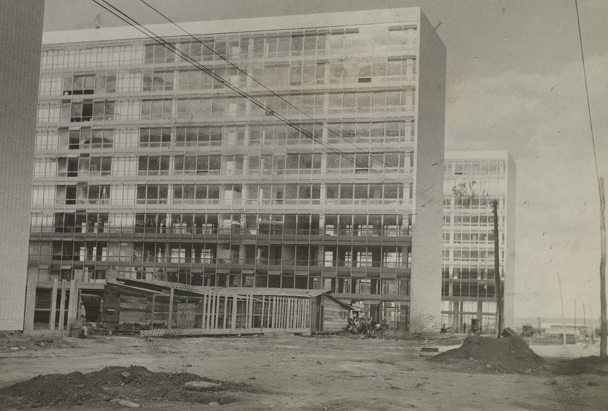
As justificativas públicas
1. O mandato constitucional: setenta anos de letra morta
A primeira justificativa é jurídica, e é a mais sólida. A Constituição republicana de 24 de fevereiro de 1891 determinava, no art. 3º:
"Fica pertencendo à União, no planalto central da República, uma zona de 14.400 quilômetros quadrados, que será oportunamente demarcada para nela estabelecer-se a futura Capital federal." [conferida na fonte: Planalto, https://planalto.gov.br/ccivil_03/constituicao/constituicao91.htm]
O parágrafo único completava: "Efetuada a mudança da Capital, o atual Distrito Federal passará a constituir um Estado." COMPROVADO.
A Constituição de 1934 retomou o tema no art. 4º das Disposições Transitórias: "Será transferida a Capital da União para um ponto central do Brasil." O presidente deveria nomear uma comissão de estudos, e a Câmara escolheria o local [redação reproduzida pela linha do tempo do STF e pela Revista de Informação Legislativa do Senado, v. 47, n. 188, https://www12.senado.leg.br/ril/edicoes/47/188/ril_v47_n188_p153.pdf; fonte secundária para a redação literal]. COMPROVADO quanto à existência do dispositivo.
A Constituição de 1946, no art. 4º do Ato das Disposições Constitucionais Transitórias, foi mais precisa: "A Capital da União será transferida para o planalto central do País." O texto previa ainda uma comissão de técnicos a ser nomeada em sessenta dias, uma lei especial e uma data a ser fixada pelo Congresso depois da demarcação [redação reproduzida na cronologia legislativa da Câmara dos Deputados, lida em trecho de resultado de busca; a página original devolveu erro 404 em 07/10/2026]. COMPROVADO.
A ironia vem da cronologia. Entre 1891 e 1956, a mudança foi obrigação constitucional por 65 anos e nunca saiu do papel. O mandato não explica por que a capital foi construída. Explica, quando muito, por que ninguém podia chamar a obra de ilegal. JK usou exatamente esse argumento: ele não teria inventado Brasília, apenas cumprido a Constituição. O argumento é verdadeiro e insuficiente ao mesmo tempo, porque seus antecessores também juraram cumprir a Carta e não mudaram nada.
2. A Missão Cruls: a ciência como certidão de batismo
Em 1892, o governo Floriano Peixoto enviou ao Planalto a Comissão Exploradora do Planalto Central, chefiada pelo astrônomo belga naturalizado brasileiro Luiz Cruls, diretor do Observatório Nacional. O relatório, publicado em 1894, demarcou o "Quadrilátero Cruls", de 14.400 km², delimitado por paralelos e meridianos [Câmara dos Deputados, Biblioteca Digital: https://bd.camara.leg.br/bd/items/ce299218-2711-4fe6-905b-626dd2af6b89; PDF reproduzido pelo Poder360: https://static.poder360.com.br/2020/04/relatorio-da-missao-que-explorou-brasilia.pdf; análise em História, Ciências, Saúde – Manguinhos, 2006: http://www.scielo.br/scielo.php?pid=S0104-59702006000400008&script=sci_arttext]. COMPROVADO.
A Missão Cruls deu à mudança um verniz positivista de ciência neutra, com clima, salubridade, altitude e águas medidos por instrumentos. Em 1956, esse relatório velho de sessenta anos foi usado como prova de que a escolha era técnica, e não política. Os estudos posteriores, como os da Comissão Polli Coelho (1946–48) e os da Comissão José Pessoa (1954–55), cuja secretaria coube ao médico Ernesto Silva, reforçaram essa leitura. Um detalhe registrado por Jeferson Tavares desmonta o determinismo geográfico: nos debates de 1946–48, JK e Israel Pinheiro defendiam a capital no Triângulo Mineiro, e não no Planalto (Tavares, "50 anos do concurso para Brasília", Arquitextos 086.07, 2007, https://vitruvius.com.br/revistas/read/arquitextos/08.086/234 [fonte secundária, via eixo-A, 2.10]). A geografia "inevitável" teve, portanto, alternativas, e entre seus defensores estavam os próprios fundadores.
3. Interiorização e integração nacional
A justificativa de maior apelo popular foi a interiorização. A tese diz que o Brasil vivia agarrado ao litoral, na imagem colonial de Frei Vicente do Salvador dos portugueses que se contentavam em arranhar o litoral como caranguejos (paráfrase da História do Brasil, de 1627; o original não foi conferido nesta sessão, por isso vai sem aspas). A tese seguinte é que uma capital no centro puxaria estradas, população e mercado para o Oeste. O TJDFT, em texto institucional, resume a leitura oficial: a cláusula de 1891 mostra "a importância que o governo republicano atribuía à época à ocupação das vastas áreas desabitadas do interior do país, como meio de garantir a integridade do território e a unidade nacional" [conferida na fonte: TJDFT, "A primeira Constituição da República", 2020, https://www.tjdft.jus.br/institucional/imprensa/campanhas-e-produtos/artigos-discursos-e-entrevistas/artigos/2020/a-primeira-constituicao-da-republica].
A integração tinha obras concretas: a Belém-Brasília, com mais de 2 mil km (Memorial da Democracia, card 4), as ligações com Belo Horizonte e Goiânia e o projeto ferroviário de 240 km até Pires do Rio (Mensagem ao Congresso de 1960, transcrita em doc.brazilia; ver eixo-A, 7.4). COMPROVADO como programa e como obra.
Os críticos responderam desde cedo. Na tribuna da nova Câmara, em 6 de julho de 1960, Carlos Lacerda argumentou que a integração nacional já estava feita, por Rio Branco nas fronteiras e por Rondon no sertão, e que a nova capital era supérflua. Também descreveu os prédios como "mausoléus da desnecessidade" (Lacerda, discurso de 06/07/1960, trechos em Misto Brasil, 08/03/2024, https://mistobrasil.com/2024/03/08/carlos-lacerda-chama-predios-de-brasilia-de-mausoleus-da-desnecessidade/ [fonte secundária; o Diário do Congresso não foi conferido]).
4. A profecia de Dom Bosco: o santo como sócio-fundador
Nenhuma justificativa diz tanto sobre a "fantasia" do título quanto a profecia. Em 30 de agosto de 1883, o sacerdote salesiano João Bosco teria sonhado com uma região entre os paralelos 15 e 20, junto a um lago, onde surgiria "a terra prometida, onde correrá leite e mel" (tradução citada pelo G1, 08/12/2024, https://g1.globo.com/df/distrito-federal/noticia/2024/12/08/sacerdote-italiano-teria-tido-sonho-profetico-sobre-brasilia-em-1883-entenda-a-historia.ghtml).
JK cita o sonho em Por que construí Brasília já com a expressão "Grande Civilização" e conta que se emocionou ao lê-lo (ed. Senado, 2000, p. 18 [conferida no dossiê, eixo-A, item 1]). A Agência Nacional produziu o cinejornal Brasília: profecia de São João Bosco, que abre com a cartela "surgirá a Grande Civilização, a Terra Prometida" (Gomes, "Brasília nos filmes da Novacap", Resgate, 2013 fonte secundária). COMPROVADO quanto ao uso propagandístico.
A palavra que dá grandeza ao sonho talvez não esteja no original. Segundo Fernando Tamanini, citado pelo historiador Matheus Rosa ao G1, o jurista goiano Segismundo Mello teria pedido ao padre Cleto Caliman que acrescentasse "civilização" à tradução. O texto teria chegado a Israel Pinheiro, devoto do santo. EM APURAÇÃO: a cadeia de transmissão é única (Tamanini → Rosa → G1) e falta conferir o original italiano das Memorie Biografiche, vol. XVI.
O episódio importa porque mostra um Estado laico recorrendo a um sonho católico como certidão de destino. A Constituição separava Igreja e Estado, e o urbanista pôs a Catedral "numa praça autônoma disposta lateralmente, não só por questão de protocolo, uma vez que a Igreja é separada do Estado" (Costa, Relatório do Plano Piloto, 1957, item 9 conferida na fonte). A capital modernista, laica e racional nasceu com padrinho no céu. E o arquiteto que desenhou a Catedral era ateu declarado (ver Parte III).
5. O Plano de Metas, "cinquenta anos em cinco" e a "meta-síntese"
O Programa de Metas de 1956 tinha 30 metas, distribuídas por energia, transportes, alimentação, indústrias de base e educação. Brasília entrou depois, como 31ª meta, chamada de "meta-síntese" (síntese de trabalhos acadêmicos, por exemplo a monografia da UFOP "50 anos em 5: história e resultados do Plano de Metas", https://www.monografias.ufop.br/bitstream/35400000/8391/3/MONOGRAFIA_Hist%C3%B3riaResultadosPlano.pdf; Memorial da Democracia, "Nacional-desenvolvimentismo", https://memorialdademocracia.com.br/card/nacional-desenvolvimentismo fontes secundárias). COMPROVADO.
O detalhe decisivo está no próprio JK. Quando Toniquinho o interpelou em Jataí, ele já tinha seu programa, "e em nenhuma parte dele existia qualquer referência àquele problema" (JK, Por que construí Brasília, trecho reproduzido pelo portal Disparada, https://disparada.com.br/juscelino-kubitschek-por-que-construi-brasilia/ [fonte secundária; o livro integral está em https://www2.senado.leg.br/bdsf/handle/id/1039]). A "síntese" do programa foi, portanto, acrescentada depois. Isso não diminui a obra, mas mostra que a racionalidade planejadora veio a reboque de uma decisão política.
O lema "cinquenta anos em cinco" é atribuído ao poeta Augusto Frederico Schmidt, conselheiro e redator de discursos de JK (Wikipédia, "Augusto Frederico Schmidt"; Sesc SP, "Schmidt, nosso 'gordinho sinistro'", https://portal.sescsp.org.br/online/artigo/3399_SCHMIDT+NOSSO+GORDINHO+SINISTRO fontes secundárias). EM APURAÇÃO quanto à autoria exata. O lema traduz uma filosofia do tempo político: o Brasil teria um atraso a recuperar, e o Estado, acelerado por um líder, faria em cinco anos o que a sociedade levaria cinquenta para fazer sozinha.
6. Segurança nacional
O argumento de que uma capital litorânea é vulnerável a bombardeio naval ou desembarque inimigo é antigo e reaparece nos debates da República. Paulo Mendes Campos registrou outra versão, mais moderna. Num jantar na fronteira com a Colômbia, JK teria apresentado Brasília como "padrão de posse" contra uma futura cobiça internacional pela Amazônia: "o Brasil ergue Brasília em cima da hora, como um padrão de posse" (Campos, "Brasília", Manchete, nº 1053, 24/06/1972, https://cronicabrasileira.org.br/cronicas/12959/brasilia conferida na fonte).
O vocabulário é o mesmo de Lúcio Costa, que apresentou o plano como "um ato deliberado de posse, de um gesto de sentido ainda desbravador, nos moldes da tradição colonial" (Relatório, 1957 conferida na fonte). COMPROVADO como discurso. Como necessidade militar real, é interpretação, e controversa, porque em 1960 a ameaça plausível ao Rio não era a esquadra estrangeira.
7. Desenvolvimento do Centro-Oeste
A capital deveria ser, nas palavras do próprio Costa, "não [...] uma decorrência do planejamento regional, mas a causa dele: a sua fundação é que dará ensejo ao ulterior desenvolvimento planejado da região" [Relatório, 1957, conferida na fonte]. É a lógica do polo de crescimento: plantar o Estado no meio do cerrado e esperar que a economia o siga. A população do DF passou de cerca de 6 mil em 1956 para 141.742 em 1960 e 546.015 em 1970 (IBGE; IPE-DF/Paviani, eixo-A, 4.2). COMPROVADO como efeito demográfico. Se a capital "desenvolveu" o Centro-Oeste ou se o agronegócio dos anos 1970 em diante teria vindo de qualquer forma é debate econômico aberto.
8. A retórica nacional-desenvolvimentista e o ISEB
O pano de fundo ideológico é o nacional-desenvolvimentismo. O Instituto Superior de Estudos Brasileiros (ISEB), criado em 1955 e vinculado ao Ministério da Educação, reuniu intelectuais como Hélio Jaguaribe, Álvaro Vieira Pinto, Roland Corbisier, Guerreiro Ramos e Nelson Werneck Sodré, este último historiador ligado ao PCB. Para o ISEB, o subdesenvolvimento era uma condição a ser superada por um projeto nacional conduzido pelo Estado (Memorial da Democracia, card "Nacional-desenvolvimentismo" [fonte secundária; lista de nomes a conferir no card]).
Historiadores econômicos observam que o desenvolvimentismo de JK foi mais "associado" ao capital estrangeiro, sobretudo na indústria automobilística, do que o "nacional" do vocabulário isebiano sugere (monografia da UFOP, citada acima fonte secundária). Para Brasília, o essencial é o seguinte: a cidade foi a forma visível de uma ideologia segundo a qual o Estado faz a nação, e não o contrário. Mário Pedrosa, o maior crítico de arte do país e trotskista de formação, viu o paradoxo: a cidade-manifesto do moderno era "uma tomada de posse à moda cabralina, chanfrando na terra o signo da cruz" ("Reflexões em torno da nova capital", 1957, citado por G. Wisnik em Releituras do Modernismo, BBM-USP, 2022, https://bbm.usp.br/documents/84/ReleiturasDoModernismo.pdf fonte secundária). Pedrosa cunhou também a fórmula de que somos, "pela fatalidade de nossa formação condenados ao moderno" ("Brasília, a cidade nova", 1959, citado por C. Favaretto, idem).
9. Jataí, 4 de abril de 1955: a promessa que virou destino
O mito de origem preferido de JK é um comício sob chuva. Segundo o Memorial JK, o comício de abertura da campanha, em Jataí (GO), foi transferido para o salão de um revendedor de automóveis Studebaker por causa de um temporal, e a plateia foi menor do que o esperado (http://www.memorialjk.com.br/bsb/pgs/1comicio.htm [conferida na fonte, por trecho]). JK pregou o respeito "integral" à Constituição. Um ouvinte perguntou se isso incluía o dispositivo da mudança da capital. Na versão do próprio JK, a resposta foi:
"Acabo de prometer que cumprirei, na íntegra, a Constituição e não vejo razão por que esse dispositivo seja ignorado. Se for eleito, construirei a nova Capital e farei a mudança da sede do Governo." (JK, Por que construí Brasília, 1975; ed. Senado 2000, pp. 6–7 conferida na fonte)
COMPROVADO quanto ao episódio, com uma divergência de nome. No livro, JK chama o interpelante de "António Carvalho Soares – vulgo Toniquinho", e o Memorial da Democracia segue essa grafia. O Memorial JK e a OAB-GO o identificam como Antônio Soares Neto, o "Toniquinho JK" (https://www.oabgo.org.br/oab-go-rende-suas-homenagens-a-toniquinho-jk/). Conferir antes de pôr na tela.
O site do Memorial JK acrescenta um contexto que interessa mais ao filme do que a anedota: naquele momento, "um impressionante esquema de pressão, a que se vincularam generais das três Armas e o próprio Presidente da República, João Café Filho, buscava forçá-lo a desistir da candidatura, advertindo-o, claramente, de que jamais tomaria posse, se chegasse a ser eleito" (http://www.memorialjk.com.br/bsb/pgs/1comicio.htm conferida na fonte). Atenção à natureza da fonte: a frase é do texto narrativo institucional, sem assinatura, do site do Memorial JK. Não está no livro de JK nem em documento de época. A mesma página admite que a pregação legalista de JK "era o que verdadeiramente pensava e sentia, mas essa colocação convinha também a sua causa" conferida na fonte.
O núcleo da afirmação é COMPROVADO por outras fontes. Em janeiro de 1955, os três ministros militares, Canrobert, Juarez Távora e outros chefes assinaram um memorando pedindo um candidato "único e civil", e Café Filho o leu na Voz do Brasil em 27/01/1955 (Atlas Histórico do Brasil, CPDOC/FGV, verbete "Movimento do 11 de Novembro", de Sérgio Lamarão, https://atlas.fgv.br/verbete/6022 conferida na fonte). O aviso pessoal de que JK "jamais tomaria posse" aparece só na narrativa do Memorial. Não foi localizado em documento. A promessa de Jataí foi feita, portanto, por um candidato sob veto militar, e esse dado ilumina a Parte II.
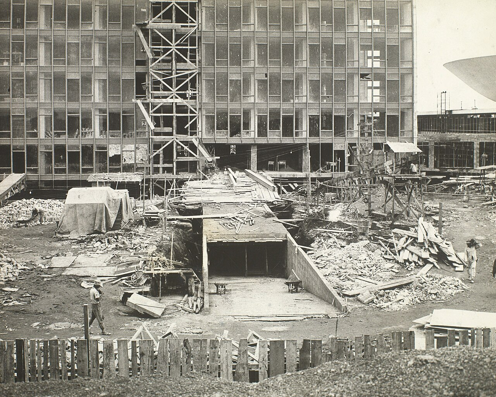
As motivações de realpolitik (hipóteses, interpretações e o que se pode provar)
Advertência: nenhuma das hipóteses abaixo aparece como intenção declarada em documento oficial. São leituras de historiadores, adversários e críticos, ou inferências a partir dos efeitos. Cada uma traz sua etiqueta.
O candidato sob veto: o que os documentos mostram
Etiqueta: COMPROVADO quanto aos fatos; interpretação quanto ao cálculo. As fontes de cada frase vêm logo abaixo do texto.
Quando Juscelino prometeu a nova capital em Jataí, em 4 de abril de 1955, fazia mais de dois meses que o presidente Café Filho lera na Voz do Brasil um memorando dos três ministros militares, de Canrobert e de Juarez Távora pedindo um candidato "único e civil" — qualquer um, desde que não fosse ele. Entre os signatários estava o ministro da Guerra, Henrique Lott, o mesmo que dez meses depois poria os tanques na rua para lhe garantir a posse. A ironia não termina aí. Onze dias depois do comício, uma comissão nomeada por Café Filho e presidida por um marechal, José Pessoa, escolheu o sítio da futura cidade. A capital no Planalto não era uma ideia contra os quartéis: era um velho projeto dos próprios quartéis, da comissão do general Polli Coelho à do marechal Pessoa. O candidato vetado a tomou para si, embrulhada na única bandeira que o veto não podia rasgar, a Constituição. O próprio JK admitiria que a resposta de Jataí fora "política até certo ponto"; a memória oficial, mais franca, diz que a pregação legalista "convinha também a sua causa".
O que os documentos mostram depois da posse é menos uma conspiração contra os generais do que uma engenharia paciente contra a oposição. JK fez o governo de Goiás patrocinar a mensagem e deu a um udenista, Emival Caiado, a autoria da lei que fixou a data. Reservou à UDN um terço da direção da Novacap — e a lista tríplice do partido, por sinal, trazia o nome de Café Filho. A lei que criou a companhia, ele a sancionou "após o jantar, sem qualquer publicidade", para não "alertar a Oposição". Com os militares, a moeda era outra: soldo, equipamento, um porta-aviões e a permanência de Lott. Em agosto de 1958, diante de Foster Dulles, o presidente pediu mais armas para o Exército porque, nas palavras do memorando americano, ele era "a key element in the support of his government". Brasília entrava nessa conta pela porta lateral: a Engenharia do Exército carregou as máquinas da Belém–Brasília, e oitenta alunos da Escola Superior de Guerra foram ver o canteiro.
Nenhum memorando secreto conhecido diz que a cidade foi erguida para escapar do Rio, ocupar a tropa ou desarmar o veto. Os ministérios militares, aliás, só subiriam o Planalto entre o fim dos anos 1960 e o começo dos 1970, já sob outro regime. O que a cidade fez, nas palavras do biógrafo Ronaldo Costa Couto, foi redefinir "a agenda política": trocou a pergunta "ele pode tomar posse?" por "ficará pronta a tempo?". Para a embaixada americana, era a "bid for posterity" de Kubitschek. Para a UDN, que acabou admitindo, pela boca de Antônio Carlos Magalhães, que "o pior dos crimes é negar a evidência", era uma evidência de concreto armado. Em 1960, a oposição já não dizia que JK não podia governar; dizia que usaria Brasília para governar demais, num "golpe continuísta". Os golpistas de 1955 tinham virado fiscais da Constituição. Foi a vingança mais elegante que o veto poderia receber — e nenhum documento diz que foi planejada.
Fontes deste trecho:
- Memorando de janeiro de 1955, Voz do Brasil (27/01) e signatários: Atlas CPDOC, verbete 6022, https://atlas.fgv.br/verbete/6022 conferida na fonte.
- Lott entre os signatários: o verbete de Lott no Dicionário Histórico-Biográfico Brasileiro (DHBB/FGV) diz que o documento foi "assinado pelos três ministros militares", e Lott era o ministro da Guerra. Espelho do verbete: https://wiki-dhbb.netlify.app/3008 [conferida na fonte; conferir também no portal do CPDOC].
- Escolha do sítio (15/04/1955) pela comissão de José Pessoa: JK, Por que construí Brasília, ed. Senado 2000, pp. 27–29 conferida na fonte. Em carta a JK de 17/11/1954, o marechal Pessoa conta que o ministro da Guerra prometera "sediar um Batalhão de Engenharia do nosso Exército em Pirapora ou Formosa": http://doc.brazilia.jor.br/HistDocs/1954-11-17-carta-Pessoa-JK.shtml [conferida na transcrição; original no Relatório da CLNCF, 1955, não conferido].
- General Djalma Polli Coelho, diretor do Serviço Geográfico do Exército, presidente da comissão de 1946: Memória IBGE, https://memoria.ibge.gov.br/historia-do-ibge/galeria-de-presidentes/20959-djalma-polli-coelho.html conferida na fonte.
- "Política até certo ponto": JK, p. 7 conferida na fonte. "Convinha também a sua causa": Memorial JK (texto institucional sem assinatura) conferida na fonte.
- Patrocínio de Goiás, Emival Caiado, lista tríplice da UDN (Café Filho, Jales Machado, Íris Meinberg) e sanção "após o jantar": JK, pp. 8, 44–45 e 108–109 conferida na fonte. "Alertar a Oposição": p. 44.
- Soldo, equipamento, promoções e Lott: Sheldon Maram, "Juscelino Kubitschek and the Politics of Exuberance, 1956–1961", Luso-Brazilian Review 27:1, 1990, p. 37, https://warwick.ac.uk/fac/arts/history/students/modules/hi2f1/programme/seminar15/sheldon_maram_on_jk_1990_lbr.pdf conferida na fonte.
- Porta-aviões Minas Gerais, "atendendo a reivindicação da Marinha e da Aeronáutica": CPDOC, biografia de JK, https://cpdoc.fgv.br/biografias/juscelino-kubitschek conferida na fonte.
- "A key element in the support of his government": memorando de conversa, Palácio Laranjeiras, 05/08/1958, FRUS 1958–60, v. V, doc. 254, nota 9, https://history.state.gov/historicaldocuments/frus1958-60v05/d254 conferida na fonte. É resumo americano, não citação direta de JK.
- Engenharia do Exército e "verdadeira operação de guerra": JK, pp. 122–123. Visita da ESG (01/09/1957): JK, p. ~164 conferida na fonte.
- Ministérios militares em Brasília só em 1967–73: títulos de telegramas do Departamento de Estado no repositório Opening the Archives (Brown University), por exemplo "Brasilia Soon to Have Military Ministers" (09/03/1967, bdr:364544) e "Additional Army Branches Transferred from Rio to Brasilia" (17/01/1973, bdr:805065), https://repository.library.brown.edu/studio/item/bdr:364544/ [só título e data conferidos].
- "Redefiniu a agenda política": a frase literal é "Com Brasília, ele redefiniu a agenda política, deslocou o eixo das discussões" (Ronaldo Costa Couto, entrevista a Vitruvius, 2002, http://vitruvius.com.br/revistas/read/entrevista/03.010/3342?page=4 conferida na fonte). A pergunta "ele pode tomar posse?" é formulação deste ensaio.
- "Kubitschek's bid for posterity": despacho do embaixador Ellis Briggs, "Brazil in 1958", 31/12/1957, FRUS 1955–57, v. VII, doc. 372, https://history.state.gov/historicaldocuments/frus1955-57v07/d372 conferida na fonte.
- Antônio Carlos Magalhães: JK, p. 301 (discurso citado por JK; Anais da Câmara não conferidos). "Golpe continuísta" e nota oficial sobre os "golpistas de ontem": JK, pp. 396–397 conferida na fonte.
O que não está documentado. Não se localizou nenhum documento que trate Brasília como tática contra os militares ou como fuga dos quartéis. Essa ausência vale para memorandos, cartas e depoimentos de JK e de seus auxiliares, e também para os relatórios americanos. A estimativa de inteligência americana de 08/01/1957, que descreve um Exército dividido e uma Marinha e uma Aeronáutica "in part hostile", nem menciona a capital (FRUS 1955–57, v. VII, doc. 354, https://history.state.gov/historicaldocuments/frus1955-57v07/d354 conferida na fonte).
O geógrafo José William Vesentini sustenta que Brasília serviu à "cooptação de certas categorias sociais, como os militares, políticos e jornalistas" ("O espaço do mesmo", Boletim Paulista de Geografia, nº 62, 1985, https://publicacoes.agb.org.br/boletim-paulista/article/download/990/881/2385 conferida na fonte). É interpretação, apoiada nos efeitos, não em documento de intenção. Dossiê completo: jk-veto-militar-e-brasilia.md.
A Novacap: uma empresa para não pedir licença
Etiqueta: COMPROVADO quanto ao desenho legal, ao financiamento declarado e às investigações; EM APURAÇÃO quanto à corrupção alegada. As fontes de cada frase vêm logo abaixo do texto. Dossiê completo: novacap.md.
Brasília não foi construída por um ministério. Foi construída por uma sociedade anônima cujas ações pertenciam todas à União: a Companhia Urbanizadora da Nova Capital do Brasil, criada pela Lei 2.874, de 19 de setembro de 1956, a mesma que JK sancionou depois do jantar. A lei, desenhada por San Tiago Dantas, deu à companhia a terra inteira do futuro Distrito Federal, crédito com garantia do Tesouro "no país ou no exterior", isenção de impostos e de direitos de importação, o poder de desapropriar e o de dispensar concorrência por simples "decisão fundamentada que constará da ata" do seu próprio conselho. JK resumiu com franqueza: a diretoria "dispunha de poderes amplos [...] sem qualquer nova audiência do Congresso".
O controle existia no papel, e era engenhoso. As contas iriam ao Tribunal de Contas e ao Congresso, os contratos sairiam num boletim mensal e um terço dos cargos caberia ao "maior partido político que integrar a corrente da oposição". A UDN mandou três nomes, Café Filho entre eles, e JK escolheu o deputado Íris Meinberg. Em pouco tempo o fiscal da oposição era o diretor financeiro da obra e defendia o orçamento em nome da companhia. Lacerda perguntou se ele estava lá "para fiscalizar ou para se associar ao sr. Israel Pinheiro". Cooptação ou convicção, os documentos não dizem. O efeito foi tirar da oposição o argumento de que ninguém fiscalizava.
A promessa era uma cidade "autofinanciável", paga com a venda de lotes, "sem pesarem em nada, absolutamente nada, no Orçamento da União", segundo Israel Pinheiro na revista da companhia. A conta não fechou: no fim de 1958, o Conselho Fiscal da própria Novacap registrava que só cerca de um quarto dos 13.841 lotes postos à venda tinha sido vendido. O resto veio de crédito. Em 14 de maio de 1959, no plenário, um governista enumerou os empréstimos: "10 milhões de dólares tomados aos americanos, 2 bilhões de cruzeiros do Banco do Brasil e 700 milhões de cruzeiros, se não me engano, do BNDE e mais alguns feitos aos Institutos". Outro lembrou que a União só pusera 320 milhões em dinheiro. O "se não me engano" é do próprio deputado.
A terra virou moeda. Em 1959, para apressar a ocupação, a Novacap pôs senadores e deputados no topo da fila dos lotes, ampliou as prestações para até cem e prometeu devolver o que fora pago a quem terminasse a casa até a inauguração. Na prática, como resume a historiadora Maria Fernanda Derntl, que leu as atas da companhia, haveria "doação do lote pela Novacap". Naquele mesmo 14 de maio, um dia depois da data do pedido de CPI, Lacerda citou no plenário o edital da assembleia que trataria de "cessão e doação de lotes em Brasília" e acusou a companhia de querer "comprar a opinião dos Senadores e Deputados, doando-lhes terreno em Brasília". O mecanismo existiu. A intenção que Lacerda lhe atribuiu continua sendo acusação.
O desfecho é menos espetacular do que as manchetes. A CPI só foi constituída depois da inauguração, e os 14 relatórios da sua Subcomissão de Contadores (1961–1962) ainda esperam leitor. Depois do golpe, um inquérito policial-militar sobre a Novacap, aberto em agosto de 1964, indiciou dezenas de pessoas, entre elas João Goulart e Israel Pinheiro. Em 1967, a Justiça do DF reconheceu a prescrição para 31 indiciados e arquivou o caso de outros oito, Israel Pinheiro incluído, por falta de justa causa. Sobre o período Goulart, o Ministério Público escreveu que o "alentado volume de IPM provou em relação a peculato" apenas "o desvio de 10.000 tijolos e de outro tanto de telhas". JK foi cassado em 8 de junho de 1964 por um decreto que não declara motivo. A ditadura o investigou em IPMs e, depois do AI-5, na Comissão Geral de Investigações, que chegou a propor o confisco de seus bens, nunca executado; nenhuma condenação dele por corrupção foi localizada. A Novacap sobreviveu a todos: passou à Prefeitura do DF em 1960, entregou a terra à Terracap em 1972 e é hoje uma empresa pública do Governo do Distrito Federal.
O que a Novacap ensina ao filme não é um crime provado; é um método. Quando o Estado quer fazer depressa, cria uma empresa que não precisa pedir licença, dá à oposição uma cadeira em vez de uma voz e paga parte da conta com o bem mais disputado do país, a terra pública. Interpretação deste ensaio.
Ficha da Novacap. Criação: Lei 2.874, de 19/09/1956 (diretoria nomeada em 24/09/1956). Capital: Cr$ 500 milhões, todo da União, dos quais Cr$ 320 milhões em dinheiro e o resto em terra e acervo. Diretoria inicial: Israel Pinheiro (presidente), Ernesto Silva, Bernardo Sayão e Íris Meinberg (cota da UDN). Poderes: terra do DF, crédito com aval do Tesouro, isenções, desapropriação e dispensa de concorrência pelo conselho. Controle previsto: TCU, boletim mensal e um terço de oposicionistas. Investigações: CPI (pedida em 1959, constituída em 1960), sindicâncias de Jânio (1961) e IPM (1964–1967, encerrado com prescrição e arquivamento). Hoje: empresa pública do GDF, encarregada de obras e manutenção urbana. Condenação por corrupção na construção: nenhuma localizada.
Fontes deste trecho:
- Lei 2.874/1956, arts. 2º, c (garantia do Tesouro), 9º–10 (capital), 12, § 6º (oposição), 13–15 (isenções e desapropriações), 16 (TCU), 19 (boletim) e 21 (dispensa de concorrência): https://www.planalto.gov.br/ccivil_03/leis/1950-1969/l2874.htm conferida na fonte.
- San Tiago Dantas, sanção, "poderes amplos" e lista tríplice: JK, Por que construí Brasília, ed. Senado 2000, pp. 44–45 conferida na fonte. ArPDF, "Fundo Novacap": https://www.arquivopublico.df.gov.br/fundo-novacap-companhia-urbanizadora-da-nova-capital conferida na fonte.
- Meinberg diretor financeiro: Derntl, "Brasília: empreendimento imobiliário de fins dos anos 1950", Antíteses, v. 14, n. 28, 2021, p. 131, https://ojs.uel.br/revistas/uel/index.php/antiteses/article/view/44080 conferida na fonte. "Para fiscalizar ou para se associar": Lacerda, Tribuna da Imprensa, 10/07/1959, citado por Pantoja (dissertação, UnB, 2012, p. 50), https://repositorio.unb.br/bitstream/10482/12353/1/2012_JoaoLeoneldaRosaPantoja.pdf fonte secundária.
- "Autofinanciável", "sem pesarem em nada", lotes vendidos, fila de preferência e "doação do lote": Derntl, Antíteses, 2021, pp. 135–136 e 145–146, com base na revista Brasília (1957, p. 16; 1959, p. 23) e nas atas e pareceres da Novacap no ArPDF [fonte secundária quanto aos documentos da companhia].
- Empréstimos ("se não me engano"), "320 milhões" e discurso de Lacerda sobre a doação de lotes: Diário do Congresso Nacional, Seção I, 14/05/1959, p. 2060 (deputados Corrêa da Costa, Castro Costa e Carlos Lacerda), https://imagem.camara.leg.br/Imagem/d/pdf/DCD14MAI1959.pdf [conferida na fonte, por OCR com conferência visual].
- CPI: Resolução nº 37/1960 (requerimento datado de 13/05/1959), https://www2.camara.leg.br/legin/fed/rescad/1960-1969/resolucaodacamaradosdeputados-37-13-maio-1960-319889-publicacaooriginal-1-pl.html conferida na fonte. 14 relatórios da Subcomissão de Contadores: Vaitsman, Quanto custou Brasília (1968), segundo resenha em doc.vfco fonte secundária.
- IPM da Novacap (1964–1967): TJDFT, Memorial, "Inquérito Policial Militar em desfavor de João Goulart, Evandro Lins e Silva e outros", https://www.tjdft.jus.br/institucional/gestao-do-conhecimento/gestao-da-memoria/documentos/processos-historicos/processo-historico_inquerito-policial-militar-em-desfavor-de-joao-goulart [conferida na fonte; autos não consultados].
- IPMs e CGI contra JK, confisco não executado: Diego Knack, "O caso Juscelino", História da Ditadura, 02/12/2016, com base no Arquivo Nacional, Fundo CSN/CGI, cx. 282, https://www.historiadaditadura.com.br/post/o-caso-juscelino-como-a-ditadura-militar-tratou-as-den%C3%BAncias-de-corrup%C3%A7%C3%A3o-contra-jk fonte secundária.
- Cassação de JK: Decreto de 08/06/1964, DOU de 08/06/1964, p. 4828, https://www2.camara.leg.br/legin/fed/decret_sn/1960-1969/decreto-36446-8-junho-1964-547902-publicacaooriginal-62799-pe.html conferida na fonte.
- Passagem à Prefeitura e Terracap: Lei 3.751/1960, art. 48, https://www2.camara.leg.br/legin/fed/lei/1960-1969/lei-3751-13-abril-1960-354316-normaatualizada-pl.html ; Lei 5.861/1972, https://www.planalto.gov.br/ccivil_03/leis/l5861.htm [conferidas na fonte].
1. Afastar o governo da pressão popular e do Rio politizado
Etiqueta: interpretação historiográfica (EM APURAÇÃO como intenção; COMPROVADO como efeito).
Nos anos 1950, o Rio de Janeiro era o lugar mais politizado do país. Ali estavam:
- a imprensa nacional: a Tribuna da Imprensa de Lacerda, o Correio da Manhã, O Globo e a Última Hora de Samuel Wainer;
- os sindicatos mais combativos e os estudantes;
- a multidão que chorou Vargas em agosto de 1954 e atacou jornais de oposição;
- as guarnições militares cujos movimentos derrubavam e garantiam governos. O contragolpe de Lott, em 11 de novembro de 1955, assegurou a posse de JK, e as revoltas de Jacareacanga (1956) e Aragarças (1959) foram feitas sobretudo por oficiais da Aeronáutica. Em Aragarças, a revolta reuniu dez oficiais da FAB, três do Exército e uns poucos civis, segundo o DHBB, verbete Lott.
Governar o Brasil era, em larga medida, governar a rua do Rio.
A hipótese diz que uma capital a quase mil quilômetros dali tornaria o poder menos vulnerável à rua, à imprensa e aos quartéis. Não localizei documento em que JK ou seus auxiliares declarem essa intenção. JK sempre apresentou Brasília como integração, nunca como fuga. O efeito, porém, foi descrito por críticos de linhas diversas:
- Raymundo Faoro descreve o chefe que "fala ao povo, não aos intermediários por este criados, do palácio à sociedade, em dois planos separados" (Os donos do poder, 3ª ed., Globo, 2001, "Capítulo final" [conferida em cópia digitalizada; a página varia por edição]). Faoro não escreve sobre Brasília. A transposição é deste ensaio, mas a fórmula descreve a planta com precisão quase topográfica.
- James Holston (The Modernist City, 1989; A cidade modernista, Companhia das Letras, 1993) argumenta que o projeto modernista e o desenvolvimentista pretendiam romper com a história brasileira e até com sua estrutura de classes, e que a cidade habitada acabou por reafirmar o que queria abolir. A "morte da rua" é um dos seus temas centrais [paráfrase].
- Frederico de Holanda chama Brasília de "espaço de exceção", cujos arranjos sociais são "altamente segmentários, fortemente insulados e hierárquicos" (O espaço de exceção, 2ª ed., 2018, p. 124 conferida na fonte, https://www.observatoriodasmetropoles.net.br/wp-content/uploads/2018/04/O_ESPACO_DE_EXCECAO_Livro_completo.pdf).
- Edson Nunes fornece o conceito político: o "insulamento burocrático", ilhas técnicas protegidas da política (A gramática política do Brasil, 1997 [paráfrase]).
Os contemporâneos perceberam o mesmo. Drummond escreveu, às vésperas da mudança: "para Brasília não vai ninguém de dois pés. O que vai é papel" ("Simbólico", Correio da Manhã, 03/01/1960, https://cronicabrasileira.org.br/cronicas/17485/simbolico conferida na fonte). Em 1961, Rachel de Queiroz viu a sede do Executivo isolada "pelo simples expediente de cortar com um alicate alguns metros de fio elétrico" ("Tempo parado", O Cruzeiro, 11/11/1961, https://cronicabrasileira.org.br/cronicas/9161/tempo-parado [conferida em fac-símile]).
O dado mais forte a favor da hipótese é retrospectivo. Quatro anos depois da inauguração, o regime de 1964 governou de Brasília por 21 anos, e a distância da rua o serviu muito bem. A Esplanada só foi tomada por multidões em momentos raros: as Diretas (1984), o impeachment (1992), junho de 2013 e o 8 de janeiro de 2023. Depois de 2023, a resposta foi mais grade. Claudio Brandão registra que "grades de contenção tornaram-se parte permanente da paisagem de Brasília para manter os cidadãos afastados dos políticos e conter possíveis manifestações violentas" (Arquitextos 278.02, 2023, https://vitruvius.com.br/revistas/read/arquitextos/24.278/8853 conferida na fonte). Efeitos posteriores, porém, não provam intenção em 1956. A formulação mais antiga dessa hipótese em fonte primária é de um adversário, Carlos Lacerda, em 1957 (ver item 7, "Genealogia de um apelido").
2. O legado de JK e a ambição de 1965
Etiqueta: COMPROVADO quanto à pretensão de voltar em 1965; interpretação quanto ao cálculo de usar Brasília como plataforma.
A Constituição de 1946 proibia a reeleição imediata. JK deixou o governo em janeiro de 1961 com enorme popularidade, e seu retorno em 1965 era amplamente esperado. A candidatura "JK-65" chegou a ser lançada pelo PSD em 1964, antes de o regime militar cassar seus direitos políticos, em junho daquele ano. O fato é amplamente conhecido, mas o verbete de JK no CPDOC/FGV não foi reconsultado nesta sessão: conferir datas antes do roteiro. Uma obra irreversível, inaugurada no último ano de mandato, era um monumento que nenhum sucessor poderia apagar.
A pressa sustenta essa leitura. O planejamento de Lucas Lopes previa cerca de 15 anos para implantar a capital, com um fundo de 1% do orçamento anual (resenha de Sonho e razão, de Rodrigo Lopes, em doc.brazilia [fonte secundária; livro não consultado]). JK fez em cerca de 43 meses. A data de inauguração, 21 de abril de 1960, foi fixada por lei a partir de projeto de um deputado da UDN, Emival Caiado (Lei 3.273, de 1º/10/1957; JK, pp. 108–109 conferida no dossiê). O prazo cabia exatamente no mandato. Bojunga (JK: o artista do impossível, Objetiva, 2001) e Couto (Brasília Kubitschek de Oliveira, Record, 2001) narram essa corrida em chave simpática ao personagem [paráfrase; trechos não conferidos nesta sessão]. Se a pressa servia à nação, ao calendário eleitoral ou aos dois, é questão de interpretação.
3. Empreiteiras, contratos sem concorrência e clientela política
Etiqueta: COMPROVADO quanto às suspeitas formais e à investigação; EM APURAÇÃO quanto a irregularidades específicas.
O requerimento de CPI "para examinar a construção de Brasília", apresentado em 13/05/1959, citava contratos sem concorrência e os custos dos palácios. Assinaram, entre outros, Carlos Lacerda, Bilac Pinto, Adaucto Cardoso, Franco Montoro, Magalhães Pinto e José Sarney. Depois da inauguração, em 2 e 3 de maio de 1960, vários signatários retiraram as assinaturas, e o deputado Clemens Sampaio justificou a retirada pela "repercussão" do "acontecimento do Século". A CPI acabou constituída pela Resolução nº 37/1960 (Câmara dos Deputados, https://www2.camara.leg.br/legin/fed/rescad/1960-1969/resolucaodacamaradosdeputados-37-13-maio-1960-319889-publicacaooriginal-1-pl.html [conferida no dossiê, eixo-A, 2.6]). Jânio Quadros abriu sindicâncias sobre a Novacap em 1961. COMPROVADO.
O que essas apurações concluíram é outra questão. Maurício Vaitsman (Quanto custou Brasília, 1968) reproduz relatórios da Subcomissão de Contadores, mas o conteúdo desses relatórios não foi consultado por este dossiê. Esta pesquisa não localizou condenação judicial por corrupção na construção. O inquérito policial-militar de 1964 sobre a Novacap terminou, em 1967, com prescrição e arquivamento (ver "A Novacap: uma empresa para não pedir licença", acima). Por isso, a frase "Brasília foi feita para enriquecer empreiteiros", como acusação genérica, é BOATO. O que está documentado é que a Novacap operava com enorme discricionariedade, contratos diretos e autonomia quase soberana (Ribeiro, O capital da esperança, 2008 [paráfrase]). A própria lei de criação da Novacap foi sancionada, nas palavras de JK, "após o jantar, sem qualquer publicidade" (JK, p. 44 conferida no dossiê).
O efeito político de longo prazo é mais claro que o eventual crime. Brasília inaugurou, em escala federal, a relação entre grandes obras públicas, construtoras nacionais e coalizões partidárias que a literatura sobre o "presidencialismo de coalizão" (Abranches, Dados, 1988) e a história das empreiteiras descrevem nas décadas seguintes. Dizer que essa relação começa em Brasília é interpretação. Que Brasília a tenha acelerado é plausível.
4. Especulação imobiliária
Etiqueta: interpretação historiográfica com base documental parcial.
O Relatório de Lúcio Costa não esconde o mercado. O item 22 trata de "como dispor do terreno e torná-lo acessível ao capital particular". Propõe a venda de "quotas de terreno, cujo valor dependerá do setor em causa e do gabarito", com preço "oscilável conforme a procura", e a Companhia funcionando "em grande parte, como incorporadora" conferida na fonte. O Estado era dono da terra, urbanizador e incorporador ao mesmo tempo. A historiadora Maria Fernanda Derntl (FAU-UnB) estuda Brasília também como empreendimento imobiliário dos anos 1950 (grupo "Capital e Periferia", https://capitaleperiferia.unb.br/producao/ [paráfrase]). O historiador Matheus Rosa pesquisa as desapropriações de 1955 a 1958 (eixo-A, seção 5).
A valorização das terras no entorno e a corrida de compradores bem informados são temas recorrentes na memória da construção. Não localizei, porém, documento que ligue nominalmente os fundadores a ganhos fundiários. Está documentado, isto sim, um favorecimento institucional na distribuição da terra: em 1959, a Novacap deu prioridade a senadores e deputados na compra de lotes e criou condições que terminavam em doação (ver "A Novacap", acima). EM APURAÇÃO: pauta para os arquivos da Novacap (APDF) e para os cartórios de Luziânia, Planaltina e Formosa.
5. Inflação e financiamento pela emissão de moeda
Etiqueta: COMPROVADO quanto à aceleração inflacionária; interpretação quanto ao peso específico de Brasília.
O IGP-DI anual foi de 24,56% em 1956, 6,95% em 1957, 24,37% em 1958, 39,44% em 1959 e 30,46% em 1960 (série 190 do SGS/BCB; cálculo do dossiê, eixo-A, 4.5).
As estimativas de custo variam muito:
- Eugênio Gudin, ex-ministro da Fazenda e expoente do liberalismo econômico: cerca de US$ 1,5 bilhão, em valores da época (Poder360, https://www.poder360.com.br/brasilia/construcao-de-brasilia-custou-12-do-pib-brasileiro/ fonte secundária).
- Lincoln Gordon, ex-embaixador dos EUA: US$ 1,6 bilhão, obra "financiada pela impressão de papel-moeda" e "paga por todo o povo brasileiro" (depoimento de 1966, reproduzido por Vaitsman, p. 11, segundo resenha em doc.vfco fonte secundária).
- Marcelo de Paiva Abreu (PUC-Rio): custo direto de 2% a 3% do PIB, com a lembrança de que as operações de defesa do café custaram três vezes isso (citado por Rodrigo Lopes, p. 177 fonte secundária).
Não existe custo oficial consolidado. A tese de que "Brasília causou a inflação" é argumento de época (Gudin, Gordon, UDN) e de parte da historiografia econômica, que atribui o problema ao Plano de Metas como um todo, e não à capital isoladamente. Brasília pesou; quanto, continua em disputa. Rachel de Queiroz fez a conta moral em 1959, numa carta aberta a JK: "Mas que lhe adiantará construir os belíssimos palácios de Brasília [...] se neste mesmo quinquênio [...] alguns milhões de brasileiros literalmente morreram de fome?" ("Socorro!", O Cruzeiro, 07/02/1959, https://cronicabrasileira.org.br/cronicas/9149/socorro conferida na fonte).
6. Considerações militares e estratégicas
Etiqueta: interpretação.
O argumento de defesa contra ataque marítimo (Parte I, item 6) tem uma face interna: uma capital longe dos quartéis do Rio estaria, em tese, menos exposta a golpes de guarnição. Não localizei documento que sustente essa intenção. A história, além disso, desmentiu o argumento: o golpe de 1964 partiu de Minas Gerais e do Rio, e a capital no Planalto não o impediu. O próprio plano reservava lugar aos militares. O Relatório põe "os ministérios militares constituindo uma praça autônoma" e prevê "os quartéis" ao longo do eixo monumental (itens 9 e 14 conferida na fonte). A força armada estava dentro do desenho, ao lado do poder, e não afastada dele. Na prática, os ministérios militares só se transferiram do Rio entre 1967 e 1973 (ver "O candidato sob veto", acima), o que enfraquece ainda mais a tese da "fuga dos quartéis". A cooptação militar documentada no governo JK passou pelo orçamento, pelo equipamento e pela figura de Lott (Maram, 1990, p. 37; FRUS 1958–60, v. V, doc. 254).
7. A "ilha" do poder
Etiqueta: COMPROVADO como efeito urbano, econômico e policial; interpretação como projeto. Fontes no fim do item; dossiê: ilha-do-poder-dossie.md.
Clarice Lispector disse melhor do que os sociólogos: "A cidade de Brasília fica fora da cidade"; "Por mais perto que se esteja, tudo aqui é visto de longe"; "Uma prisão ao ar livre" ("Nos primeiros começos de Brasília", A descoberta do mundo, Rocco, 1999, pp. 292–295 conferida na fonte). Em 1960, Simone de Beauvoir escreveu a Nelson Algren que os operários "começaram construindo sua própria cidade, algumas milhas afastadas, simples barracos de madeira e lojas", e concluiu: "esta cidade jamais terá alma, coração, carne ou sangue" (Um amor transatlântico, p. 525, citada por Fernando de Barros e Silva, Folha de S.Paulo, 09/07/2007 fonte secundária).
Beauvoir viu o primeiro anel, e a versão conhecida da história para aí. O Plano Piloto manteve à distância as cidades-satélites, e o próprio Lucio Costa admitiu em 1987 que "a longa distância entre as satélites e o 'Plano Piloto' isolou demais a matriz dos dois terços de sua população metropolitana" (Brasília revisitada, Anexo I do Decreto distrital 10.829/1987 conferida na fonte). O desenho do afastamento não parou nas satélites. Ele se repete em escala nacional: o Brasil inteiro se relaciona com a capital como uma satélite se relaciona com o Plano. Chega-se de longe, pagando caro, em dia marcado, por um corredor vigiado; ao fim do expediente, volta-se para casa. É interpretação.
A interpretação é deste ensaio, mas a geometria não. Frederico de Holanda, o crítico mais minucioso do espaço da capital, escreve que em Brasília "a questão de um forte isolamento recorre em vários níveis, do mais global - Brasília como um todo em face do resto do espaço nacional ao mais local - a Esplanada dos Ministérios em face do resto do Plano Piloto" (O espaço de exceção, 2ª ed., 2018, p. 429 conferida na fonte). Antes, ele identifica "dois tipos de separação": uma "entre o estado e a sociedade civil", outra "entre a cidade-capital e qualquer região historicamente consolidada no Brasil", que marca "a relação radicalmente transpacial entre a capital e o país como um todo" (p. 302 conferida na fonte). São anéis concêntricos: a Esplanada, o Plano, as satélites e, por fim, o país.
O anel interno: uma praça para desfiles
O Relatório do Plano Piloto destinava a Esplanada a "pedestres, a paradas e a desfiles". A Praça dos Três Poderes seria um "terrapleno triangular... sobrelevado na campina circunvizinha", ao qual se chega "pela própria rampa da auto-estrada" (item 9 conferida na fonte). O decreto que tombou a cidade em 1987 fixou que a Esplanada "será de uso exclusivo dos Ministérios Federais" (Decreto 10.829/1987, art. 3º, IV conferida na fonte). "Exclusivo" é uma palavra estranha num espaço que se pretende cívico.
Holanda mediu o resultado. Na Esplanada, "campeã" entre os espaços que analisou, 67,5% dos espaços são "cegos": "Não há uma única porta abrindo diretamente para o espaço convexo central" (p. 322 conferida na fonte). É um lugar "na qual ninguém põe os pés em dias comuns, exceto por seus 'habitantes'", isto é, a burocracia federal (p. 362). O depoimento mais preciso é do autor, que marchou ali: "Uma sensação deveras estranha é inescapável durante uma passeata de funcionários do Estado nos espaços abertos da Esplanada: os manifestantes são ao mesmo tempo atores e exclusivos espectadores de sua (nossa) própria manifestação" (p. 328 conferida na fonte). Praça cívica que só funcionário percorre é sala de espera.
O segundo anel: o Plano e suas periferias
O anel seguinte foi feito com trator. Ceilândia nasceu da CEI, a Campanha de Erradicação de Invasões; Taguatinga, de uma remoção em 1958; e a Vila Amaury ficou debaixo do lago (eixo-A, 2.13–2.15). Com a terra nas mãos do Estado, primeiro da Novacap e depois da Terracap (ver "A Novacap", acima), a distância virou renda. Segundo o IPEDF, a renda domiciliar per capita é de R$ 15.780,19 no Lago Sul e de R$ 815,85 no SCIA/Estrutural (PDAD-A 2024, Informe Distrital de Rendimentos, 26/01/2026 conferida na fonte), cerca de dezenove vezes menos [cálculo deste ensaio]. Na mesma pesquisa, o setor público tem renda média de R$ 10.483,53, contra R$ 3.003,32 dos empregados do setor privado conferida na fonte. Em 2009, aos 101 anos, Niemeyer descreveu o resultado sem eufemismo: "os que moram nas cidades-satélites estão completamente abandonados. É horrível, uma grande favela" (Folha de S.Paulo, 02/02/2009 conferida na fonte).
O terceiro anel: o país, que fica de fora
O mesmo mecanismo vale para o país, e a prova mais seca está numa tabela oficial. A Câmara informa que a cota parlamentar "é diferente para cada estado da Federação, porque leva em consideração o preço das passagens aéreas de Brasília até a capital do estado pelo qual o deputado foi eleito". A de Roraima é de R$ 58.474,70 por mês; a do DF, a menor, de R$ 41.612,55 (Guia para jornalistas, Câmara dos Deputados conferida na fonte). A diferença, R$ 16.862,15 [cálculo deste ensaio], é o preço que o Estado atribui à distância, e o próprio Estado a cobre. O deputado tem ainda "até oito passagens aéreas por mês", auxílio-moradia de R$ 4.253,00 ou um dos 432 apartamentos funcionais das superquadras conferida na fonte.
O cidadão não tem cota. A tarifa média doméstica em 2025 foi de "aproximadamente R$ 648,00 por trecho" (ANAC, Anuário, 07/07/2026 conferida na fonte). Ida e volta à média nacional custam mais que o rendimento domiciliar per capita mensal de um maranhense, R$ 1.219 (IBGE, PNAD Contínua 2025 conferida na fonte) [cálculo ilustrativo deste ensaio; médias de naturezas diferentes]. No mesmo levantamento, o DF tem o maior rendimento per capita do país, R$ 4.538, quase o dobro da média brasileira, de R$ 2.316 conferida na fonte. A capital é, ao mesmo tempo, o lugar mais rico e o mais caro de alcançar. Em escala nacional, o DF ocupa o lugar que o Lago Sul ocupa no DF (interpretação).
Mesmo quem chega encontra o poder aberto em horário restrito. Desde 2012, as sessões de segunda e sexta na Câmara servem só a debates; um deputado chamou a regra de "licença para que os deputados não trabalhem às segundas e sextas" (Agência Câmara, 17/10/2012 conferida na fonte). Uma ilha com expediente de três dias.
Na portaria, a assimetria fica explícita. Depois do 8 de janeiro, o visitante comum do Congresso passou a apresentar "documento de identificação original para cadastro prévio em sistema informatizado", e a inspeção vale para todos, menos para "parlamentares e autoridades da República" (G1, 08/01/2026 conferida na fonte). Os lobistas credenciados entram "sem informar seu destino nas portarias", de modo que "não há registro da movimentação dos lobistas"; em 2026, a Câmara negou à imprensa a lista desses credenciados, invocando "segurança institucional" (Folha de S.Paulo, Laura Scofield, 24/04/2026 conferida na fonte). O cidadão é cadastrado; o crachá é sigiloso. A ilha tem pontes, mas com pedágio (interpretação).
A rua que ficou para trás
As maiores multidões da história política brasileira se reuniram longe do poder que queriam pressionar. Pelas Diretas, a Candelária reuniu, em 10/04/1984, "mais de um milhão", "a maior manifestação de rua da história do Brasil até aquele momento" (Memorial da Democracia conferida na fonte). Quando a decisão chegou a Brasília, o regime fechou o acesso. O Decreto 89.566, de 18/04/1984, impôs medidas de emergência para "preservar a ordem pública na área do Distrito Federal, ameaçada de grave perturbação", num perímetro que alcançava municípios goianos até Goiânia, Anápolis e Jataí, e submetia transmissões de rádio à "aprovação prévia" do Ministério das Comunicações conferida na fonte. A ironia é deste ensaio: a cidade onde JK prometeu a mudança em 1955 (Parte I, item 9) entrou no cordão que isolaria a capital da campanha pelo voto direto.
O objetivo, nas palavras do Memorial da Democracia, era "isolar Brasília, evitar manifestações pró-Diretas e intimidar o Congresso Nacional". No dia da votação, a emenda caiu "sem que o país pudesse acompanhar os discursos e os votos pelo rádio ou pela TV. As informações saíam do prédio apenas por telefone e por telex" (Memorial da Democracia conferida na fonte). Trinta anos depois, o maestro Jorge Antunes resumiu: "a medida de emergência foi uma espécie de sítio local", e recordou "o general Newton Cruz com a tropa, de cavalo, correndo e chicoteando entre os carros que buzinavam" (G1/Jornal da Globo, 2014 conferida na fonte). O general negou: "Isso é a maior farsa que já existiu..." (Folha, 25/04/2004 conferida na fonte). Episódio disputado: as chicotadas têm duas versões. O decreto não é disputado.
O padrão se repetiu em democracia, com outros meios. Em 20/06/2013, segundo a BBC, "estima-se que 300 mil pessoas saíram às ruas do Rio de Janeiro"; no mesmo dia, cerca de 30 mil tomaram a Esplanada, acompanhadas por "cerca de 7 mil policiais" (BBC Brasil; Agência Câmara, 20/06/2013 conferida na fonte). Em 1997, a Marcha Nacional do MST mostrou o preço de chegar sem passagem: três colunas, com 1.300 pessoas, saíram de São Paulo, Governador Valadares e Rondonópolis e caminharam dois meses até a Esplanada (Memorial da Democracia conferida na fonte). Na chegada, à tarde, "uma chuva forte dispersou os manifestantes" (Folha, 18/04/1997 conferida na fonte).
Em abril de 2016, a Esplanada ganhou um muro: alambrados opacos "de até 2,20 metros" num corredor de um quilômetro (O Globo conferida na fonte). Depois de 2023, vieram as grades permanentes que Claudio Brandão registrou (item 1, acima).
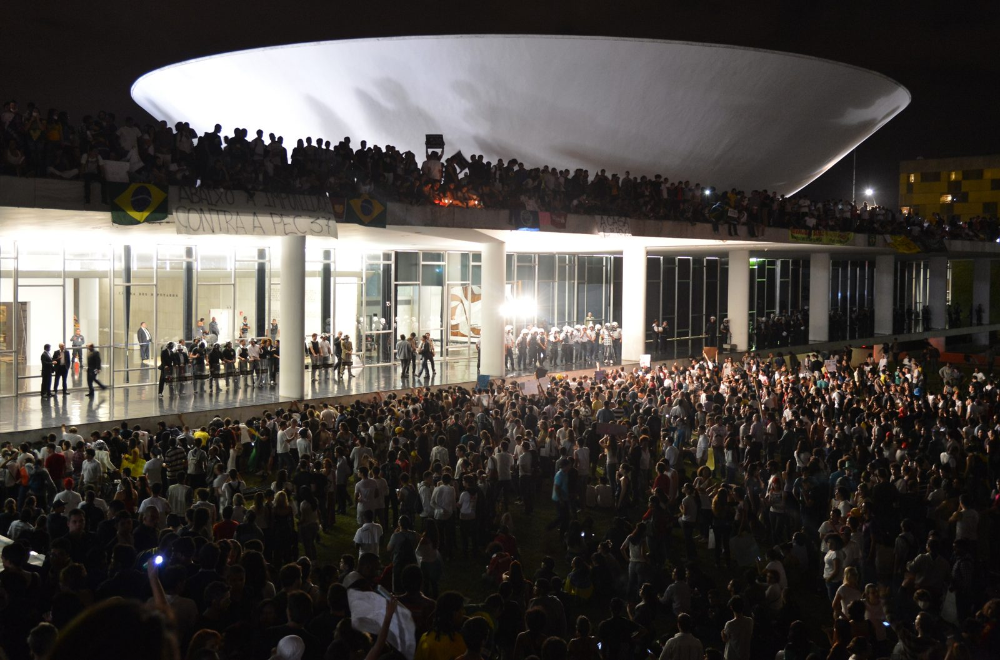
Genealogia de um apelido
A ilha foi prevista antes de existir, e por um adversário. Em 1957, Carlos Lacerda disse temer "o insulamento do Govêrno Federal": no Rio, os governantes estavam "tendo diante de si milhões de olhos para criticá-los, para fiscalizá-los, para estimulá-los ou castigá-los" (Câmara, discurso de 28/08/1957, Diário do Congresso Nacional de 30/08/1957, p. 6691 conferida na fonte). É a versão primária mais forte da hipótese do item 1. A Tribuna da Imprensa foi mais longe: JK "quer ir para Brasília para fugir do povo", numa "torre de marfim... forrada... com isolante, para não ouvir as lamúrias ou as vaias do público" (02/07/1957, citada por Pantoja, 2012, pp. 30–31 fonte secundária). Quinze anos depois, JK registrou, sem queixa, que "a tranquilidade da atmosfera do Planalto não era propícia aos arroubos tribunícios", e que a política passara às "conversas ao pé do ouvido, no interior dos apartamentos" (Por que construí Brasília, p. 395 conferida na fonte).
O nome veio depois. O uso mais antigo localizado por esta pesquisa, que não é necessariamente o primeiro, é a série "A Ilha da Fantasia", de Luiz Fernando Emediato, no Estado de S. Paulo, em maio de 1984, semanas depois do cerco das Diretas. Nela, Brasília aparece como "um paraíso artificial", onde "vivem fortemente protegidos, os donos do poder e seus cortejadores intocáveis" (Acervo Estadão, 08/05/2019 [fonte secundária; página de 1984 não consultada]). Em 2018, Holanda já registra a expressão como lugar-comum: "Esta 'ilha da fantasia', como o discurso social freqüentemente se refere à capital, é antes de mais nada um símbolo que não deve ser manchado por referências mundanas" (pp. 301–302 conferida na fonte).
Em 2023, o apelido escapou da boca de um ministro da Casa Civil, Rui Costa: "Aquele negócio de botar a capital do País longe da vida das pessoas, na minha opinião, fez muito mal ao Brasil" (Bahia Notícias, via Estadão, 02/06/2023 fonte secundária). Dias depois, pediu desculpas: "Não fui feliz nas minhas palavras" (Estadão conferida na fonte). O apelido começou como arma da oposição udenista, virou reportagem contra a ditadura e acabou como gafe de governo (interpretação).
A ressalva honesta
Três objeções precisam constar.
A primeira: Brasília teve grandes protestos. Houve a Marcha do MST, o teto do Congresso tomado em 2013 sob o grito de "O Congresso Nacional é nosso" (Agência Senado, 17/06/2013 conferida na fonte) e o 8 de janeiro de 2023, que provou da pior maneira que a ilha pode ser invadida. Holanda reconhece que a cidade "tem testemunhado... significativas manifestações de massa contra a ordem dominante" e que, no impeachment de 1992, "uma das mais impressionantes se deu em Brasília" (p. 432 conferida na fonte). E acrescenta, com malícia, que Versalhes "não impediu a eclosão da Revolução Francesa (mas o rei foi então trazido de volta para Paris...)".
A segunda: Lucio Costa tinha intenção cívica. Imaginou uma escala gregária e uma Esplanada para pedestres e, em 1988, celebrou a Rodoviária tomada pela "população periférica": "Foi o Brasil de verdade, o lastro popular que tomou conta da área. Isso deu uma força enorme à Capital, me fez feliz de ter contribuído involuntariamente para essa realização" (depoimento ao ArPDF, citado por Rossetti, Arquitextos 119.03, 2010 fonte secundária). O advérbio "involuntariamente" diz o essencial: o Brasil de verdade chegou ao centro pela porta da rodoviária, não pela da Esplanada.
A terceira: não houve conspiração. Holanda adverte que não se trata de uma "'conspiração' da burocracia estatal com o fim de proteger-se no deserto do planalto central" e que a ideologia de Brasília "é hegemônica no país" (p. 300 conferida na fonte). Sarney, de dentro, sustentou que a pressão chegou mesmo assim: "O que existia no Rio veio em dobro" (Folha, 27/08/1999 conferida na fonte).
Este ensaio aceita as três objeções, e fica entre Holston e seus críticos (item 1, acima): a ilha não foi o objetivo declarado, mas foi a consequência previsível de escolhas declaradas. Ela não tem muralha; tem distância, passagem, expediente e catraca. Quem pode pagar a ponte (o parlamentar com cota, o lobista com crachá, a corporação com sede no Setor de Autarquias) atravessa toda semana. Quem não pode chega a pé, de ônibus fretado ou pela televisão, e no dia certo. Não foi preciso projetar o isolamento: bastou desenhar a cidade para o automóvel e para o desfile, e deixar o resto do país fazer as contas (interpretação).
Fontes deste item (lidas em 08/10/2026, salvo indicação; páginas e classes em ilha-do-poder-dossie.md):
- Clarice e Beauvoir: https://cronicabrasileira.org.br/cronicas/5890/nos-primeiros-comecos-de-brasilia · Barros e Silva, "Brasília, de Beauvoir a Roriz", Folha, 09/07/2007: https://www1.folha.uol.com.br/fsp/opiniao/fz0907200703.htm
- Lucio Costa: Brasília revisitada 1985/87 e Decreto distrital 10.829/1987: https://www.sinj.df.gov.br/sinj/norma/15139/decreto_10829_14_10_1987.html · Rossetti, Arquitextos 119.03 (2010): https://vitruvius.com.br/revistas/read/arquitextos/10.119/3371
- Holanda, O espaço de exceção (2ª ed., 2018), pp. 300–302, 322, 328, 362, 429 e 432: https://www.observatoriodasmetropoles.net.br/wp-content/uploads/2018/04/O_ESPACO_DE_EXCECAO_Livro_completo.pdf
- Renda: IPEDF, PDAD-A 2024, Informe Distrital de Rendimentos (26/01/2026): https://ipe.df.gov.br/w/ipedf-divulga-panorama-da-renda-no-distrito-federal · IBGE, rendimento domiciliar per capita 2025 (27/02/2026): https://agenciadenoticias.ibge.gov.br/agencia-sala-de-imprensa/2013-agencia-de-noticias/releases/45942-ibge-divulga-rendimento-domiciliar-per-capita-2025-para-brasil-e-unidades-da-federacao
- Niemeyer, "Entrevista da 2ª", Folha, 02/02/2009: https://www1.folha.uol.com.br/fsp/brasil/fc0202200913.htm
- Cota parlamentar, auxílio-moradia e apartamentos funcionais: Câmara dos Deputados, Guia para jornalistas: https://www2.camara.leg.br/comunicacao/assessoria-de-imprensa/guia-para-jornalistas/cota-parlamentar
- Tarifa aérea: ANAC, Anuário do Transporte Aéreo (07/07/2026): https://www.gov.br/anac/pt-br/noticias/2026/confira-a-nova-edicao-do-anuario-do-transporte-aereo-da-anac
- Semana de terça a quinta: Agência Câmara, 17/10/2012: https://www.camara.leg.br/noticias/386659-camara-confirma-sessoes-de-segundas-e-sextas-apenas-para-debates
- Visitantes e lobistas: G1, 08/01/2026: https://g1.globo.com/df/distrito-federal/noticia/2026/01/08/8-de-janeiro-tres-anos-apos-atos-predios-da-praca-dos-tres-poderes-mantem-seguranca-reforcada-para-visitas-entenda.ghtml · Scofield, Folha, 24/04/2026: https://www1.folha.uol.com.br/poder/2026/04/motta-nega-acesso-a-nomes-de-lobistas-com-acesso-livre-a-camara-dos-deputados.shtml
- Diretas: Memorial da Democracia, https://www.memorialdademocracia.com.br/card/diretas-ja e https://memorialdademocracia.com.br/card/contra-diretas-tanques-ameacam-brasilia · Decreto 89.566/1984: https://planalto.gov.br/ccivil_03/decreto/1980-1989/d89566.htm
- Newton Cruz, as duas versões: G1/Jornal da Globo, 2014: https://g1.globo.com/jornal-da-globo/noticia/2014/04/votacao-da-emenda-das-diretas-ja-aconteceu-ha-exatos-30-anos.html · Folha, 25/04/2004: https://www1.folha.uol.com.br/fsp/brasil/fc2504200414.htm
- 2013: BBC Brasil, 20/06/2013: https://www.bbc.com/portuguese/noticias/2013/06/130620_protestos_quinta_rio_pai_cq · Agência Câmara, 20/06/2013: https://www.camara.leg.br/noticias/407388-cerca-de-30-mil-pessoas-ocuparam-a-esplanada-em-novo-dia-de-manifestacao · Agência Senado, 17/06/2013: https://www12.senado.leg.br/noticias/materias/2013/06/17/marcha-do-vinagre-termina-com-subida-ao-teto-do-congresso-nacional
- MST, 1997: Memorial da Democracia, https://www.memorialdademocracia.com.br/card/marcha-do-mst-toma-a-capital-federal · Folha, 18/04/1997: https://www1.folha.uol.com.br/fsp/brasil/fc180409.htm
- Muro de 2016: O Globo: https://oglobo.globo.com/politica/impeachment-manifestantes-pro-contra-serao-separados-na-esplanada-19053182
- Lacerda, 28/08/1957: https://www2.camara.leg.br/atividade-legislativa/plenario/discursos/escrevendohistoria/Carlos-Lacerda-28081957.pdf · Tribuna da Imprensa, 02/07/1957, via Pantoja (2012): https://repositorio.unb.br/bitstream/10482/12353/1/2012_JoaoLeoneldaRosaPantoja.pdf · JK, p. 395: ver
jk-longe-do-rio-frases.md. - "Ilha da Fantasia": Acervo Estadão, 08/05/2019: https://www.estadao.com.br/acervo/1984-brasilia-a-ilha-da-fantasia/ · Rui Costa, Estadão, 2023: https://www.estadao.com.br/politica/ministro-rui-costa-casa-civl-governo-lula-brasilia-ilha-fantasia-nprp/ e https://www.estadao.com.br/politica/nao-fui-feliz-rui-costa-pede-desculpas-por-ter-chamado-brasilia-de-ilha-da-fantasia-nprp/
- Sarney, Folha, 27/08/1999: https://www1.folha.uol.com.br/fsp/opiniao/fz27089907.htm
Os dez personagens
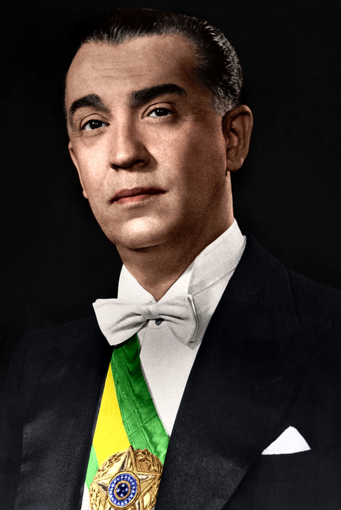
Juscelino Kubitschek
1902–1976O fundador-candidato
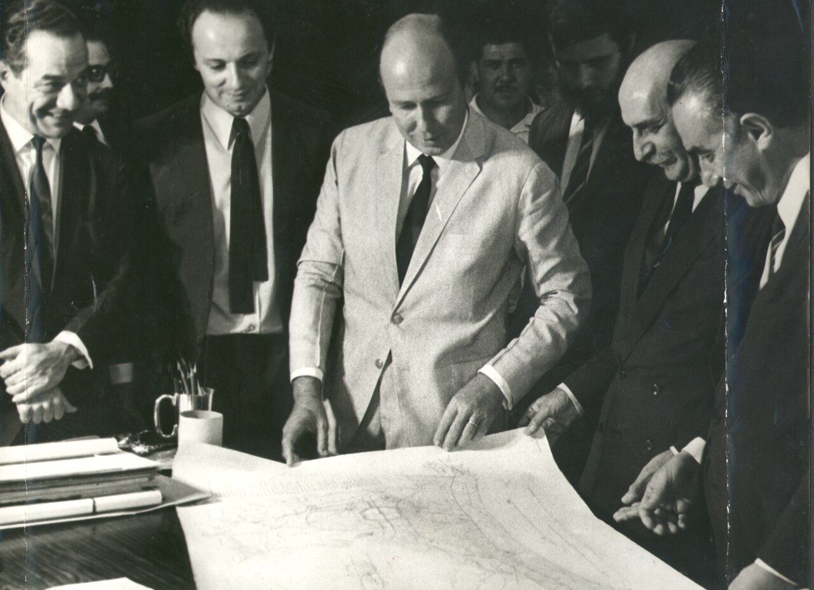
Lúcio Costa
1902–1998O urbanista do “ato deliberado de posse”
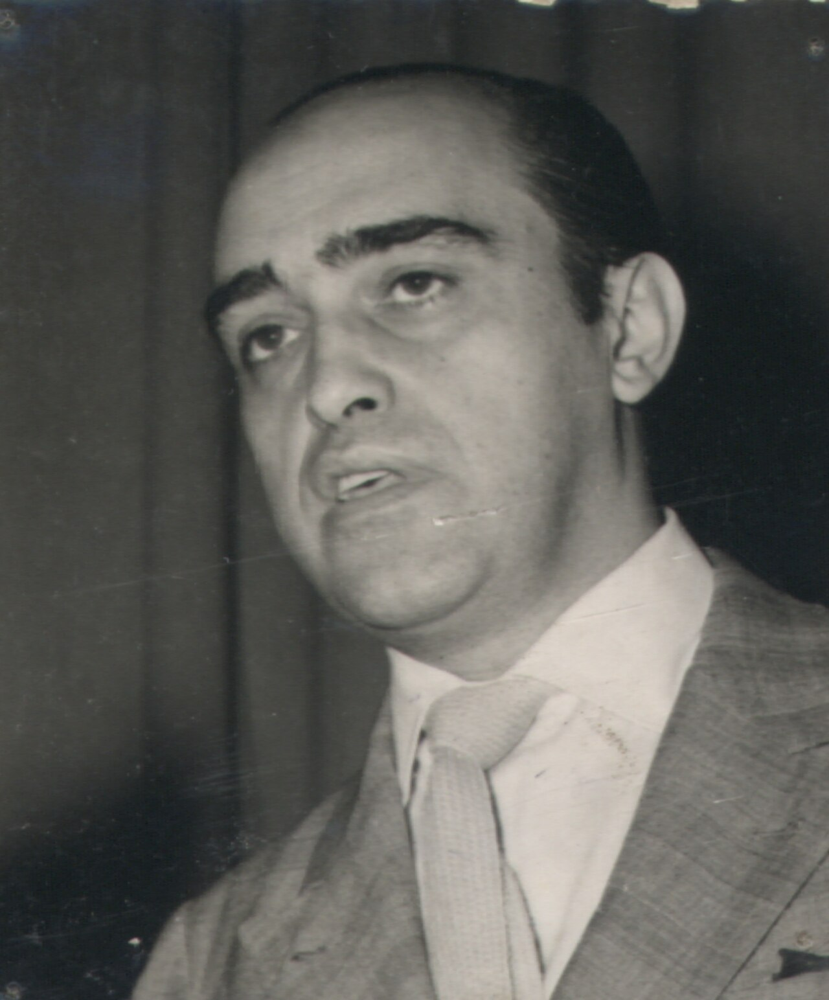
Oscar Niemeyer
1907–2012O arquiteto comunista do poder
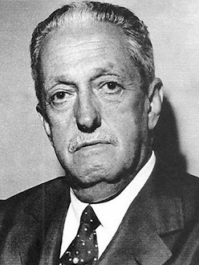
Israel Pinheiro
1896–1973O executor da Novacap
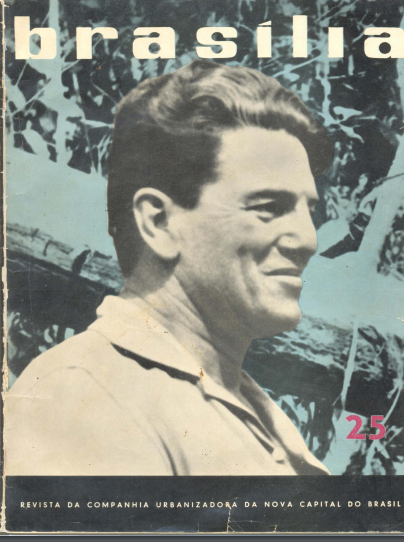
Bernardo Sayão
1901–1959O pioneiro da estrada
Ernesto Silva
1914–2010O médico burocrata da mudança
Joaquim Cardozo
1897–1978O poeta que calculou os palácios
Augusto Frederico Schmidt
1906–1965O poeta católico que escrevia a voz do presidente
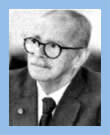
Darcy Ribeiro
1922–1997A utopia universitária
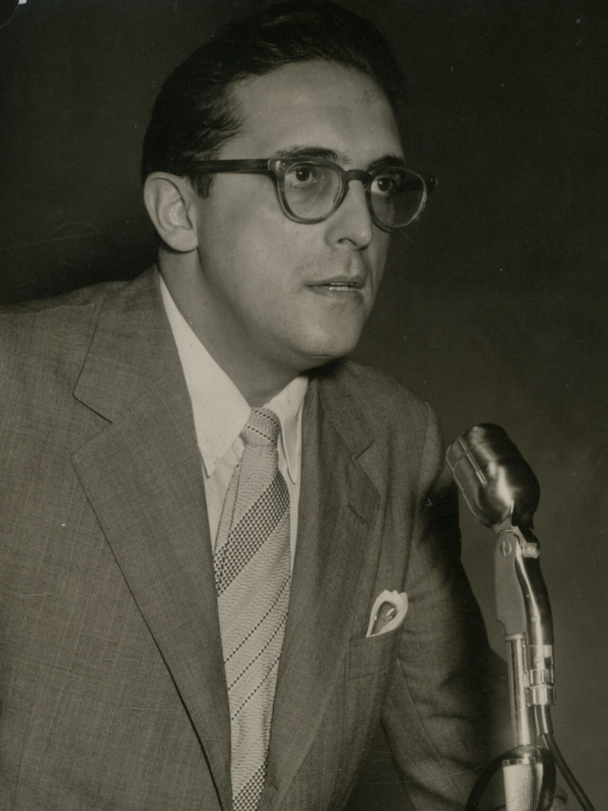
Carlos Lacerda
1914–1977O adversário como contraprova
Critério de escolha. Pesaram três coisas: papel decisivo na concepção, na construção ou na legitimação da cidade; diversidade de perfis (político, urbanista, arquiteto, engenheiro, pioneiro, ideólogo e opositor); e existência de declarações verificáveis.
Ficaram de fora como personagens centrais, com menção pontual:
- Roberto Burle Marx e Athos Bulcão, porque não foram verificadas falas suas sobre o sentido político da cidade;
- Lucas Lopes, documentado apenas por fonte secundária.
Advertência sobre os perfis. Os dados biográficos básicos (datas, cargos e partidos) vêm do conhecimento corrente e das fontes indicadas. Onde um dado não foi conferido nesta sessão, isso está dito.
1. Juscelino Kubitschek de Oliveira (1902–1976): o fundador-candidato
Perfil.
- Médico mineiro de Diamantina.
- Prefeito de Belo Horizonte, quando encomendou a Pampulha a Niemeyer; depois governador de Minas e presidente da República pelo PSD (1956–1961). O PSD era um partido de centro, conservador e de base rural, herdeiro do getulismo.
- Católico praticante. Desenvolvimentista pragmático, sem marxismo e sem doutrina rígida.
- Teve os direitos políticos cassados em 1964 e morreu em 1976, num desastre de automóvel na via Dutra.
Religião. O catolicismo de JK era público e politicamente útil. A primeira missa de Brasília (03/05/1957) e a profecia de Dom Bosco foram incorporadas à propaganda oficial (eixo-A, 2.9 e 4.1). A frase mais célebre de sua biografia política, "Deus poupou-me o sentimento do medo", tem autoria disputada. O discurso seria de Schmidt, e a frase, segundo uma das versões, sugestão do escritor Autran Dourado (Estadão e Observatório da Imprensa, https://www.observatoriodaimprensa.com.br/memoria/_ed715_afinal_quem_escreve_a_historia/ fontes secundárias). A tradição a apresenta como resposta ao veto de 1955 (por exemplo, Silvestre Gorgulho, Correio Braziliense, artigo de opinião, 31/01/2026). Mas esta pesquisa não localizou a fonte primária: o discurso, a data e o veículo em que a frase foi dita ou publicada. Usar só como "frase atribuída". EM APURAÇÃO.
Visão pública de Brasília. Uma cidade-destino, interiorizadora e moderna, capaz de transformar a "solidão" do Planalto no "cérebro das altas decisões nacionais":
"Deste Planalto Central, desta solidão que em breve se transformará em cérebro das altas decisões nacionais, lanço os olhos mais uma vez sobre o amanhã do meu País e antevejo esta alvorada, com fé inquebrantável e uma confiança sem limites no seu grande destino." (02/10/1956; Por que construí Brasília, ed. Senado 2000, pp. 53–54 conferida na fonte)
Visão privada e contradições. O livro confessa que a capital não estava no programa (episódio de Jataí, Parte I) e exibe a sensibilidade de dono diante da cidade provisória. Sobre a Cidade Livre: "Era uma espécie de Cingapura tupiniquim, com seus bares, seus restaurantes misteriosos" (p. 87 conferida no dossiê). JK nega a "ponte aérea" de tijolos, com a frase "A alegação era tão inverídica quanto maliciosa" (pp. 94–95 conferida no dossiê), e trata a CPI como manobra de Lacerda (pp. 251–254). Sobre o massacre da GEB (1959) e sobre as mortes no canteiro, que nunca foram contadas, o livro não diz o que um filme precisaria ouvir (ver eixo-A, 2.1 e 2.2).
Como a cidade deveria funcionar, para ele. Como sede de um Executivo forte, que se dirige à nação a partir do centro. O "cérebro" da sua frase é a metáfora exata: decisões tomadas no alto e transmitidas ao corpo.
2. Lúcio Costa (1902–1998): o urbanista do "ato deliberado de posse"
Perfil.
- Nasceu em Toulon, na França, e formou-se na Escola Nacional de Belas Artes.
- Começou neocolonial e converteu-se ao modernismo de Le Corbusier. Foi o mestre da geração de Niemeyer: chefiou a equipe do edifício do Ministério da Educação e Saúde, no Rio, e trabalhou décadas no SPHAN, com Rodrigo Melo Franco de Andrade.
- Esta pesquisa não localizou militância partidária nem religiosa de Costa: não lhe atribuir nenhuma.
- O próprio Relatório revela um reformista que trabalha dentro da ordem existente. A "gradação social" das quadras aparece ali como "as gradações próprias do regime vigente".
Visão pública: a cidade como civitas, monumental e igualitária "num certo grau". Todas as citações a seguir foram conferidas na transcrição integral (doc.brazilia, http://doc.brazilia.jor.br/plano-piloto-Brasilia/relatorio-Lucio-Costa.shtml; ed. Iphan 2018):
- "Trata-se de um ato deliberado de posse, de um gesto de sentido ainda desbravador, nos moldes da tradição colonial."
- "Nasceu do gesto primário de quem assinala um lugar ou dele toma posse: dois eixos cruzando-se em ângulo reto, ou seja, o próprio sinal da cruz." (item 1)
- A cidade deve ser concebida "não apenas como URBS, mas como CIVITAS", com "caráter monumental. Monumental, não no sentido de ostentação, mas no sentido da expressão palpável, por assim dizer, consciente, daquilo que vale e significa."
- Sobre as superquadras: "as quadras contíguas à rodovia serão naturalmente mais valorizadas que as quadras internas, o que permitirá as gradações próprias do regime vigente; contudo, o agrupamento delas, de quatro em quatro, propicia num certo grau a coexistência social, evitando-se assim uma indevida e indesejável estratificação." (item 17)
- "Neste sentido deve-se impedir a enquistação de favelas tanto na periferia urbana quanto na rural. Cabe à Companhia Urbanizadora prover dentro do esquema proposto acomodações decentes e econômicas para a totalidade da população." (item 17)
- Para as casas de "alto padrão arquitetônico": "o afastamento mínimo de um quilômetro de casa a casa, o que acentuará o caráter excepcional de tais concessões." (item 18)
A contradição está no próprio texto. O item 17 promete coexistência e prevê, na mesma passagem, a "gradação social". O item 18 prevê o enclave dos ricos, embrião do Lago Sul. O item 20 reserva a orla "para os passeios e amenidades bucólicas de toda a população urbana". Trinta anos depois, Costa admitiu o "surgimento precoce e improvisado das cidades satélites" e o isolamento de dois terços da população (Brasília revisitada, 1987 conferida na fonte).
A frase não verificada. Circula a versão de que Costa teria dito, em Conterrâneos velhos de guerra (Vladimir Carvalho, 1990/91), que o massacre de 1959 "não tem a menor importância" do ponto de vista da construção da cidade. NÃO VERIFICADA no filme: aparece só na Wikipédia e no G1. Não usar literalmente antes de conferir a minutagem.
3. Oscar Niemeyer (1907–2012): o arquiteto comunista do poder
Perfil ideológico, sem atenuantes. Niemeyer filiou-se ao Partido Comunista Brasileiro (PCB) em 1945 (Folha de S.Paulo, 10/09/2010, https://www1.folha.uol.com.br/fsp/mundo/ft1009201004.htm conferida na fonte). Permaneceu comunista declarado até morrer, aos 104 anos. A Folha o descreveu, em 2010, como "um dos artistas brasileiros mais radicais na defesa do comunismo". A mesma reportagem registra que Fidel Castro, na carta de renúncia de 2008, escreveu: "Penso como Niemeyer que é preciso ser consequente até o final" [conferida na reportagem; carta original não conferida].
Declarações conferidas na fonte (entrevista à Folha de S.Paulo, "Quando a vida se degrada, só a revolução", 14/09/2002, https://www1.folha.uol.com.br/fsp/ilustrad/fq1409200209.htm):
- Revolução: "Eu sempre digo que quando a vida se degrada e a esperança sai do coração dos homens, só a revolução." Perguntado se armada: "Se for preciso, sim."
- Fidel: "Nós precisamos usar aqui o exemplo do Fidel. [...] É um sujeito muito bom, é um líder da América Latina."
- URSS e Stalin: "O que se passou na União Soviética foi um acidente de percurso. Outro dia veio um soviético falar comigo. Perguntei a ele o que ele pensava de Stálin. Ele disse que estava de acordo com tudo o que ele fez. De modo que a idéia não acabou. Está no ar."
- Capitalismo e o partido: "O regime capitalista nunca nos abriu uma brecha para o mundo melhor que queremos." / "Acho que tem que mudar o regime." / "Sinto falta do Partido Comunista Brasileiro ter mais espaço na TV para falar suas idéias. Nós queremos virar a mesa, mudar o mundo."
Outras fontes da mesma linha:
- A reportagem principal daquela edição ("Oscar Niemeyer, o comunista manifesto", 14/09/2002, https://www1.folha.uol.com.br/fsp/ilustrad/fq1409200206.htm conferida na fonte) registra que ele colocava "no pedestal", ao lado de Lênin, "diversos outros ícones da esquerda (de Stálin a Fidel Castro)".
- No artigo assinado "Pensando em Cuba" (Folha, 14/08/2006, https://www1.folha.uol.com.br/fsp/opiniao/fz1408200608.htm conferida na fonte), conta que ele e os amigos assinavam manifestos "rebatendo com vigor tudo que surgia contra a revolução cubana" e que se via como "o único morador comunista naquele edifício".
- Em 2003, disse que "o partido para mim foi uma escola" e lembrou os "antigos camaradas do velho PCB, radicais, incorruptíveis, voltados para a luta política como uma religião" (Folha, 06/09/2003, https://www1.folha.uol.com.br/fsp/ilustrad/fq0609200310.htm [conferida em trecho de busca; conferir a página inteira]).
Religião. Ateu declarado "desde muito cedo", apesar das "origens familiares católicas" (Valor Econômico, 22/08/2011, https://valor.globo.com/eu-e/noticia/2011/08/22/a-arquitetura-ainda-me-convoca-com-toda-a-forca-diz-oscar-niemeyer.ghtml [conferida em trecho]). Perguntado se tinha alguma crença religiosa, respondeu em 2002: "Não, para mim é ilusão. Mas não sou contra o povo ter um religião" (Folha, 14/09/2002 [conferida na fonte; sic, "um religião"]). Justificou a Catedral assim: "o prazer que sinto em ver uma obra bem realizada é muito menor do que a importância que lhe dão aqueles que vão frequentá-la, pois ali acreditam estar perto de Deus" (apresentação de As igrejas de Oscar Niemeyer, 2011, citada pelo Estadão, https://www.estadao.com.br/sao-paulo/oscar-niemeyer-lanca-livro-sobre-16-projetos-de-igrejas-imp-/ fonte secundária). Uma versão mais longa termina com "Eis como eu posso justificar essa contradição que alguns levantam contra a minha posição de comunista e o meu interesse em desenhar obras de caráter religioso" (Senado, nota de 2012 fonte secundária).
A ideologia e a obra. A frase de Niemeyer incorporada à Sinfonia da Alvorada resume a promessa humanista: "uma cidade de homens felizes, homens que sintam a vida em toda a sua plenitude, em toda a sua fragilidade" (Minha experiência em Brasília, 1961, via texto de Vinicius de Moraes [fonte secundária; página não conferida]). Em 2002 ele deu a versão madura da mesma ideia: "Eu sempre digo que não dou muito importância para a arquitetura. Importante são as pessoas. O dia em que a vida for mais humana, mais solidária, aí sim os prédios vão ter um feitio diferente" (Folha, 14/09/2002 conferida na fonte).
O confronto com a realidade. O arquiteto comunista:
- desenhou, para um governo do PSD, os palácios de um Estado capitalista;
- viu esses palácios abrigarem, quatro anos depois, 21 anos de ditadura anticomunista;
- teve as obras erguidas por operários em turnos de "cerca de 16 horas" (JK, p. 92), que moravam em acampamentos e foram removidos para as satélites.
Niemeyer explicou muitas vezes essa contradição pela tese de que a arquitetura não muda a sociedade, e só a revolução a muda. A tese é coerente, mas é também uma isenção cômoda: o mal fica por conta do capitalismo, e a beleza fica com o arquiteto. No documentário de Vladimir Carvalho, perguntado sobre o massacre de 1959, Niemeyer manda desligar a câmera (Monfrini, ANPUH-SP, 2020 [fonte secundária; conferir a minutagem]). Seu próprio relato de boemia completa o retrato: "Quando eu fui para Brasília, por exemplo, não levei só intelectuais. [...] Eu queria era conversar, beber, tomar um porre" (Folha, 14/09/2002 conferida na fonte).
O que se pode afirmar com segurança. O comunismo de Niemeyer não aparece como programa explícito na planta de Brasília, que é de Costa, nem nas encomendas, que eram de JK. Aparece na estética de um Estado monumental, coletivo e paternal, em que o povo é destinatário da beleza e não autor do espaço. Clarice Lispector chegou a lhe perguntar: "Eu uma vez escrevi: 'A construção de Brasília: a de um estado totalitário'. Que é que você acha dessa minha impressão, Oscar?" (entrevista citada por C. Mendes de Sousa, IMS, 2017, https://site.claricelispector.ims.com.br/2017/09/18/brasilia-em-sobrevoo/ [fonte secundária; data da entrevista não conferida]). A pergunta continua de pé.
4. Israel Pinheiro (1896–1973): o executor da Novacap
Perfil.
- Engenheiro, filho do governador mineiro João Pinheiro, de formação positivista (Wikipédia fonte secundária).
- Deputado constituinte em 1946 pelo PSD, presidente da Novacap (1956–1960), primeiro prefeito do DF e, mais tarde, governador de Minas.
- É o tipo do técnico-político mineiro capaz de executar obras em ritmo militar.
- Segundo o relato de Tamanini via G1, era devoto de Dom Bosco (EM APURAÇÃO, fonte única).
Visão de Brasília. Uma obra a ser terminada no prazo, a qualquer custo. Mandou exibir os cinejornais coloridos em cidades de Minas para vencer a "pressão contrária" (depoimento do cinegrafista Sálvio Silva a Gomes, 2013 fonte secundária). A Novacap sob seu comando funcionava como poder quase soberano, com polícia própria, a GEB, cuja violência culminou no massacre da Pacheco Fernandes, em fevereiro de 1959 (eixo-A, 2.1). O ataque e a morte de Evaristo Soares Brandão são COMPROVADOS; o número total de mortos é controverso.
Citação. A frase sobre os 20 mil colchões nunca devolvidos ("Meu filho, o que a Novacap vai fazer com tanto colchão usado?") aparece no Memorial da Democracia sem fonte primária. Usar apenas como anedota atribuída.
5. Bernardo Sayão (1901–1959): o pioneiro da estrada
Perfil.
- Engenheiro agrônomo carioca.
- Dirigiu a Colônia Agrícola Nacional de Goiás, em Ceres, peça da "Marcha para o Oeste" do Estado Novo, e foi vice-governador de Goiás.
- Como diretor da Novacap, abriu a primeira pista de pouso, de 2.700 m (Memorial da Democracia, card 3), e comandou a abertura da Belém-Brasília.
- Morreu em 15 de janeiro de 1959, atingido por uma árvore que caiu sobre o barracão onde estava, durante a obra (Vice-Governadoria de Goiás, https://goias.gov.br/vicegovernadoria/bernardo-saiao-carvalho-araujo/; UEG, https://www.ueg.br/noticia/37604 fontes secundárias). COMPROVADO.
Perfil ideológico. É o bandeirante do desenvolvimentismo, mais herdeiro do varguismo colonizador da Marcha para o Oeste do que de qualquer ideologia partidária. Não localizei declarações verificadas suas sobre como a capital deveria funcionar politicamente. No filme, vale como símbolo: o único dos grandes nomes que morreu na obra, como os candangos, mas com direito a nome de avenida e a monumento.
6. Ernesto Silva (1914–2010): o médico burocrata da mudança
Perfil.
- Médico (formação militar mencionada em algumas biografias; não conferida nesta sessão).
- Secretário da Comissão de Localização da Nova Capital, presidida pelo marechal José Pessoa.
- Em 1956, assumiu a Comissão de Planejamento da Construção e Mudança da Capital. Foi diretor da Novacap (1956–1961) e assinou o edital do concurso do Plano Piloto.
- Autor de História de Brasília (1970; 4ª ed., 1999) (doc.vfco, http://doc.vfco.com.br/Livros/Historia-de-Brasilia-Ernesto-Silva.shtml fonte secundária).
- Os cargos estão COMPROVADOS. As datas de nascimento e morte não foram reconferidas nesta sessão.
Visão. É a voz da continuidade técnica que liga a Missão Cruls, as comissões militares de localização e a Novacap: a mudança como dever de Estado, executado por técnicos e militares. Sobre o massacre de 1959, circula uma declaração dele, de 1994, que o descreveria como "revolta de trabalhadores seguida de depredações", mas essa declaração só aparece na Wikipédia. NÃO VERIFICADA: não usar literalmente.
7. Joaquim Cardozo (1897–1978): o poeta que calculou os palácios
Perfil.
- Engenheiro estrutural, poeta, dramaturgo e tradutor recifense, poliglota.
- Calculou a Pampulha e os grandes monumentos de Brasília: Alvorada, Planalto, Congresso e Catedral. Niemeyer o chamava de "o brasileiro mais culto que existia" (Academia Nacional de Engenharia, https://anebrasil.org.br/joaquim-cardoso/ fonte secundária).
- Em 1939, o discurso que fez como paraninfo de uma turma de engenharia desagradou ao interventor estadonovista Agamenon Magalhães. Foi "convidado" a construir uma estrada no sertão, recusou e foi demitido, sob a alegação de "incapacidade técnica", o que o levou ao Rio (Jornal de Poesia, http://jornaldepoesia.jor.br/jcardoso4.html; lista ABE/IME-USP fontes secundárias). COMPROVADO quanto ao conflito com o Estado Novo.
Comunismo: EM APURAÇÃO. A única menção localizada é da Wikipédia em português, no verbete de Cristiano Cordeiro, fundador do PCB em Pernambuco, que inclui "Joaquim Cardozo" entre os "simpatizantes mais conhecidos" do partido no Recife (https://pt.wikipedia.org/wiki/Cristiano_Cordeiro). O verbete não traz referência primária para essa afirmação. Não localizei filiação, militância nem declaração política de Cardozo. Sua poesia trata o Nordeste também "como contradição e miséria social" (IME-USP), o que é compatível com uma sensibilidade de esquerda, mas não prova nada. Classificação: EM APURAÇÃO (simpatia); sem prova de filiação.
Função no ensaio. Cardozo mostra que o "milagre" plástico de Brasília, com palácios que mal tocam o chão, foi também um milagre de cálculo. Mostra ainda que a intelectualidade de esquerda, ou próxima dela, estava no coração técnico da capital de um governo de centro.
8. Augusto Frederico Schmidt (1906–1965): o poeta católico que escrevia a voz do presidente
Perfil.
- Poeta da segunda geração modernista, editor e empresário.
- Conselheiro de JK e redator de discursos presidenciais.
- Católico militante e anticomunista.
- Um dos articuladores da Operação Pan-Americana (1958), proposta de desenvolvimento hemisférico apresentada como antídoto ao avanço comunista na América Latina (Sesc SP; FUNAG, https://funag.gov.br/biblioteca-nova/produto/loc_pdf/901/1/augusto_frederico_schmidt fontes secundárias).
- Atribui-se a ele o lema "50 anos em 5" (EM APURAÇÃO).
Função no ensaio. Schmidt é o lado espiritual e conservador do desenvolvimentismo: modernização com Deus, contra Moscou. Ao lado do comunista Niemeyer, mostra que o projeto de Brasília unia católicos anticomunistas e comunistas ateus num mesmo culto, o do Estado construtor. Nenhuma citação literal de Schmidt sobre Brasília foi verificada nesta sessão.
9. Darcy Ribeiro (1922–1997): a utopia universitária
Perfil.
- Antropólogo mineiro, etnólogo do Serviço de Proteção aos Índios.
- Fundador e primeiro reitor da Universidade de Brasília.
- Ministro da Educação e chefe da Casa Civil de João Goulart; exilado depois de 1964.
- Mais tarde, vice-governador do Rio pelo PDT e senador.
- Teve vínculo com o PCB: a Wikipédia registra filiação de 1940 a 1964 [fonte secundária; datas EM APURAÇÃO]. Na maturidade, foi homem de esquerda nacionalista, trabalhista e brizolista.
- A orientação de esquerda está COMPROVADA; as datas de filiação, em apuração.
Visão de Brasília. A capital deveria abrigar uma universidade-modelo, integrada e voltada ao projeto nacional:
"A universidade de que necessita a América Latina, antes de existir como um fato no mundo das coisas, deve existir como um projeto, uma utopia, no mundo das idéias." (A universidade necessária, Paz e Terra, 1969, p. 168 [conferida em cópia digitalizada])
E, com ironia involuntária: "Depois de 1964 muitas universidades brasileiras, antes hostis ao plano de organização da Universidade de Brasília, começaram a manifestar o propósito de adotá-lo como seu projeto de reestruturação" (idem, p. 123 [conferida]). A UnB foi ocupada por tropas depois do golpe. A utopia da esquerda no Planalto foi tomada pela direita, como os palácios.
10. Carlos Lacerda (1914–1977): o adversário como contraprova
Perfil.
- Jornalista, dono da Tribuna da Imprensa, deputado e principal tribuno da UDN; depois governador da Guanabara (1960–1965).
- Militante comunista na juventude, tornou-se o anticomunista mais feroz do país. Converteu-se ao catolicismo (dados biográficos amplamente conhecidos; não reconferidos nesta sessão).
- Ajudou a encurralar Vargas em 1954, combateu a posse de JK em 1955 e apoiou o golpe de 1964. Acabou cassado pelo regime que ajudou a instalar.
- As frases contra a posse, cada uma no seu ano:
- Contra JK, a versão documentada é de 09/11/1955, na Tribuna da Imprensa: "Esses homens não podem tomar posse, não devem tomar posse, não tomarão posse" (Atlas CPDOC, verbete 6022, https://atlas.fgv.br/verbete/6022 conferida na fonte). Antes disso, em janeiro de 1955, ele pedira às Forças Armadas que entregassem "a mãos fortes a sucessão presidencial" (idem).
- A fórmula tríplice que costuma ser atribuída à campanha de 1955 é de 1950, contra Vargas: "o sr. Getúlio Vargas, senador, não deve ser candidato à presidência. Candidato, não deve ser eleito. Eleito, não deve tomar posse. Empossado, devemos recorrer à revolução para impedi-lo de governar" ("Advertência oportuna", Tribuna da Imprensa, 01/06/1950, p. 4, citado por F. F. de Medeiros, ANPUH-RJ, 2020, https://www.encontro2020.rj.anpuh.org/resources/anais/18/anpuh-rj-erh2020/1597847640_ARQUIVO_4d381784d1ce86e6eed1e4ec0c459df6.pdf fonte secundária). Não atribuí-la a 1955.
Visão de Brasília. Contra a mudança, contra a pressa e contra o custo. Assinou o requerimento da CPI de 1959 (Resolução 37/1960 conferida no dossiê). No discurso de 06/07/1960, já na nova Câmara, disse: "Dir-se-ia que nessas planuras imensas a obsessão foi de cavar a terra e nos transformar numa Nação de tatus". Chamou os prédios de "mausoléus da desnecessidade" (Misto Brasil, 2024 fonte secundária). JK o acusou de querer apenas adiar a mudança (JK, pp. 251–254).
Por que ele está entre os dez. Lacerda era o político da rua, do rádio e do jornal carioca, justamente o tipo de poder que Brasília tornaria menos eficaz. Sua oposição não prova a hipótese do "afastamento da pressão" (Parte II, item 1), mas mostra quem tinha a perder com a mudança. Foi também ele quem, em 1957, previu a "ilha" e o "insulamento do Govêrno Federal" (Parte II, item 7). Para equilíbrio: a crítica ao custo e à inflação, feita também por economistas como Gudin, é legítima, independentemente do oportunismo de quem a fazia.
Menções complementares (fora dos dez):
- Roberto Burle Marx, paisagista.
- Athos Bulcão, autor dos azulejos que deram à cidade seu ornamento mais popular.
- Lucas Lopes, planejador do Plano de Metas, que previa 15 anos para a mudança.
- Eugênio Gudin, crítico liberal do custo.
- Rachel de Queiroz, a cronista que, já em 1948, previu: "nos novos palácios oficiais será gasta toda a verba destinada à capital e, como sempre acontece, o dinheiro não chegará então nem para hospitais, nem para escolas, nem para nada que sirva realmente ao povo" ("A nova capital", O Cruzeiro, 03/07/1948, https://cronicabrasileira.org.br/cronicas/8309/a-nova-capital conferida na fonte).
A religião em torno da cidade
Brasília é uma cidade laica de devoção difusa. Quatro camadas se sobrepõem:
- O catolicismo oficial do fundador. JK, a primeira missa e a Catedral na Esplanada, embora numa praça autônoma, "uma vez que a Igreja é separada do Estado" (Costa, item 9).
- O mito salesiano. Dom Bosco foi adotado como padroeiro da cidade, com uma profecia talvez "editada" (EM APURAÇÃO).
- O ateísmo do arquiteto. Niemeyer, para quem a religião era "ilusão", justificava a Catedral pelo respeito à fé alheia.
- O misticismo popular e esotérico que se instalou no Planalto depois, como o Vale do Amanhecer e a fama de "capital do terceiro milênio". Não verificado em detalhe neste dossiê: fica como pauta.
O ponto político é este: o Estado desenvolvimentista precisou de um mito religioso para se legitimar, e um comunista ateu deu forma à sua igreja maior. A "fantasia" do título é também teológica. A cidade substitui a Providência pelo Plano, mas guarda um santo de reserva.
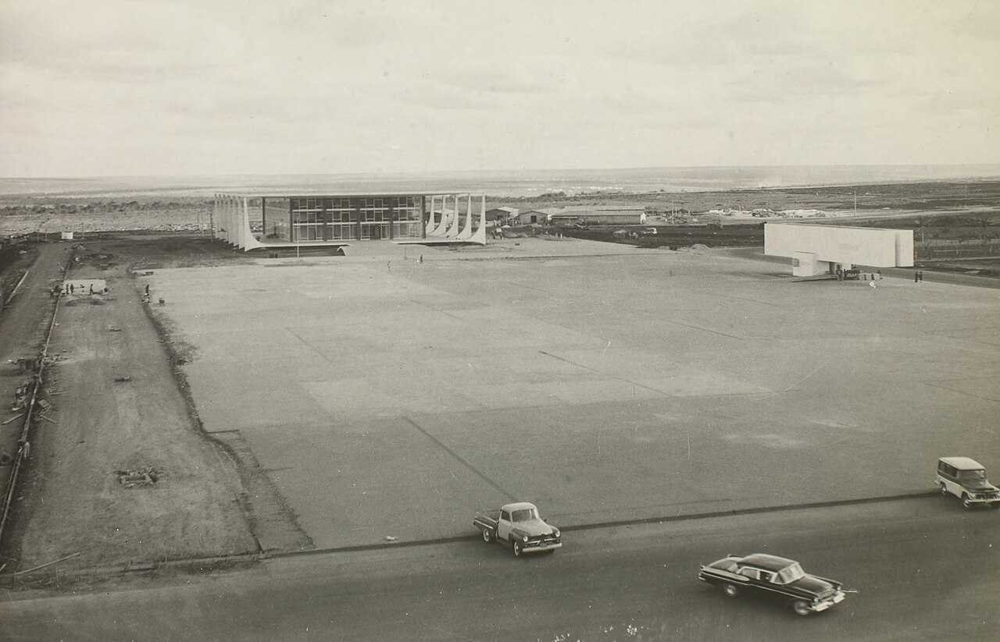
Conclusão: que relação entre governo e povo o projeto imaginou, e que mentalidade o produziu
1. A relação imaginada: o povo como destinatário, e não como interlocutor
As duas escalas. O Plano Piloto separa, com clareza geométrica, duas escalas que Costa nomearia depois: a monumental, do eixo dos poderes e da Esplanada, e a residencial, das asas e superquadras (Brasília revisitada, 1987).
Na escala monumental, o povo é espectador. A Esplanada é um "extenso gramado destinado a pedestres, a paradas e a desfiles" (Relatório, item 9 [conferida]). Previu-se o desfile, que é a multidão ordenada pelo Estado, e não o comício, a passeata ou a assembleia, que são a multidão que se ordena a si mesma. A Praça dos Três Poderes é um "terrapleno triangular, com arrimo de pedra à vista, sobrelevado na campina circunvizinha", ao qual "se tem acesso pela própria rampa da auto-estrada" (idem). É um palco elevado, cujo acesso foi pensado para o automóvel.
Na escala residencial, a cidade abole a rua e a esquina. Costa propôs aplicar "princípios francos da técnica rodoviária — inclusive a eliminação dos cruzamentos — à técnica urbanística" (item 3) e substituiu a rua-corredor pela via expressa e pela quadra ajardinada. Para DaMatta, a rua é o espaço da lei impessoal e do encontro entre desconhecidos iguais, e a casa é o espaço da hierarquia pessoal (A casa & a rua [paráfrase]). Sem rua, sobra a casa: o gabinete, o jantar, o lobby, o corredor do Congresso. É o habitat do funcionário "patrimonial" de Sérgio Buarque, para quem "a própria gestão política apresenta-se como assunto de seu interesse particular" (Raízes do Brasil, 26ª ed., 1995, p. 146 [conferida em cópia digitalizada]).
As superquadras prometeram a "coexistência social" de classes "num certo grau" (item 17). Na prática, nasceram hierarquizadas pelo próprio texto ("as gradações próprias do regime vigente") e se tornaram o bairro da classe média funcionária. Os pobres não foram incluídos nem como vizinhos de quadra. Costa mandava "impedir a enquistação de favelas" e prover "acomodações decentes e econômicas para a totalidade da população". O que veio depois foi isto:
- Taguatinga, primeira satélite, criada em 1958 para receber removidos, dois anos antes da inauguração;
- a Vila Amaury, engolida pelo lago;
- a Ceilândia, de 1971, cujo nome vem da sigla da Campanha de Erradicação de Invasões (TJDFT; G1;
eixo-A, 2.14–2.15).
COMPROVADO. A periferia é mais velha que a capital.
Não há lugar para a multidão. Há espaço vazio em abundância, mas não lugar no sentido político: uma praça cercada de vida urbana, onde o povo encontra o poder no mesmo nível. O povo chega à Esplanada de ônibus, vindo de dezenas de quilômetros, e encontra um gramado sem sombra diante de palácios de vidro. O embaixador Wladimir Murtinho formulou a teoria: "Minha teoria é que ninguém quebra vidro. Pessoa tem medo de vidro, muito mais do que barreira" (depoimento ao APDF, 1990, citado por Brandão, 2023 fonte secundária). Ela funcionou até 8 de janeiro de 2023, quando foi refutada a pedradas.
Em suma, o projeto previa um governo que fala ao povo de cima e de longe, por meio da forma e do espetáculo. E um povo que é servido, e não ouvido: alojado quando possível, removido quando necessário, chamado à Esplanada para desfiles e inaugurações. É o retrato em concreto armado da fórmula de Faoro, "do palácio à sociedade, em dois planos separados", com "o planejamento, tão decorativo, em certos casos, como a ordenança meticulosa" (Os donos do poder, "Capítulo final" [conferida em cópia digitalizada]).
2. A mentalidade dos criadores: quatro traços
a) Elitismo técnico desenvolvimentista. O Estado, guiado por técnicos esclarecidos (planejadores, engenheiros, arquitetos), decide pela sociedade e a transforma. A legitimidade vem do resultado e da velocidade ("cinquenta anos em cinco"), não da deliberação. Os mecanismos de controle foram tratados como obstáculos: a CPI foi adiada e a lei da Novacap, sancionada "sem qualquer publicidade".
b) Utopismo modernista. É a crença, herdada de Le Corbusier e da Carta de Atenas, de que a forma da cidade produz a forma da sociedade: mude-se a planta e mudam as classes. Holston mostrou o resultado. A utopia, habitada, reproduziu e acentuou a estrutura que queria abolir [paráfrase]. Umberto Eco resumiu: "Brasília transformou-se, de cidade socialista que deveria ser, na própria imagem da diferença social" (A estrutura ausente, Perspectiva, p. 246, citado por Ambrogi, Língua e Literatura/USP fonte secundária).
c) Paternalismo autoritário, à esquerda e à direita. É o ponto mais incômodo, e o mais importante para o filme. Brasília foi feita por uma aliança aparentemente improvável:
- um presidente católico do PSD (JK);
- um poeta católico anticomunista que escrevia a voz dele (Schmidt);
- um arquiteto comunista, admirador declarado de Fidel, que via na URSS um "acidente de percurso" e citava sem objeção um soviético que aprovava "tudo" o que Stalin fez (Niemeyer);
- um engenheiro-poeta talvez simpatizante do PCB (Cardozo, EM APURAÇÃO);
- um antropólogo de esquerda que fundou a universidade (Darcy);
- uma burocracia técnica e militar vinda das comissões de localização (Ernesto Silva, marechal José Pessoa);
- um bandeirante da Marcha para o Oeste estadonovista (Sayão).
O que unia esses homens não era um programa partidário. Era uma visão comum do povo como menor de idade, a ser educado, alojado, integrado e embelezado, e não consultado. Para o desenvolvimentista, o povo é beneficiário. Para o comunista, é massa a ser conduzida pela vanguarda. Para o católico conservador, é rebanho. Para o técnico militar, é população a ser ordenada. Em nenhum desses vocabulários o povo aparece como cidadão que delibera na rua. Faoro descreveu essa relação: "o povo quer a proteção do Estado, parasitando-o, enquanto o Estado mantém a menoridade popular, sobre ela imperando" (Os donos do poder [conferida em cópia digitalizada]). Brasília deu endereço a essa menoridade.
d) "O Estado constrói a nação". É a premissa última, comum ao ISEB, ao PCB, à doutrina militar de segurança e ao catolicismo social da época: a nação ainda não existe e precisa ser feita de cima. Brasília não é o lugar onde a sociedade brasileira se reúne para governar a si mesma. É o lugar de onde o Estado brasileiro olha a sociedade, de onde JK, em 1956, "lança os olhos [...] sobre o amanhã do meu País". Daí o "ato deliberado de posse" de Costa e o "padrão de posse" de JK, segundo Paulo Mendes Campos. Toma-se posse do território, e o povo vem depois.
3. A ressalva honesta
Este ensaio não sustenta que Brasília seja um "fracasso" nem que o brasileiro "é assim". Gorelik e Jatobá alertam contra o clichê da "Brasília-fracasso". Jessé Souza alerta contra o culturalismo que transforma desigualdade de classe em traço nacional (eixo-B, itens 14, 33 e 35). A cidade tem qualidades reais: luz, verde, superquadras habitáveis, patrimônio mundial.
A crítica mais forte não é que a cidade seja feia ou fria. É que ela é coerente com uma ideia de poder, e que essa ideia sobreviveu a todos os regimes desde 1960, porque nenhum deles teve motivo para querer outra.
Clarice escreveu que os dois arquitetos "não pensaram em construir beleza, seria fácil; eles ergueram o espanto deles, e deixaram o espanto inexplicado" ("Nos primeiros começos de Brasília" conferida na fonte). Este ensaio arrisca uma explicação: é o espanto de um Estado que se olha no espelho e gosta do que vê, numa cidade aonde, como previu Drummond, "não vai ninguém de dois pés".
Versailles tupiniquim, apenas feia
Advertência deste capítulo. Aqui se reúne o que o dossiê do eixo C apurou sobre sexo, festa, ostentação, privilégio e jeitinho na capital, de 1956 a 2026. Cada item acusatório traz o rótulo de classificação, a data e o link. COMPROVADO quer dizer condenação, documento oficial, admissão do próprio envolvido ou reportagem consolidada; EM APURAÇÃO, inquérito, denúncia, mensagem publicada sem conclusão oficial, ação anulada ou extinta; TESTEMUNHO, fala atribuída a pessoa nomeada; SEGREDO DE POLICHINELO, prática que todo mundo admite; BOATO, o que circula sem prova. Absolvições, anulações e negativas aparecem na mesma frase da acusação. Vítimas, profissionais do sexo, refugiadas, intermediários, promoters e pessoas privadas não são nomeados, mesmo quando as fontes os nomeiam. Frequentar festa não é crime, e prostituição de adultos não é crime no Brasil; rufianismo, casa de prostituição, exploração sexual e dinheiro público na conta são. A pergunta deste capítulo é sempre a mesma: quem pagou, e em troca de quê. A parte financeira e institucional do caso Vorcaro pertence ao eixo B (estudo de caso "Vorcaro, o Master e o BRB"); aqui ele só entra pela porta dos fundos, a da festa.
Versailles tinha ao menos a desculpa do mármore. A corte de Brasília construiu o palácio em concreto armado e o resto em ato da Mesa, cota parlamentar e suíte presidencial de hotel. O que segue é uma crônica cronológica: começa no canteiro de obras, quando a cidade ainda era poeira, e termina, sessenta e seis anos depois, numa reportagem de 13 de outubro de 2026 que fez o país reaprender a palavra "refugiada".
1. O canteiro e a Cidade Livre (1956–1961): a zona antes da cidade
A Cidade Livre, hoje Núcleo Bandeirante, nasceu no fim de 1956 como acampamento comercial provisório, isento de impostos ("daí a origem do nome Cidade Livre", segundo a CLDF) e prometido à demolição depois da inauguração. Ficou: a Lei 4.020, de 20/12/1961, sancionada por João Goulart, declarou-a cidade-satélite que "não pode ser deslocada" (https://www2.camara.leg.br/legin/fed/lei/1960-1969/lei-4020-20-dezembro-1961-353718-publicacaooriginal-1-pl.html). COMPROVADO. JK, em Por que construí Brasília (p. 87), chamou-a de "uma espécie de Cingapura tupiniquim". COMPROVADO (citação de livro).
No fim da Rua Principal, um memorial descreve "cerca de 800 metros quadrados de boates, casas de shows e quartos de aluguel rotativo": a fonte publica o número, mas não diz de onde ele vem. EM APURAÇÃO. A Placa da Mercedes, outdoor na entrada vinda de Goiânia, virou ponto de prostituição antes de virar setor oficial; como resume uma das fontes, a crônica de Conceição Freitas, "Placa da Mercedes era o lugar mais famoso de Brasília. Todos sabiam onde ficava e o que ele oferecia" (Metrópoles, 14/05/2019, https://www.metropoles.com/colunas/conceicao-freitas/desde-a-origem-o-setor-placa-da-mercedes-burlou-a-rigidez-de-brasilia). COMPROVADO (quatro fontes).
Os documentos policiais da época, citados em pesquisa acadêmica, mostram o Estado ameaçando "deportar de Brasília" duas mulheres flagradas perto do canteiro da construtora do Alvorada (ocorrência nº 850, 21/05/1958), prendendo dois barbeiros por lenocínio (10/01/1960) e fechando, "uma semana antes do Natal de 1960", o prostíbulo de luxo que atendia visitantes ilustres da obra (Correio Braziliense, 18/12/1960, citado). COMPROVADO (documentos citados; os originais do jornal ainda serão conferidos). Na leitura da historiadora Joelma Rodrigues da Silva (UnB, 1995), a Novacap e as empreiteiras teriam garantido "uma válvula de escape para as pulsões emocionais e libidinais dos homens" para manter o ritmo das obras: tese acadêmica, interpretação da autora. Que caminhões levavam operários à zona de Luziânia aos domingos é memória oral de dois depoimentos ao Arquivo Público do DF: BOATO, com a ressalva de que os relatos são independentes. Outro depoimento de pioneiro resume a geografia moral do lugar: "do lado de cima do esgoto era a zona e do lado de baixo eram as famílias" (TESTEMUNHO, memória oral, 2004).
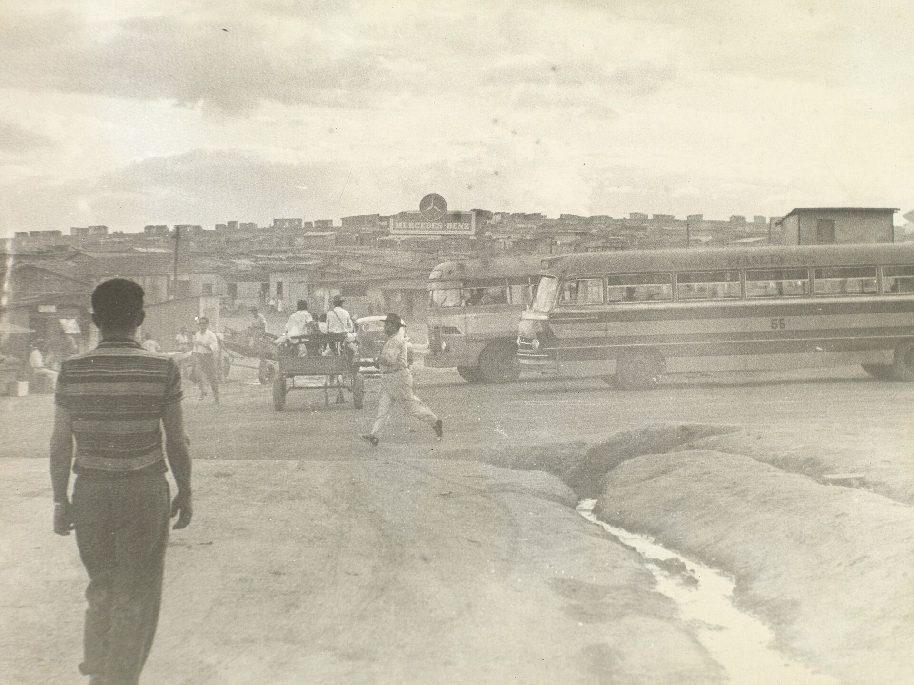
2. A capital processa o presidente deposto (1965–1973)
Em 02/02/1965, já sob a ditadura, a Novacap processou João Goulart por "enriquecimento ilícito": benfeitorias em imóveis dele no valor de Cr$ 7.306,99. A defesa, de José Paulo Sepúlveda Pertence, falou em "mesquinharia e desejo de mostrar fidelidade aos poderosos". Em 1973 o juiz extinguiu a ação sem julgar o mérito. EM APURAÇÃO (encerrado sem mérito; nunca comprovado). Fonte: TJDFT, Memória, 29/04/2019, https://memoria.tjdft.jus.br/index.php/novacap-x-jo-ao-goulart. É o prólogo irônico: até as cercas do presidente eram assunto da empresa que construía a capital.
3. 1976: nasce a palavra "mordomia"
A série do Estadão liderada por Ricardo Kotscho, "Assim vivem os nossos superfuncionários", expôs mansões, carros e aviões oficiais, contas de supermercado e "até contas de bar e de butique" da elite do governo Geisel, e ganhou o Prêmio Esso. Ninguém foi punido; a palavra ficou. COMPROVADO. Fonte: Estadão Acervo, 04/01/2025, https://www.estadao.com.br/150-anos/150-momentos/regalias-dos-superfuncionarios-publicos-em-1976-penduricalhos-de-bilhoes-em-2024/.
4. Os anos do "é dando que se recebe" (1987–1997)
A máxima do Centrão na Constituinte, atribuída ao deputado Roberto Cardoso Alves, virou o lema de uma época: segundo o Acervo Estadão (07/06/2019), o mandato de cinco anos de Sarney foi trocado por cargos, verbas e concessões de rádio e TV (https://www.estadao.com.br/acervo/centrao-e-sarney-instituiram-e-dando-que-se-recebe/). SEGREDO DE POLICHINELO; TESTEMUNHO (frase atribuída, não conferida em gravação).
- Collor e a Casa da Dinda (1990–1992). Os jardins, com cascata e lago artificial, foram pagos por PC Farias com dinheiro de contas fantasmas, a cerca de US$ 2,5 milhões (O Tempo/Folhapress, 14/07/2015, https://www.otempo.com.br/politica/casa-da-dinda-foi-simbolo-do-noticiario-sobre-corrupcao-1.1069738). COMPROVADO. Collor foi absolvido criminalmente pelo STF em 1994; trinta anos depois, condenado por outro caso (BR Distribuidora, 2023) e preso em 25/04/2025 (https://noticias.stf.jus.br/postsnoticias/stf-condena-collor-a-oito-anos-e-dez-meses-por-crimes-contra-br-distribuidora/). COMPROVADO. Rosane Collor, anos depois, minimizou: "Havia uma cascata na piscina? Havia uma biquinha". A primeira-dama, que presidiu a LBA, foi condenada em primeira instância em 28/04/2000 por corrupção passiva e peculato (Folha, 04/05/2000, https://www1.folha.uol.com.br/fsp/brasil/fc0405200018.htm). COMPROVADO (condenação de 2000); EM APURAÇÃO (o desfecho no TRF-1 não foi confirmado).
- Os Anões do Orçamento (1993–1994). O relator João Alves explicou a fortuna com prêmios de loteria: "Deus me ajudou". Seis deputados foram cassados (Fundação FHC, https://fundacaofhc.org.br/linhasdotempo/cpi-do-orcamento/). COMPROVADO.
- A compra de votos da reeleição (1997). Gravações publicadas pela Folha mostram dois deputados relatando ter recebido R$ 200 mil para votar a emenda; os dois renunciaram em 21/05/1997, por "motivos de foro íntimo" (Folha, 13/05/1997, https://www1.folha.uol.com.br/fsp/1997/5/13/brasil/13.html). COMPROVADO; sem condenação criminal conhecida.
- A semana de três dias. No Senado, a regra de sessões deliberativas de terça a quinta vigora "desde 1995"; em 2012 a Câmara oficializou segundas e sextas só para debates (Agência Câmara, 17/10/2012, https://www.camara.leg.br/noticias/386659-camara-confirma-sessoes-de-segundas-e-sextas-apenas-para-debates). COMPROVADO. É o calendário que, segundo relatos reunidos por Sílvio Barsetti, também organiza a noite (item 7).
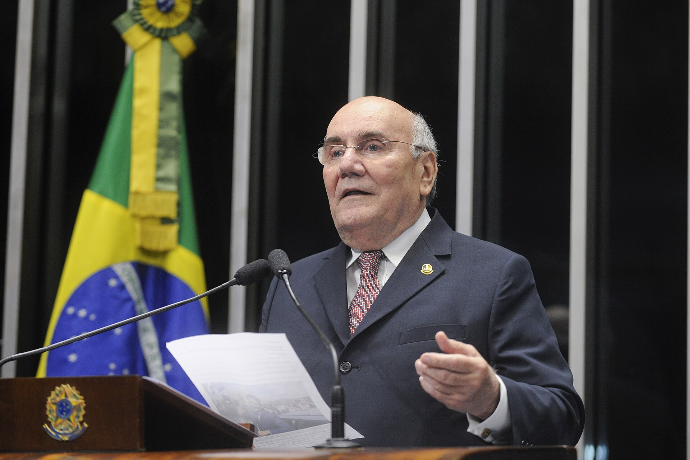
5. 2003–2005: a lista do surubão
"A lista do surubão assusta mais que a do mensalão."
A frase é do senador Romeu Tuma (1931–2010), corregedor do Senado, em agosto de 2005 (Gazeta do Povo, 15/08/2005). Em pleno mensalão, a Folha teve acesso a uma lista de 50 telefones ligados a Jeany Mary Corner, apontada como agenciadora de garotas de programa para festas de políticos e lobistas; nela aparecia o celular do então senador Valmir Amaral (PP-DF), que confirmou conhecê-la e disse ser apenas "amigo". Jeany negou agenciar prostituição, apresentou-se como "organizadora de eventos" e entregou sua agenda à PF. COMPROVADO (a lista, a entrega à PF, a repercussão) · BOATO (quais políticos usaram os serviços: nenhum nome confirmado; Amaral nega). Fontes: Folha, 18/08/2005, https://www1.folha.uol.com.br/fsp/brasil/fc1808200532.htm ; Gazeta do Povo, https://www.gazetadopovo.com.br/vida-publica/prostituicao-faz-a-festa-de-politicos-9nkmusbvyl9ifypenro40towe/ ; negativa de Jeany, https://www.gazetadopovo.com.br/vida-publica/jeany-nega-envolvimento-com-prostituicao-e-diz-que-e-organizadora-de-eventos-9npplpe7fxgbcg7r16kptxmxa/ . A lista nunca veio a público: é o grande MacGuffin de Brasília.
Na mesma reportagem, a Folha descreveu o senador Amaral como "conhecido pelas festas de arromba que promove em sua casa no Lago Sul" e contou que, numa delas (fev/2005), "algumas mulheres de parlamentares não gostaram de dividir o ambiente com garotas de programa". BOATO (sem fonte identificada; nunca investigado; Amaral não respondeu sobre a festa).
A festa na suíte presidencial (2003). A PF investigou duas festas, em 09/09 e 05/11/2003, na suíte presidencial do Hotel Gran Bittar, com "recepcionistas" fornecidas por Jeany a R$ 150 cada, segundo o advogado dela. Um ex-sócio de Marcos Valério declarou à PF ter pago R$ 27 mil a mando de Valério. Valério negou ter "colaborado ou financiado festas para políticos com participação de garotas de programa". COMPROVADO (a declaração à PF) · BOATO (presença de autoridades). Fonte: Folha, 23/09/2005, https://www1.folha.uol.com.br/fsp/brasil/fc2309200517.htm .
O mensalão em si terminou no STF em 17/12/2012, com 25 condenados entre 38 réus (https://noticias.stf.jus.br/postsnoticias/stf-conclui-julgamento-da-ap-470-apos-53-sessoes-plenarias/). COMPROVADO. E o presidente, em Paris, em 15/07/2005, ofereceu a frase que a cidade nunca mais esqueceu: "O que o PT fez, do ponto de vista eleitoral, é o que é feito no Brasil sistematicamente" (transcrição oficial da Biblioteca da Presidência, https://www.gov.br/planalto/pt-br/conheca-a-presidencia/biblioteca-da-pr/ex-presidentes/luiz-inacio-lula-da-silva-2/entrevistas/2005/15-07-2005-entrevista-exclusiva-concedida-pelo-presidente-da-republica-luiz-inacio-lula-da-silva-a-jornalista-melissa-monteiro-em-paris.pdf). TESTEMUNHO (verificado) · SEGREDO DE POLICHINELO.
6. 2006: a casa do Lago Sul e o caseiro que viu demais
O caseiro Francenildo dos Santos Costa contou que, nas quintas em que o então ministro da Fazenda, Antonio Palocci, ia à casa alugada por ex-assessores e lobistas no Lago Sul, "sempre havia uma mulher, normalmente trazida uma hora antes", e que, ao recolher o lixo das festas do grupo, encontrava cápsulas de Viagra (Folha, 16/03/2006, https://www1.folha.uol.com.br/fsp/brasil/fc1603200614.htm). Palocci sempre negou ter estado na casa (https://www.gazetadopovo.com.br/vida-publica/palocci-reafirma-que-nunca-esteve-na-republica-de-ribeirao-9xmf9ztk8rtmv0bwr0vyu0ifi/). EM APURAÇÃO (testemunho nunca julgado). O que se provou foi o castigo do criado: o sigilo bancário do caseiro foi violado na Caixa, o ex-presidente do banco disse à PF que entregou o extrato a Palocci, e o ministro caiu em 27/03/2006, indiciado pela PF (Folha Online, https://www1.folha.uol.com.br/folha/brasil/ult96u468524.shtml). COMPROVADO. Segundo fonte secundária, a denúncia foi rejeitada pelo STF em 2009 (EM APURAÇÃO; confirmar em fonte primária). É a cena mais versalhesa da lista.
7. 2007–2010: a favorita, o cartão e a carruagem
- Renan Calheiros e Mônica Veloso (2007–2018). A jornalista, que tem uma filha com o então presidente do Senado, disse que a pensão de R$ 16,5 mil era entregue em dinheiro vivo por um lobista da Mendes Júnior. Renan apresentou recibos de venda de gado; a PGR o denunciou em 2013 por, entre outras coisas, "notas frias". Absolvido duas vezes pelo plenário do Senado em 2007 (a primeira por 40 a 35, com 6 abstenções), renunciou à Presidência da Casa em 04/12/2007 e foi absolvido por unanimidade pela 2ª Turma do STF em 18/09/2018, por insuficiência de provas (Agência Brasil, https://agenciabrasil.ebc.com.br/justica/noticia/2018-09/supremo-absolve-renan-calheiros-do-crime-de-peculato). EM APURAÇÃO (absolvição definitiva; a tese do lobista pagador nunca foi provada judicialmente). Renan sempre disse que os pagamentos eram dele. A filha é intocável neste texto.
- A tapioca no cartão (2008). Uma ministra caiu por gastos irregulares no cartão corporativo, inclusive R$ 461,16 em free shop; outro ministro devolveu cerca de R$ 30,9 mil, entre eles a tapioca de R$ 8,30. A CPMI terminou sem indiciamentos (https://www.camara.leg.br/noticias/118950-cpmi-dos-cartoes-corporativos-aprova-relatorio-final/). COMPROVADO.
- Os atos secretos (2009). O Senado mantinha um diário oficial paralelo: Sarney mandou anular os atos em 13/07/2009. COMPROVADO.
- A farra das passagens (2009). 261 deputados e 1.881 voos internacionais pagos com cota entre jan/2007 e out/2008 (Congresso em Foco). Entre os casos, o então deputado Fábio Faria reconheceu ter usado a cota para viagens da então namorada, da mãe e de artistas; devolveu R$ 21.343,60 e depois mais R$ 2.405; o caso foi arquivado em junho de 2009. COMPROVADO (reconhecimento e devolução).
- O motel na cota (2010). O deputado Pedro Novais, já indicado ministro do Turismo, pediu à Câmara reembolso de R$ 2.156 de uma nota de motel em São Luís; depois da reportagem, devolveu o dinheiro e culpou a assessoria. COMPROVADO.
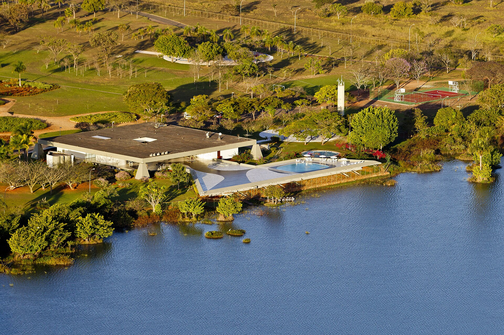
8. 2012–2017: a rede de luxo, a assessora e a primeira-dama chantageada
- Rosemary Noronha (2012–2021). Chefe do gabinete regional da Presidência em São Paulo, alvo da Operação Porto Seguro. A Folha atribuiu sua influência a uma "longa relação de intimidade" com Lula, com fontes anônimas; ela falou em relação de "amizade, fidelidade e totalmente profissional", e Lula não comentou "assuntos particulares". Em 18/10/2021 a Justiça anulou as provas e encerrou as ações. COMPROVADO (cargos, operação) · EM APURAÇÃO (ações encerradas por nulidade, sem mérito) · BOATO (a relação íntima).
- Operação Red Light (2013). Em 02/12/2013 a Polícia Civil do DF desarticulou três núcleos de prostituição de luxo, com base numa mansão do Park Way, e prendeu nove pessoas, entre elas Jeany Mary Corner. Programas de até R$ 10 mil, segundo a polícia, para "políticos e empresários". COMPROVADO (operação e prisões) · BOATO (clientes políticos: nunca houve nome). Desfecho judicial não localizado.
- A biografia de Dirceu (2013). A biografia não autorizada de Otávio Cabral conta que, em 2004, um colega de ministério não nomeado teria contratado por R$ 30 mil, por uma noite, uma ex-participante de reality show como "presente" ao então chefe da Casa Civil, na suíte presidencial de um hotel de Brasília. BOATO (livro de fontes anônimas, com erros factuais reconhecidos; Dirceu não comentou); a existência do trecho no livro é COMPROVADA. A mulher não é identificada aqui.
- Marcela Temer e o hacker (2016–2017). A então primeira-dama foi vítima de extorsão: o criminoso que clonou seu celular foi condenado em outubro de 2016 a 5 anos, 10 meses e 25 dias (R7, 26/10/2016, https://noticias.r7.com/brasil/justica-condena-hacker-que-clonou-celular-de-marcela-temer-26102016/). A investigação foi conduzida pela Secretaria de Segurança de São Paulo, então chefiada por Alexandre de Moraes. Em fevereiro de 2017, a pedido do Planalto, um juiz de Brasília proibiu Folha e O Globo de publicar dados do celular; o TJDFT derrubou a censura dias depois. COMPROVADO. A tese de que a indicação de Moraes ao STF teria sido um "prêmio" pelo caso aparece só em veículos de opinião e bastidor sem fonte: BOATO. O conteúdo íntimo nunca veio a público e não é descrito aqui.
- FHC, Mirian Dutra e a Brasif (2016–2018). A jornalista disse à Folha que a concessionária dos free shops lhe pagou por um contrato "fictício". FHC negou ter usado empresa; a Brasif negou; Mirian voltou atrás em depoimento à PF; a investigação foi encerrada por prescrição em 16/03/2018. COMPROVADO (contrato, inquérito, prescrição) · BOATO (favor ao presidente).
- O Jaburu à noite (2017). Joesley Batista gravou Michel Temer no Palácio do Jaburu ("Tem que manter isso, viu?"); a PF concluiu que não houve edição. As acusações contra Temer foram encerradas ou terminaram em absolvição. COMPROVADO (gravação) · EM APURAÇÃO (acusações encerradas). Nada de sexo aqui: só a audiência noturna pela porta dos fundos do palácio.
- Mordomia de toga. Em 2019 o STF fechou a compra de um menu com lagosta e vinho por R$ 481 mil; e o auxílio-moradia estendido a toda a magistratura em 2014 só caiu em 26/11/2018, no mesmo dia do reajuste do Supremo. COMPROVADO.
9. 2019–2024: a Marcha dos Prefeitos e o "Vai, prefeito!"
Uma vez por ano, milhares de prefeitos, com diárias municipais, ocupam a capital. Em 04/04/2019, o prefeito de Tibagi (PR) foi filmado em ato sexual no elevador de um hotel da Asa Sul durante a Marcha; pediu desculpas, disse que aconteceu em "momento de folga", e o MP-PR pediu explicações sobre a viagem paga pelo município. COMPROVADO. A mulher não é identificada. Em maio de 2024, repórteres do Metrópoles foram a uma boate a cerca de 800 m da Esplanada e encontraram cerca de 50 garotas de programa, carros oficiais de placa preta na porta e gritos de "Vai, prefeito!", filmados. COMPROVADO (cenas presenciadas e filmadas; nenhum prefeito identificado). Um dia depois, a coluna de Guilherme Amado mostrou um promoter da casa distribuindo cartões na sede da própria Marcha.
Entre um e outro, o orçamento virou bufê: o "orçamento secreto" revelado pelo Estadão em 08/05/2021, com tratores até 259% acima do preço de referência, foi declarado inconstitucional pelo STF em 19/12/2022. COMPROVADO (existência e inconstitucionalidade) · EM APURAÇÃO (desvios específicos). E as casas de lobby do Lago Sul continuaram servindo de salão: em junho de 2022, o aniversário de um lobista citado na CPI da Covid reuniu deputados, senadores, um governador e um ex-diretor-geral da PF, com paella e porco no rolete (Metrópoles, https://www.metropoles.com/colunas/rodrigo-rangel/lobista-investigado-por-cpi-faz-festa-estrelada-em-brasilia). COMPROVADO (festa e presenças; nenhuma ilegalidade atribuída aos convidados).
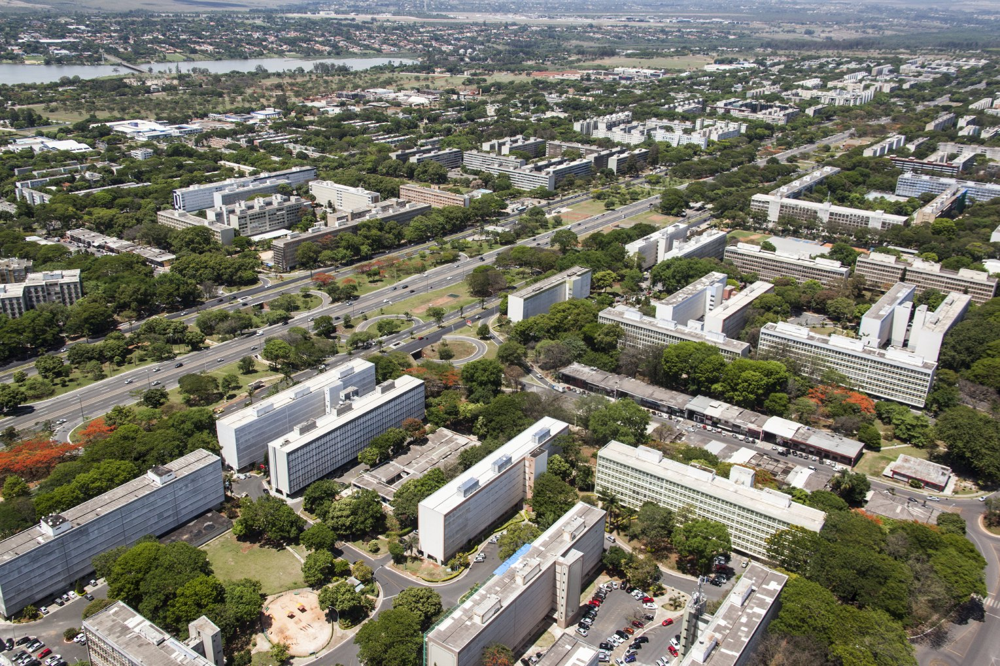
10. 2025–2026: assédio, programa e a madrugada brasiliense
- Marco Buzzi (STJ). Em 06/08/2026 o STJ reconheceu por unanimidade infrações disciplinares do ministro, acusado de importunação e assédio sexual, e aplicou por maioria a perda do cargo, que depende de ação da AGU no STF (ajuizada em 21/09/2026). Buzzi nega e se diz vítima de "conluio e fofoca de gabinete" (g1, https://g1.globo.com/politica/noticia/2026/08/06/stj-decide-punir-marco-buzzi-com-perda-de-cargo-apos-denuncias-de-assedio.ghtml). COMPROVADO (decisão disciplinar) · EM APURAÇÃO (esfera penal e execução da perda).
- Silvio Almeida. Ex-ministro dos Direitos Humanos, indiciado pela PF e denunciado pela PGR ao STF em 2026 por suposta importunação sexual de uma ministra de Estado. Nega e fala em "ilações". EM APURAÇÃO (denúncia não recebida).
- Daniel Donizet (MDB-DF). Deputado distrital, réu no TJDFT desde 28/04/2026 por assédio sexual a ex-servidoras do gabinete; o processo ético na Câmara Legislativa ficou parado quase um ano. Nega: "as acusações citadas não procedem". Candidato a federal, ficou suplente com 12.445 votos (TSE). EM APURAÇÃO (réu, sem julgamento) · COMPROVADO (paralisação e resultado oficial).
- "R$ 3 mil até de manhã". Em 25/03/2026, num restaurante do Lago Sul, o deputado Luciano Alves (então PSD-PR, suplente em exercício) foi filmado discutindo com uma garota de programa; admitiu que negociava e disse ter desistido pelo preço: "Eu não posso pagar isso, não tenho como pagar esses R$ 3 mil" (g1, 30/03/2026). COMPROVADO (admitido) · EM APURAÇÃO (injúria). Em 2026 teve 704 votos (TSE).
- Um diplomata e a Ordem de Rio Branco. O governo anulou a comenda dada a um diplomata punido por beijo não consentido numa funcionária no Cairo (O Globo, 17/09/2026). COMPROVADO.
- Marcha de 2026. Um colunista do Metrópoles descreveu duas madrugadas de "prostituição premium" e escreveu: "É na madrugada brasiliense que o verdadeiro 'orçamento secreto' ganha vida". BOATO (relato de campo sem nomes nem confirmação independente).
- Asa Norte (2026). Entre 23/07 e 05/10/2026, a PCDF fechou seis casas de prostituição na Asa Norte, muitas com fachada de massoterapia, e resgatou duas adolescentes; uma "clínica" no subsolo da 410 Norte tinha, segundo a reportagem, "foco em frequentadores do centro da capital e da Esplanada dos Ministérios". O programa custava R$ 250; a maquininha lançava R$ 170 como "terapia" e R$ 80 como "aditivo especial". O delegado-chefe: "A repressão nunca aconteceu. Onde já se viu um ambiente que todo mundo sabe onde é?" (Metrópoles, 10/10/2026). COMPROVADO (operações) · EM APURAÇÃO (inquéritos). Nenhuma autoridade aparece como cliente. O pano de fundo urbano está numa dissertação da UnB de 2016, que chamou a W3 Norte de "trottoir-drive-thru": "Brasília, a cidade lógica, motorizada e planejada, curvou-se à funcionalidade e à apropriação de seus habitantes" (Cyntia Cristina de Carvalho e Silva, https://repositorio.unb.br/handle/10482/22494).
- Alfredo Gaspar. Em 06/10/2026, Gilmar Mendes arquivou, a pedido da PGR, o pedido de investigação contra o deputado por suposto estupro de vulnerável: não houve inquérito nem acusação formal, por falta de "base indiciária suficiente" (STF, https://noticias.stf.jus.br/postsnoticias/stf-acolhe-parecer-da-pgr-e-arquiva-pedido-de-investigacao-contra-deputado-federal-alfredo-gaspar/). COMPROVADO (o arquivamento) · BOATO (a acusação, não confirmada e arquivada). Entra aqui como exemplo do uso eleitoral de acusação sexual em CPMI, não como suspeita.
- O folclore. O livro O outro lado do poder (Sílvio Barsetti, 2022) reúne relatos anônimos: banheira de champanhe, amantes mantidas em hotel por mais de R$ 40 mil por mês, festas concentradas de terça a quinta. BOATO (relatos anônimos, fonte única). A assessora-amante paga pelo gabinete continua sem nenhum caso documentado: BOATO.
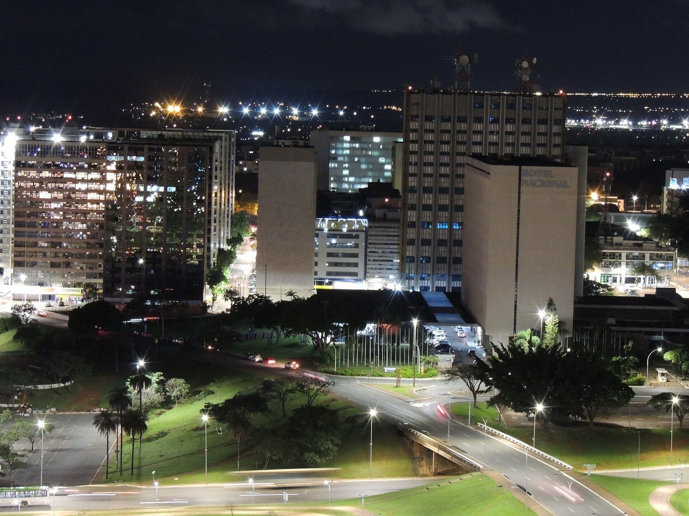
11. A corte de Vorcaro (2022–2026): festa como business
"Fazia parte do meu 'business'... Fiz festa com 300 desse tipo."
A mensagem, de 18/08/2025, extraída do celular do banqueiro Daniel Vorcaro e enviada à então noiva, foi publicada pela Folha em 08/04/2026 (via Jornal de Brasília, https://jornaldebrasilia.com.br/noticias/economia/vorcaro-bancou-modelos-com-jatinhos-e-hoteis-de-luxo-para-cortejar-elite-politica/). COMPROVADO (existência e teor, segundo material da investigação). Vorcaro, dono do Banco Master, está preso preventivamente desde 04/03/2026, sem denúncia formal e sem nenhuma acusação por crime sexual. O que diz respeito ao banco, ao BRB, ao FGC e ao Supremo está no eixo B. Sua defesa diz que os relatos sobre festas "se baseiam em fonte não fidedigna e em relatos distorcidos" e "repudia a divulgação seletiva e fragmentada de supostas conversas privadas".
- Trancoso. Uma propriedade de 40 mil m² alugada em nome de terceiro por ao menos R$ 760 mil por 14 dias, com mais de R$ 20 mil de danos numa festa de outubro de 2022, segundo processo judicial. COMPROVADO. Uma mensagem de 2022 da antiga dona, incluída em processo judicial, diz: "O Vorcaro encheu a minha casa de putas" (Folha, 02/03/2026). COMPROVADO (consta do processo). O "Cine Trancoso", com câmeras em todos os cômodos, é afirmação isolada de uma revista: BOATO. O TCU suspendeu o pedido para identificar autoridades nas festas e pediu provas ao STF.
- A corte nos autos. O relatório público da PF (IPJ-A 3298613/2026) registra hedonismo sem sexo: um almoço "ultra vip" em Campos do Jordão ("Tem que ser experiencia completa", "Deixar cavalos etc"), um "after" desmarcado ("Tinha pego a cantora pra ir aquecendo a turma"), S-Class para "os ministros mais sensiveis" no fórum de Londres e "plantação de charuto e barril de macalan". COMPROVADO (consta do documento oficial; não prova crime nem presença). Que "Alex" seja Alexandre de Moraes é leitura da PF: EM APURAÇÃO; Moraes contesta o relatório, e a PGR pediu sua nulidade. O relatório público não traz uma linha sobre mulheres contratadas.
- O Halloween de 2023. Na boate Madame Satã, em São Paulo, 120 mulheres e 20 homens, celulares retidos na porta e Vorcaro de Drácula. Antes da festa ele combinou a versão: "não é festa de putaria. Se alguém falar algo, era evento do banco para parceiros de Halloween" (piauí, 10/09/2026, https://piaui.uol.com.br/web/festa-suicas-vorcaro-fabio-faria/). EM APURAÇÃO. Mensagens citam o presidente do Senado, um ex-presidente do Senado e um ministro do STF como convidados; os três negam ter ido, e o Poder360 verificou que tinham agenda oficial em Brasília naquela noite. BOATO (presença de qualquer autoridade).
- As "99 flores" (Londres, abr/2024). No último dia de um fórum bancado pelo Master com autoridades dos três Poderes, 99 mulheres foram levadas a um after num restaurante fechado. Vorcaro: "Esse se contar ninguém vai acreditar" (Valor, 30/09/2026). EM APURAÇÃO · BOATO (presença de autoridade no after; o próprio Valor diz que as mensagens não deixam isso claro).
- Wine Bar, Pappa Bar e as "Quartas 100 lei". Segundo a piauí ("A corte de prazeres de Vorcaro", 01/10/2026, https://piaui.uol.com.br/web/festas-vorcaro-autoridades/), havia uma rotina semanal: terças em bares fechados no Itaim, com "três de cada quatro convidados" mulheres, e encontros às quartas e quintas num tríplex. EM APURAÇÃO (mensagens lidas pela revista, sem documento oficial). Um deputado citado nas mensagens ("Organizamos uma farra") respondeu primeiro que processaria a revista e depois: "Isso pode acabar com o meu casamento" (a frase não é confissão). Os políticos citados como frequentadores negam: BOATO.
- Saint-Tropez, agosto de 2025. Três meses antes da prisão: oito festas para os 40 anos da então noiva, um iate de 122 metros com boate e heliponto, Alicia Keys na proa e uma convidada perguntando "Gente, de onde vem esse dinheiro?" (piauí, 01/10/2026). EM APURAÇÃO.
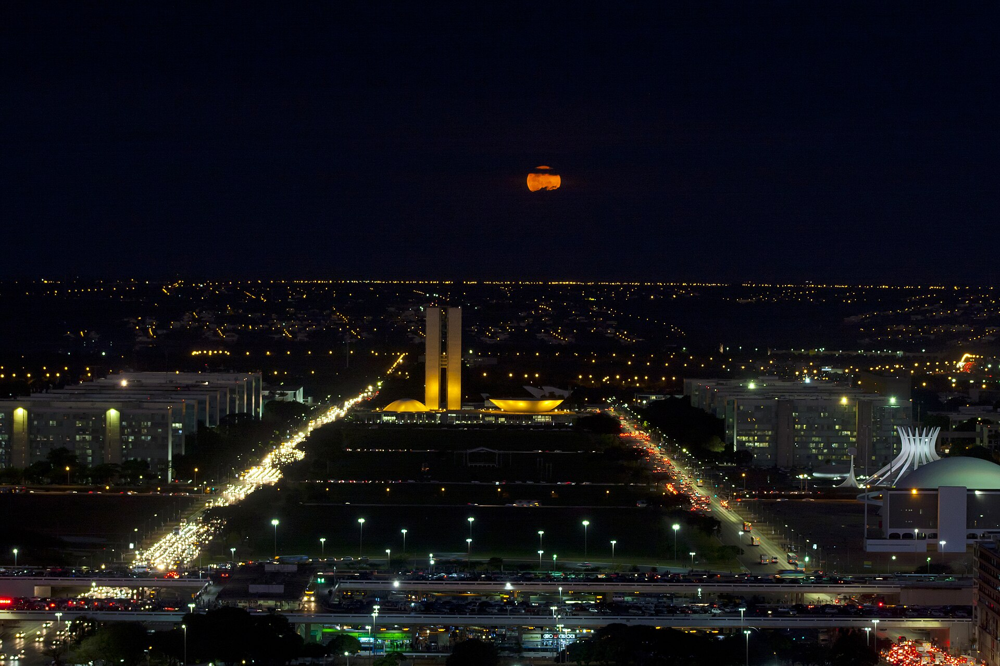
12. Final: a agência, a "creche" e as refugiadas (UOL, 13/10/2026)
Em 13/10/2026, a coluna de Natália Portinari no UOL, com Cézar Feitoza e Fabio Serapião, publicou com prints: "Vorcaro era sócio oculto de agência de prostituição e recrutou refugiadas" (https://noticias.uol.com.br/colunas/natalia-portinari/2026/10/13/vorcaro-era-socio-oculto-de-agencia-de-prostituicao-e-recrutou-refugiadas.htm). Segundo o UOL, Vorcaro "financiou uma rede de prostituição de alcance internacional a partir de 2023", com "investimentos de ao menos R$ 4,3 milhões", e aparece nas conversas "não apenas como consumidor dos serviços, mas também selecionando, dando ordens e investindo no negócio". Classificação de todo o bloco: EM APURAÇÃO (mensagens publicadas por um veículo e objeto de inquérito da PF aberto em maio; ninguém foi denunciado; nenhuma confirmação independente até 13/10/2026). A reportagem não traz resposta da defesa.
"Tem que sobrar alguma refugiada pra mim."
É a resposta de Vorcaro, em 07/11/2023, quando um intermediário avisa que há "3 refugiadas aqui? Ucranianas". Uma delas, de 19 anos, chegara entre as estrangeiras do Halloween. Em dezembro, o intermediário escreveu que ela "não tem pra onde ir. Estão bombardeando a cidade dela". Em 15/04/2024, Vorcaro: "Ucrania e Russia vamos mandar embora". EM APURAÇÃO. Tráfico de pessoas exige violência, coação ou fraude, e o UOL diz que as autoridades ainda apuram se ocorreu: este texto não chama de tráfico.
- A agência. Em dezembro de 2023, Vorcaro recebeu o contrato de compra de 50% de uma agência de modelos por R$ 1,5 milhão; seguiram-se três parcelas de R$ 500 mil, a última por Pix de uma empresa usada por ele, segundo comprovante no celular. "Assim estamos blindados!", escreveu o intermediário. O dono da agência diz ao UOL que "a tratativa não avançou". EM APURAÇÃO (contrato e comprovantes, segundo o UOL; o dono nega).
- A linguagem. Nas conversas, as mulheres são "escravas" e "kengas"; as mais jovens, "creche". Vorcaro, em 2024: "Nossa creche me consumiu semana toda kkk". O organizador das viagens, em fevereiro de 2024: "Eu tô traficando é nada! Isso é trabalho do doidinho seu lá". EM APURAÇÃO.
- A logística. Paris, Londres, Roma, Dubai; celulares recolhidos ("Iremos tirar o celular de todas meninas"); em Roma, cerca de 58 mulheres, parte despachada a Dubai. Nos eventos de Londres "estavam autoridades de Brasília", mas o UOL não diz que alguma autoridade esteve com as mulheres: BOATO quanto a isso.
- Quem pagava. O UOL localizou 21 faturas de uma empresa de eventos da Flórida, de abril de 2024 a março de 2025, que "somam cerca de US$ 70 milhões", emitidas para uma gestora de Belo Horizonte; segundo o UOL, Vorcaro as repassava ao financeiro do Master. EM APURAÇÃO. O que isso significa para o banco liquidado é assunto do eixo B.
E aqui a crônica termina onde deve terminar: na fronteira. O que se provou, de 1958 a 2026, é a promiscuidade entre dinheiro privado, cargo público e prazer: a ocorrência policial do canteiro, a declaração do ex-sócio de Valério à PF, a cota que pagou o motel, o extrato do caseiro, a mensagem do "business". O que segue boato são, quase sempre, os nomes de quem estava do outro lado da porta. Versailles tinha ao menos a franqueza de pendurar os retratos dos favoritos na parede. Brasília guarda os seus num celular apreendido, sob sigilo, à espera de um juiz.
Manchetes do inferninho (literais)
| Manchete | Veículo, data | Classificação | Link |
|---|---|---|---|
| Prostituição faz a festa de políticos | Gazeta do Povo, 15/08/2005 | COMPROVADO (repercussão) · BOATO (nomes) | https://www.gazetadopovo.com.br/vida-publica/prostituicao-faz-a-festa-de-politicos-9nkmusbvyl9ifypenro40towe/ |
| Festa e poder: 'O preço depende do bolso de quem solicita e da menina' | Folha (impresso), 18/08/2005 | COMPROVADO · BOATO (nomes) | https://www1.folha.uol.com.br/fsp/brasil/fc1808200532.htm |
| Sigilo quebrado: Jeany Corner entrega agenda de telefones em depoimento à PF | Folha (impresso), 23/09/2005 | COMPROVADO | https://www1.folha.uol.com.br/fsp/brasil/fc2309200517.htm |
| Fábio Faria reconhece uso de passagem da Câmara para viagem de [nome da então namorada omitido] (manchete adaptada: nome omitido conforme o dossiê) | Congresso em Foco, 14/04/2009 | COMPROVADO | https://www.congressoemfoco.com.br/noticia/78228/fabio-faria-reconhece-uso-de-passagem-da-camara-para-viagem-de-adriane-galisteu |
| Deputado diz que devolverá verba de motel | Folha (impresso), 23/12/2010 | COMPROVADO | https://www1.folha.uol.com.br/fsp/poder/po2312201004.htm |
| Relação com Lula explica influência de ex-assessora | Folha, 01/12/2012 | BOATO (relação íntima; negada) | https://feeds.folha.uol.com.br/fsp/poder/81121-relacao-com-lula-explica-influencia-de-ex-assessora.shtml |
| PGR acusa Renan de ter cometido três crimes | Congresso em Foco, 01/02/2013 | EM APURAÇÃO (absolvido em 2018) | https://www.congressoemfoco.com.br/noticia/63017/pgr-acusa-renan-de-ter-cometido-tres-crimes |
| Ex-BBB passou noite com ex-ministro José Dirceu, afirma jornal | Pioneiro/GZH, 17/06/2013 | BOATO | https://gauchazh.clicrbs.com.br/pioneiro/cultura-e-lazer/noticia/2013/06/ex-bbb-passou-noite-com-ex-ministro-jose-dirceu-afirma-jornal-4172380.html |
| Erros fazem biografia de Dirceu virar alvo de questionamentos | Folha, 20/08/2013 | COMPROVADO (contraponto) | https://www1.folha.uol.com.br/fsp/poder/124934-erros-fazem-biografia-de-dirceu-virar-alvo-de-questionamentos.shtml |
| Programa de luxo em Brasília custava até R$ 10 mil para políticos e empresários | Estado de Minas, 03/12/2013 | COMPROVADO · BOATO (clientes) | https://www.em.com.br/app/noticia/nacional/2013/12/03/interna_nacional,475717/programa-de-luxo-em-brasilia-custava-ate-r-10-mil-para-politicos-e-empresarios.shtml |
| FHC usou empresa para me mandar dinheiro no exterior, diz ex-namorada | Folha, 17/02/2016 | BOATO (favor; prescrito) | https://www1.folha.uol.com.br/poder/2016/02/1740563-fhc-usou-empresa-para-me-bancar-no-exterior-afirma-ex-namorada.shtml |
| Supremo absolve Renan Calheiros do crime de peculato | Agência Brasil, 18/09/2018 | Absolvição | https://agenciabrasil.ebc.com.br/justica/noticia/2018-09/supremo-absolve-renan-calheiros-do-crime-de-peculato |
| Vídeo de sexo oral no DF: MP pede explicações e prefeito, desculpas | Metrópoles, 01/05/2019 | COMPROVADO | https://www.metropoles.com/distrito-federal/video-de-sexo-oral-no-df-mp-pede-explicacoes-e-prefeito-desculpas |
| Justiça anula provas e encerra ação criminal contra Rosemary Noronha, ex-assessora de Lula | Folha, 19/10/2021 | Anulação | https://www1.folha.uol.com.br/poder/2021/10/justica-anula-provas-e-encerra-acao-criminal-contra-rosemary-noronha-ex-assessora-de-lula.shtml |
| Autor desnuda como sexo e política se cruzam em Brasília | Veja, 26/10/2022 | BOATO (relatos anônimos) | https://veja.abril.com.br/coluna/veja-gente/autor-desnuda-como-sexo-e-politica-se-cruzam-em-brasilia/ |
| Políticos caem na putaria em boate após evento no DF: 'Vai, prefeito' | Metrópoles, 26/05/2024 | COMPROVADO | https://www.metropoles.com/distrito-federal/na-mira/politicos-caem-na-putaria-em-boate-apos-evento-no-df-vai-prefeito |
| Nightclub pôs promoter para atrair prefeitos na sede da Marcha | Metrópoles, 27/05/2024 | COMPROVADO | https://www.metropoles.com/colunas/guilherme-amado/nightclub-pos-promoter-para-atrair-prefeitos-na-sede-da-marcha |
| Vorcaro bancou modelos com jatinhos e hotéis de luxo para cortejar elite política | Jornal de Brasília (Folha), 08/04/2026 | COMPROVADO (mensagem) · EM APURAÇÃO | https://jornaldebrasilia.com.br/noticias/economia/vorcaro-bancou-modelos-com-jatinhos-e-hoteis-de-luxo-para-cortejar-elite-politica/ |
| Vorcaro era sócio oculto de agência de prostituição e recrutou refugiadas | UOL, 13/10/2026 | EM APURAÇÃO | https://noticias.uol.com.br/colunas/natalia-portinari/2026/10/13/vorcaro-era-socio-oculto-de-agencia-de-prostituicao-e-recrutou-refugiadas.htm |
Manchetes das benesses (literais, da besteirinha ao escândalo bilionário)
| # | Manchete | Veículo, data | Classificação · desfecho | Link |
|---|---|---|---|---|
| 1 | Deputado diz que devolverá verba de motel | Folha (impresso), 23/12/2010 | COMPROVADO · FATO ADMINISTRATIVO (reembolso devolvido); sem processo | https://www1.folha.uol.com.br/fsp/poder/po2312201004.htm |
| 2 | Ministra da Igualdade Racial cai por uso irregular de cartão | Folha (impresso), 02/02/2008 | COMPROVADO (fato publicado) · EM APURAÇÃO · Demissão; sem condenação localizada | https://www1.folha.uol.com.br/fsp/brasil/fc0202200802.htm |
| 3 | Sistema que fiscaliza gastos de deputados gera 680 denúncias na Câmara | g1, 25/01/2017 | COMPROVADO · FATO ADMINISTRATIVO (devoluções voluntárias) | https://g1.globo.com/politica/noticia/sistema-que-fiscaliza-gastos-de-deputados-gera-680-denuncias-na-camara.ghtml |
| 4 | TCU contrata salão de beleza com serviço de depilação íntima para uso privativo de ministros | GP1 (reproduzindo Cláudio Humberto), 10/11/2024 | COMPROVADO · Contrato cancelado; detalhes de fonte única | https://www.gp1.com.br/politica/noticia/2024/11/10/tcu-contrata-salao-de-beleza-com-servico-de-depilacao-intima-para-uso-privativo-de-ministros-581719.html |
| 5 | STF ignora críticas e acerta compra de menu com lagosta e vinho por R$ 481 mil | Estadão, 03/05/2019 | COMPROVADO · FATO ADMINISTRATIVO; licitação mantida pelo TRF-1 | https://www.estadao.com.br/politica/blog-do-fausto-macedo/stf-ignora-criticas-e-acerta-compra-de-menu-com-lagosta-e-vinho-por-r-481-mil/ |
| 6 | Demitida, ex-ministra de Lula vai ganhar mais 6 meses de salário | Metrópoles, 02/07/2025 | COMPROVADO · FATO ADMINISTRATIVO (quarentena legal) | https://www.metropoles.com/colunas/tacio-lorran/demitida-ex-ministra-cep |
| 7 | Maioria da Câmara usou cotas para voos ao exterior | Congresso em Foco, 22/04/2009 | COMPROVADO · FATO ADMINISTRATIVO; regra mudou em 2009 | https://www.congressoemfoco.com.br/noticia/73740/maioria-da-camara-usou-cotas-para-voos-ao-exterior |
| 8 | Senado aluga 79 SUVs de luxo com teto solar por R$ 47 milhões | Metrópoles, 23/10/2025 | COMPROVADO · FATO ADMINISTRATIVO | https://www.metropoles.com/colunas/tacio-lorran/senado-aluga-79-suvs-de-luxo-com-teto-solar-por-r-47-milhoes |
| 9 | Jatinhos da FAB fazem mais de mil viagens em 2025 | Gazeta do Povo, 15/01/2026 | COMPROVADO · FATO ADMINISTRATIVO | https://www.gazetadopovo.com.br/vozes/lucio-vaz/jatinhos-da-fab-fazem-mais-de-mil-viagens-em-2025/ |
| 10 | Mesmo com prisões, gastos da União com ex-presidentes ultrapassaram R$ 9,5 milhões em 2025 | O Globo, 03/02/2026 | COMPROVADO · FATO ADMINISTRATIVO (Lei 7.474/86) | https://oglobo.globo.com/politica/noticia/2026/02/03/mesmo-com-prisoes-gastos-da-uniao-com-ex-presidentes-ultrapassaram-r-95-milhoes-em-2025.ghtml |
| 11 | Ao menos nove ministros de Lula ganham extras por postos em conselhos, e remunerações chegam a R$28 mil | O Globo, 06/08/2023 | COMPROVADO · FATO ADMINISTRATIVO (jetom fora do teto, segundo o STJ) | https://oglobo.globo.com/politica/noticia/2023/08/06/ao-menos-nove-ministros-ganham-extras-por-conselhos-itaipu-oculta-valores.ghtml |
| 12 | Ministro de Lula, Juscelino Filho usou voo da FAB e recebeu verba para ir a leilão de cavalos de raça | Estadão, 27/02/2023 | COMPROVADO (fato publicado) · EM APURAÇÃO · TCU arquivou (11/05/2024); em outro caso, denunciado pela PGR (08/04/2025), sem julgamento | https://www.estadao.com.br/politica/ministro-de-lula-usou-voo-da-fab-e-diarias-para-ir-a-leilao-de-cavalos-de-raca/ |
| 13 | Novo ministro poderá ficar 36 anos no TCU; salário hoje é de R$ 37 mil | Congresso em Foco, 09/02/2023 | COMPROVADO · FATO ADMINISTRATIVO | https://www.congressoemfoco.com.br/noticia/10401/novo-ministro-podera-ficar-36-anos-no-tcu-salario-hoje-e-de-r-37-mil |
| 14 | Hugo Motta emprega em gabinete da Câmara trio de funcionárias fantasmas | Folha, 15/07/2025 | COMPROVADO (fato publicado) · EM APURAÇÃO · Reportagem; sem condenação (ver 2.3) | https://www1.folha.uol.com.br/poder/2025/07/hugo-motta-emprega-em-gabinete-da-camara-trio-de-funcionarias-fantasmas.shtml |
| 15 | Fux homologa acordo em que Janones admite prática de 'rachadinha' | Valor, 19/03/2025 | COMPROVADO · ANPP: confissão e pagamento; não é condenação | https://valor.globo.com/politica/noticia/2025/03/19/fux-homologa-acordo-em-que-janones-reconhece-rachadinha.ghtml |
| 16 | Deputados gastaram R$ 223 milhões de cota parlamentar em 2025; autopromoção foi principal despesa | Estadão, 30/12/2025 | COMPROVADO · FATO ADMINISTRATIVO | https://www.estadao.com.br/politica/coluna-do-estadao/deputados-gastaram-r-223-milhoes-de-cota-parlamentar-em-2025-autopromocao-foi-principal-despesa/ |
| 17 | STF tem maioria para consolidar permissão de nomeação de parentes para cargos políticos | Folha, 23/10/2025 | COMPROVADO · Julgamento suspenso em abr/2026 (pedido de vista) | https://www1.folha.uol.com.br/poder/2025/10/stf-tem-maioria-para-permitir-governantes-a-nomear-parentes-em-cargos-politicos.shtml |
| 18 | Motta nega publicação de nomes de lobistas com acesso livre à Câmara dos Deputados | Folha, 24/04/2026 | COMPROVADO · FATO ADMINISTRATIVO (sigilo) | https://www1.folha.uol.com.br/poder/2026/04/motta-nega-acesso-a-nomes-de-lobistas-com-acesso-livre-a-camara-dos-deputados.shtml |
| 19 | Câmara mantém mandato do deputado Natan Donadon, preso há dois meses | Agência Câmara, ago/2013 | COMPROVADO · Já condenado pelo STF; cassado em 2014 em voto aberto | https://www.camara.leg.br/noticias/413103-camara-mantem-mandato-do-deputado-natan-donadon-preso-ha-dois-meses/ |
| 20 | Relatório final é rejeitado e CPI do Cachoeira termina sem responsabilizar ninguém | Agência Senado, 18/12/2012 | COMPROVADO · ARQUIVADO politicamente | https://www12.senado.leg.br/noticias/materias/2012/12/18/relatorio-final-e-rejeitado-e-cpi-do-cachoeira-termina-sem-responsabilizar-ninguem |
| 21 | Sarney determina a anulação dos 663 atos secretos do Senado | Estadão, 13/07/2009 | EM APURAÇÃO · Atos anulados; dois ex-diretores responsabilizados internamente | https://www.estadao.com.br/politica/sarney-determina-a-anulacao-dos-663-atos-secretos-do-senado/ |
| 22 | PEC da Blindagem: Congresso autorizou apenas um processo contra parlamentar entre 1988 e 2001 | g1, 16/09/2025 | COMPROVADO · FATO HISTÓRICO | https://g1.globo.com/politica/noticia/2025/09/16/pec-da-blindagem-congresso-autorizou-apenas-um-processo-contra-parlamentar-entre-1988-e-2001.ghtml |
| 23 | CCJ do Senado rejeita PEC da Blindagem por unanimidade | Agência Brasil, 24/09/2025 | COMPROVADO · Arquivada | https://agenciabrasil.ebc.com.br/politica/noticia/2025-09/ccj-do-senado-rejeita-pec-da-blindagem-por-unanimidade |
| 24 | Governo libera R$ 1,7 bilhão para emendas no dia que Câmara pode derrubar decreto do IOF | CBN, 25/06/2025 | COMPROVADO · FATO ADMINISTRATIVO (legal) | https://cbn.globo.com/politica/noticia/2025/06/25/governo-libera-r-17-bilhao-para-emendas-no-dia-que-camara-pode-derrubar-decreto-do-iof.ghtml |
| 25 | Governo libera quase R$ 3 bi em emendas às vésperas da votação do IR | Congresso em Foco, 26/09/2025 | COMPROVADO · FATO ADMINISTRATIVO (legal) | https://www.congressoemfoco.com.br/noticia/112373/governo-libera-quase-r-3-bi-em-emendas-as-vesperas-da-votacao-do-ir |
| 26 | Jabutis de MP da Eletrobras custam R$ 41 bilhões ao consumidor, dizem associações | Folha, 31/05/2021 | COMPROVADO · Estimativa de associações do setor; lei em vigor | https://www1.folha.uol.com.br/mercado/2021/05/jabutis-de-mp-da-eletrobras-custam-r-41-bilhoes-ao-consumidor-dizem-associacoes.shtml |
| 27 | TCU diz ao STF que 81% das "emendas Pix" não são rastreáveis | Metrópoles, 18/02/2025 | COMPROVADO · Auditoria oficial | https://www.metropoles.com/brasil/tcu-diz-ao-stf-que-81-das-emendas-pix-nao-sao-rastreaveis |
| 28 | Dino manda PF investigar emendas Pix de vice de Flávio, Motta e ex-líder do PT após auditoria do TCU | Folha, 07/08/2026 | EM APURAÇÃO · EM APURAÇÃO, ninguém denunciado até a data | https://www1.folha.uol.com.br/poder/2026/08/dino-manda-pf-investigar-emendas-pix-de-vice-de-flavio-motta-e-ex-lider-do-pt-apos-auditoria-do-tcu.shtml |
| 29 | Governo Lula paga R$ 34 bilhões em emendas parlamentares em 2026 | Poder360, 07/07/2026 | COMPROVADO · FATO ADMINISTRATIVO | https://www.poder360.com.br/poder-governo/governo-lula-paga-r-3389-bilhoes-em-emendas-parlamentares-em-2026/ |
| 30 | Orçamento secreto bilionário de Bolsonaro banca trator superfaturado em troca de apoio no Congresso | Estadão, 08/05/2021 | COMPROVADO · Prática declarada inconstitucional pelo STF (19/12/2022); investigações sobre desvios seguem | https://www.estadao.com.br/politica/bolsonaro-cria-orcamento-secreto-em-troca-de-apoio-do-congresso/ |
| 31 | STF declara 'orçamento secreto' inconstitucional | g1, 19/12/2022 | COMPROVADO · Decisão judicial | https://g1.globo.com/politica/noticia/2022/12/19/stf-julgamento-orcamento-secreto.ghtml |
| 32 | Supersalários de juízes acima do teto custam R$ 10,5 bilhões por ano, aponta pesquisa | O Globo, 01/07/2025 | COMPROVADO · FATO ADMINISTRATIVO (estudo) | https://oglobo.globo.com/politica/noticia/2025/07/01/supersalarios-de-juizes-acima-do-teto-custam-r-105-bilhoes-por-ano-aponta-pesquisa.ghtml |
| 33 | Brasil lidera ranking de supersalários no funcionalismo e gasto chega R$ 20 bilhões em um ano, mostra estudo | O Globo, 26/11/2025 | COMPROVADO · FATO ADMINISTRATIVO (estudo) | https://oglobo.globo.com/economia/noticia/2025/11/26/brasil-lidera-ranking-de-supersalarios-no-funcionalismo-e-gasto-chega-r-20-bilhoes-em-um-ano-mostra-estudo.ghtml |
| 34 | STF ordena suspensão e devolução de penduricalhos "exorbitantes" | Agência Brasil, 12/08/2026 | COMPROVADO · Decisão judicial (devolução) | https://agenciabrasil.ebc.com.br/justica/noticia/2026-08/stf-ordena-suspensao-e-devolucao-de-penduricalhos-exorbitantes |
| 35 | Escândalo do "Mensalão"/Palocci na mira: Ex-caseiro deve confirmar à PF idas de Palocci à "casa de lobby" (<title>) |
Folha (impresso), 15/03/2006 | TESTEMUNHO · TESTEMUNHO; Palocci negou; o caso que o derrubou foi a quebra do sigilo do caseiro | https://www1.folha.uol.com.br/fsp/brasil/fc1503200619.htm |
| 36 | Vídeo mostra governador do DF recebendo dinheiro | Folha (impresso), 29/11/2009 | COMPROVADO · Mensalão do DEM; desfecho dos processos não conferido nesta rodada | https://www1.folha.uol.com.br/fsp/brasil/fc2911200908.htm |
| 37 | STF condena ex-ministro Geddel a 14 anos de prisão | Agência Brasil, 22/10/2019 | COMPROVADO · CONDENAÇÃO (caso das malas de R$ 51 mi) | https://agenciabrasil.ebc.com.br/justica/noticia/2019-10/stf-condena-ex-ministro-geddel-14-anos-de-prisao |
| 38 | STF conclui julgamento da AP 470 após 53 sessões plenárias | STF, dez/2012 | COMPROVADO · CONDENAÇÃO (25 condenados; mensalão) | https://noticias.stf.jus.br/postsnoticias/stf-conclui-julgamento-da-ap-470-apos-53-sessoes-plenarias/ |
| 39 | Fraude do INSS: Polícia Federal indicia dois ex-presidentes do instituto e mais 46 pessoas | g1/Jornal Nacional, 14/07/2026 | COMPROVADO (fato publicado) · EM APURAÇÃO · Indiciamento; sem denúncia julgada | https://g1.globo.com/jornal-nacional/noticia/2026/07/14/fraude-do-inss-policia-federal-indicia-dois-ex-presidentes-do-instituto-e-mais-46-pessoas.ghtml |
| 40 | STF confirma anulação de condenações da Lava Jato contra Lula — entenda | BBC Brasil, 15/04/2021 | EM APURAÇÃO · ANULADO (incompetência e suspeição; não é declaração de inocência) | https://www.bbc.com/portuguese/brasil-56768338 |
| 41 | Toffoli anula provas do acordo de leniência da Odebrecht e diz que prisão de Lula foi um dos maiores 'erros judiciários da história' | O Globo, 06/09/2023 | EM APURAÇÃO · ANULADO (provas imprestáveis; efeito em cascata) | https://oglobo.globo.com/politica/noticia/2023/09/06/toffoli-do-stf-anula-todas-as-provas-do-acordo-de-leniencia-da-odebrecht-e-diz-que-prisao-de-lula-foi-fruto-de-armacao.ghtml |
O que ficou de fora, e por quê
- A jovem do "debute" (UOL, 13/10/2026): o dossiê recomenda não usar, pelo risco de identificação.
- A mensagem que cita "kassio" (piauí, 01/10/2026) e as "festinhas privês" atribuídas a Flávio Bolsonaro (PlatôBR, 29/09/2026): o dossiê marca alerta jurídico máximo e "não usar" sem revisão jurídica e confirmação independente.
- A acusação de estupro no caso da ex-assessora condenada por extorsão de um ex-deputado baiano: o dossiê recomenda não usar sem consultoria jurídica.
- A Revista Fórum, como fonte, e a manchete de site que pôs ministros "na festa": extrapolações que o dossiê manda não usar como fato.
- O crime da Asa Norte de 1973: vítima infantil e suspeitos nunca condenados; fica no dossiê.
Quadro-resumo das classificações
| Afirmação | Classificação |
|---|---|
| Mandatos constitucionais de 1891, 1934 e 1946 | COMPROVADO |
| Missão Cruls e o Quadrilátero de 14.400 km² | COMPROVADO |
| Episódio de Jataí (04/04/1955) | COMPROVADO (nome do interpelante diverge entre as fontes) |
| Brasília ausente do Programa de Metas original | COMPROVADO (pelo próprio JK) |
| Autoria de "50 anos em 5" por Schmidt | EM APURAÇÃO |
| Autoria e data de "Deus poupou-me o sentimento do medo" | EM APURAÇÃO (fonte primária não localizada) |
| "Civilização" acrescentada à profecia de Dom Bosco | EM APURAÇÃO |
| Mudança para afastar o governo da pressão popular | Interpretação historiográfica (efeito COMPROVADO; intenção não documentada) |
| Brasília como plataforma para JK-65 | Pretensão de 1965: COMPROVADO (CPDOC a reconferir); cálculo: interpretação |
| Irregularidades em contratos (CPI, sindicâncias) | Investigações COMPROVADAS; conclusões EM APURAÇÃO |
| "Brasília foi feita para enriquecer empreiteiros" (genérico) | BOATO |
| Especulação fundiária ligada aos fundadores | EM APURAÇÃO |
| Brasília causou a inflação de 1959 | Interpretação (inflação COMPROVADA; peso específico em disputa) |
| Motivação militar contra golpes de guarnição | Interpretação sem documento |
| Memorando militar de jan./1955 por candidato "único e civil", lido por Café Filho na Voz do Brasil | COMPROVADO (Atlas CPDOC) |
| Lott entre os signatários do memorando de 1955 | COMPROVADO (DHBB) |
| "Esquema de pressão [...] jamais tomaria posse" | Texto institucional do Memorial JK; núcleo COMPROVADO; aviso pessoal sem documento |
| "Não podem tomar posse, não devem tomar posse, não tomarão posse" (Lacerda, 09/11/1955) | COMPROVADO |
| "Não deve ser candidato [...] não deve tomar posse" | COMPROVADO como frase de 1950 contra Vargas; atribuí-la a 1955 é erro |
| Cooptação militar pelo orçamento e por Lott | COMPROVADO (FRUS doc. 254; Maram, 1990) |
| Brasília como tática contra o veto militar | Interpretação sem documento (Vesentini: cooptação, pelos efeitos) |
| Niemeyer no PCB desde 1945, ateu, admirador de Fidel, relativizador de Stalin | COMPROVADO |
| Joaquim Cardozo simpatizante do PCB | EM APURAÇÃO (fonte única, Wikipédia) |
| Darcy Ribeiro no PCB | Esquerda COMPROVADA; datas de filiação EM APURAÇÃO |
| Israel Pinheiro devoto de Dom Bosco | EM APURAÇÃO (fonte única) |
| Frase de Lúcio Costa "não tem a menor importância" | NÃO VERIFICADA |
| Frase de Ernesto Silva sobre o massacre (1994) | NÃO VERIFICADA |
| Frase de Israel Pinheiro sobre os colchões | Anedota sem fonte primária |
| Satélites anteriores à inauguração (Taguatinga, 1958) | COMPROVADO |
| Novacap criada com poderes excepcionais (terra do DF, aval do Tesouro, isenções, dispensa de concorrência pelo próprio conselho) | COMPROVADO (Lei 2.874/1956) |
| Lei da Novacap sancionada "após o jantar, sem qualquer publicidade" | COMPROVADO (relato de JK, p. 44) |
| Brasília "autofinanciável" pela venda de lotes | Promessa COMPROVADA; não se cumpriu até 1959 (Conselho Fiscal, via Derntl) |
| Prioridade a congressistas e doação de lotes (1959) | Mecanismo COMPROVADO em documentos da Novacap (via Derntl); intenção de "comprar a opinião" (Lacerda) EM APURAÇÃO |
| Novacap como "monumental empresa de corrupção" (Lacerda, 1959) | EM APURAÇÃO (acusação; nenhuma condenação localizada) |
| IPM da Novacap (1964–1967): prescrição para 31 indiciados, arquivamento para 8 | COMPROVADO (TJDFT) |
| Isolamento "em vários níveis", da Esplanada ao país (Holanda, 2018) | COMPROVADO como análise acadêmica; a tese do "país-satélite" é interpretação deste ensaio |
| Esplanada "de uso exclusivo dos Ministérios Federais" (Decreto distrital 10.829/1987) | COMPROVADO |
| Renda per capita de R$ 15.780,19 no Lago Sul contra R$ 815,85 no SCIA/Estrutural (PDAD-A 2024) e DF com o maior rendimento do país (IBGE 2025) | COMPROVADO |
| "É horrível, uma grande favela" (Niemeyer sobre as satélites, Folha, 2009) | COMPROVADO |
| Cota parlamentar calculada pelo preço da passagem até o estado (R$ 58.474,70 em RR; R$ 41.612,55 no DF) | COMPROVADO (Câmara) |
| Visitante cadastrado e inspecionado; lobistas credenciados sem registro de destino e lista negada | COMPROVADO (G1, 2026; Folha, 2026) |
| Decreto 89.566/1984: medidas de emergência no DF e em Goiás, com Jataí no perímetro | COMPROVADO |
| Chicotadas de Newton Cruz (1984) | Disputado: relato de Jorge Antunes × negativa do general (Folha, 2004) |
| Lacerda temia "o insulamento do Govêrno Federal" (28/08/1957) | COMPROVADO (DCN, p. 6691) |
| "A Ilha da Fantasia" (Estadão, 1984) como uso mais antigo localizado do apelido | Fonte secundária (Acervo Estadão, 2019); página de 1984 não consultada |
| Brasília não impediu grandes protestos (1992, 2013, 8/1/2023) | COMPROVADO (ressalva) |
Fontes
Documentos primários e institucionais
- Constituição de 1891 (Planalto): https://planalto.gov.br/ccivil_03/constituicao/constituicao91.htm
- Constituições de 1934 e 1946, redação reproduzida em: STF, "Linha do tempo – 60 anos do STF em Brasília", https://cms.stf.jus.br/post-sobreostf/linha-do-tempo-60-anos-do-stf-em-brasilia/ · Revista de Informação Legislativa, v. 47, n. 188, https://www12.senado.leg.br/ril/edicoes/47/188/ril_v47_n188_p153.pdf
- TJDFT, "A primeira Constituição da República" (2020): https://www.tjdft.jus.br/institucional/imprensa/campanhas-e-produtos/artigos-discursos-e-entrevistas/artigos/2020/a-primeira-constituicao-da-republica
- Cruls, L., Relatório da Comissão Exploradora do Planalto Central do Brazil (1894): https://bd.camara.leg.br/bd/items/ce299218-2711-4fe6-905b-626dd2af6b89 · PDF: https://static.poder360.com.br/2020/04/relatorio-da-missao-que-explorou-brasilia.pdf
- Costa, Lúcio, Relatório do Plano Piloto de Brasília (1957): http://doc.brazilia.jor.br/plano-piloto-Brasilia/relatorio-Lucio-Costa.shtml · Iphan: https://bibliotecadigital.iphan.gov.br/items/c8257202-fde8-4f25-813a-72914687a097
- Costa, Lúcio, Brasília revisitada 1985/87 (Decreto DF 10.829/1987): https://www.sinj.df.gov.br/sinj/norma/15139/decreto_10829_14_10_1987.html
- Câmara dos Deputados, Resolução nº 37/1960 (CPI da Novacap): https://www2.camara.leg.br/legin/fed/rescad/1960-1969/resolucaodacamaradosdeputados-37-13-maio-1960-319889-publicacaooriginal-1-pl.html
- Lei nº 2.874, de 19/09/1956 (criação da Novacap): https://www.planalto.gov.br/ccivil_03/leis/1950-1969/l2874.htm · Lei nº 3.751/1960: https://www2.camara.leg.br/legin/fed/lei/1960-1969/lei-3751-13-abril-1960-354316-normaatualizada-pl.html · Lei nº 5.861/1972: https://www.planalto.gov.br/ccivil_03/leis/l5861.htm
- Diário do Congresso Nacional, Seção I, 14/05/1959, p. 2060: https://imagem.camara.leg.br/Imagem/d/pdf/DCD14MAI1959.pdf
- Decreto de 08/06/1964 (cassação de JK): https://www2.camara.leg.br/legin/fed/decret_sn/1960-1969/decreto-36446-8-junho-1964-547902-publicacaooriginal-62799-pe.html
- TJDFT, Memorial, IPM da Novacap (processos 5298/65 e 38933/66): https://www.tjdft.jus.br/institucional/gestao-do-conhecimento/gestao-da-memoria/documentos/processos-historicos/processo-historico_inquerito-policial-militar-em-desfavor-de-joao-goulart
- Arquivo Público do DF, "Fundo Novacap": https://www.arquivopublico.df.gov.br/fundo-novacap-companhia-urbanizadora-da-nova-capital
- Decreto nº 89.566, de 18/04/1984 (medidas de emergência no DF): https://planalto.gov.br/ccivil_03/decreto/1980-1989/d89566.htm
- Lacerda, C., discurso de 28/08/1957 (Diário do Congresso Nacional, 30/08/1957, pp. 6690–6692): https://www2.camara.leg.br/atividade-legislativa/plenario/discursos/escrevendohistoria/Carlos-Lacerda-28081957.pdf
- Câmara dos Deputados, Guia para jornalistas (cota parlamentar, auxílio-moradia): https://www2.camara.leg.br/comunicacao/assessoria-de-imprensa/guia-para-jornalistas/cota-parlamentar · Agência Câmara, 17/10/2012: https://www.camara.leg.br/noticias/386659-camara-confirma-sessoes-de-segundas-e-sextas-apenas-para-debates · Agência Câmara, 20/06/2013: https://www.camara.leg.br/noticias/407388-cerca-de-30-mil-pessoas-ocuparam-a-esplanada-em-novo-dia-de-manifestacao
- Agência Senado, 17/06/2013: https://www12.senado.leg.br/noticias/materias/2013/06/17/marcha-do-vinagre-termina-com-subida-ao-teto-do-congresso-nacional
- IPEDF, PDAD-A 2024, Informe Distrital de Rendimentos (26/01/2026): https://ipe.df.gov.br/w/ipedf-divulga-panorama-da-renda-no-distrito-federal
- IBGE, rendimento domiciliar per capita 2025 (27/02/2026): https://agenciadenoticias.ibge.gov.br/agencia-sala-de-imprensa/2013-agencia-de-noticias/releases/45942-ibge-divulga-rendimento-domiciliar-per-capita-2025-para-brasil-e-unidades-da-federacao
- ANAC, Anuário do Transporte Aéreo (07/07/2026): https://www.gov.br/anac/pt-br/noticias/2026/confira-a-nova-edicao-do-anuario-do-transporte-aereo-da-anac
- Memorial JK, "1º comício" (texto institucional sem assinatura; origem da frase "um impressionante esquema de pressão"): http://www.memorialjk.com.br/bsb/pgs/1comicio.htm
- Pessoa, marechal José, carta ao governador Juscelino Kubitschek, 17/11/1954 (Relatório da CLNCF, 1955, p. 18), transcrição em doc.brazilia: http://doc.brazilia.jor.br/HistDocs/1954-11-17-carta-Pessoa-JK.shtml
Documentos diplomáticos americanos (FRUS, desclassificados e publicados)
- FRUS 1958–60, v. V, doc. 254, memorando de conversa JK–Dulles, Palácio Laranjeiras, 05/08/1958 (nota 9): https://history.state.gov/historicaldocuments/frus1958-60v05/d254
- FRUS 1955–57, v. VII, doc. 372, despacho de Briggs, "Brazil in 1958", 31/12/1957: https://history.state.gov/historicaldocuments/frus1955-57v07/d372
- FRUS 1955–57, v. VII, doc. 354, NIE 93-57, 08/01/1957: https://history.state.gov/historicaldocuments/frus1955-57v07/d354
- Repositório Opening the Archives (Brown University), telegramas sobre a mudança dos ministérios militares (1967–73): https://repository.library.brown.edu/studio/item/bdr:364544/
Obras de referência (CPDOC/FGV, IBGE)
- Atlas Histórico do Brasil (CPDOC/FGV), verbete "Movimento do 11 de Novembro" (Sérgio Lamarão): https://atlas.fgv.br/verbete/6022
- DHBB (CPDOC/FGV), verbete "Lott, Henrique" (espelho): https://wiki-dhbb.netlify.app/3008
- DHBB (CPDOC/FGV), verbete "Companhia Urbanizadora da Nova Capital (Novacap)", de Mônica Kornis (espelho): https://wiki-dhbb.netlify.app/5788
- CPDOC/FGV, biografia de Juscelino Kubitschek: https://cpdoc.fgv.br/biografias/juscelino-kubitschek
- CPDOC/FGV, "João Goulart, o aumento do salário mínimo e o Memorial dos Coronéis": https://cpdoc.fgv.br/getulio-vargas-1954/memorial-dos-coroneis
- Memória IBGE, "Djalma Polli Coelho": https://memoria.ibge.gov.br/historia-do-ibge/galeria-de-presidentes/20959-djalma-polli-coelho.html
- Banco Central, SGS, série 190 (IGP-DI): https://api.bcb.gov.br/dados/serie/bcdata.sgs.190/dados?formato=json
Livros
- Kubitschek, J., Por que construí Brasília (Bloch, 1975; Senado, 2000): https://www2.senado.leg.br/bdsf/handle/id/1039
- Faoro, R., Os donos do poder (1958; 3ª ed., Globo, 2001)
- Holanda, S. B. de, Raízes do Brasil (1936; 26ª ed., Companhia das Letras, 1995)
- Holston, J., A cidade modernista (Companhia das Letras, 1993; orig. The Modernist City, 1989): https://www.jamesholston.com/a-cidade-modernista
- Ribeiro, G. L., O capital da esperança (Editora UnB, 2008)
- Holanda, F. de, O espaço de exceção (2ª ed., 2018): https://www.observatoriodasmetropoles.net.br/wp-content/uploads/2018/04/O_ESPACO_DE_EXCECAO_Livro_completo.pdf
- Vidal, L., De Nova Lisboa a Brasília (Editora UnB, 2009)
- Couto, R. C., Brasília Kubitschek de Oliveira (Record, 2001); entrevista a Vitruvius, Entrevista 010.01 (2002): http://vitruvius.com.br/revistas/read/entrevista/03.010/3342?page=4
- Bojunga, C., JK: o artista do impossível (Objetiva, 2001)
- Vaitsman, M., Quanto custou Brasília (1968): http://doc.vfco.com.br/Bibliografia/Quanto-custou-Brasilia-livro-Mauricio-Vaitsman.shtml
- Ribeiro, D., A universidade necessária (Paz e Terra, 1969)
- Silva, E., História de Brasília (1970): http://doc.vfco.com.br/Livros/Historia-de-Brasilia-Ernesto-Silva.shtml
- Lispector, C., A descoberta do mundo (Rocco, 1999): https://cronicabrasileira.org.br/cronicas/5890/nos-primeiros-comecos-de-brasilia
- Nunes, E., A gramática política do Brasil (1997); DaMatta, R., A casa & a rua; Abranches, S., "Presidencialismo de coalizão", Dados, 1988 (ver
eixo-B)
Artigos e imprensa
- Folha de S.Paulo, 14/09/2002, entrevista com Niemeyer: https://www1.folha.uol.com.br/fsp/ilustrad/fq1409200209.htm · "Oscar Niemeyer, o comunista manifesto": https://www1.folha.uol.com.br/fsp/ilustrad/fq1409200206.htm
- Niemeyer, O., "Pensando em Cuba", Folha, 14/08/2006: https://www1.folha.uol.com.br/fsp/opiniao/fz1408200608.htm
- Folha, 06/09/2003: https://www1.folha.uol.com.br/fsp/ilustrad/fq0609200310.htm
- Folha, 10/09/2010: https://www1.folha.uol.com.br/fsp/mundo/ft1009201004.htm
- Valor Econômico, 22/08/2011: https://valor.globo.com/eu-e/noticia/2011/08/22/a-arquitetura-ainda-me-convoca-com-toda-a-forca-diz-oscar-niemeyer.ghtml
- Estadão, "Oscar Niemeyer lança livro sobre 16 projetos de igrejas": https://www.estadao.com.br/sao-paulo/oscar-niemeyer-lanca-livro-sobre-16-projetos-de-igrejas-imp-/
- Maram, S., "Juscelino Kubitschek and the Politics of Exuberance, 1956–1961", Luso-Brazilian Review 27:1 (1990), pp. 31–45: https://warwick.ac.uk/fac/arts/history/students/modules/hi2f1/programme/seminar15/sheldon_maram_on_jk_1990_lbr.pdf
- Vesentini, J. W., "O espaço do mesmo", Boletim Paulista de Geografia, nº 62 (1985), resumo da tese A capital da geopolítica (USP, 1985): https://publicacoes.agb.org.br/boletim-paulista/article/download/990/881/2385
- Medeiros, F. F. de, "Carlos Lacerda e a radicalização da oposição ao getulismo (1945-1954)", ANPUH-RJ (2020): https://www.encontro2020.rj.anpuh.org/resources/anais/18/anpuh-rj-erh2020/1597847640_ARQUIVO_4d381784d1ce86e6eed1e4ec0c459df6.pdf
- Gorgulho, S., "O Brasil de JK: há 70 anos Juscelino tomava posse na Presidência", Correio Braziliense, 31/01/2026 (opinião): https://www.correiobraziliense.com.br/opiniao/2026/01/7344696-o-brasil-de-jk-ha-70-anos-juscelino-tomava-posse-na-presidencia.html
- Tavares, J., Arquitextos 086.07 (2007): https://vitruvius.com.br/revistas/read/arquitextos/08.086/234
- Derntl, M. F., Arquitextos 249.06 (2021): http://vitruvius.com.br/revistas/read/arquitextos/21.249/8010
- Derntl, M. F., "Brasília: empreendimento imobiliário de fins dos anos 1950", Antíteses (UEL), v. 14, n. 28, pp. 127–158, 2021: https://ojs.uel.br/revistas/uel/index.php/antiteses/article/view/44080
- Pantoja, J. L. da R., dissertação de mestrado, UnB, 2012: https://repositorio.unb.br/bitstream/10482/12353/1/2012_JoaoLeoneldaRosaPantoja.pdf
- Knack, D., "O caso Juscelino", História da Ditadura, 02/12/2016: https://www.historiadaditadura.com.br/post/o-caso-juscelino-como-a-ditadura-militar-tratou-as-den%C3%BAncias-de-corrup%C3%A7%C3%A3o-contra-jk
- Rossetti, E. P., Arquitextos 119.03 (2010): https://vitruvius.com.br/revistas/read/arquitextos/10.119/3371
- Barros e Silva, F. de, "Brasília, de Beauvoir a Roriz", Folha de S.Paulo, 09/07/2007: https://www1.folha.uol.com.br/fsp/opiniao/fz0907200703.htm
- Niemeyer, O., "Entrevista da 2ª", Folha de S.Paulo, 02/02/2009: https://www1.folha.uol.com.br/fsp/brasil/fc0202200913.htm
- Sarney, J., Folha de S.Paulo, 27/08/1999: https://www1.folha.uol.com.br/fsp/opiniao/fz27089907.htm
- Folha de S.Paulo, 25/04/2004 (Newton Cruz): https://www1.folha.uol.com.br/fsp/brasil/fc2504200414.htm · 18/04/1997 (Marcha do MST): https://www1.folha.uol.com.br/fsp/brasil/fc180409.htm · Scofield, L., 24/04/2026 (lobistas): https://www1.folha.uol.com.br/poder/2026/04/motta-nega-acesso-a-nomes-de-lobistas-com-acesso-livre-a-camara-dos-deputados.shtml
- G1/Jornal da Globo, 2014 (Jorge Antunes): https://g1.globo.com/jornal-da-globo/noticia/2014/04/votacao-da-emenda-das-diretas-ja-aconteceu-ha-exatos-30-anos.html · G1, 08/01/2026 (segurança no Congresso): https://g1.globo.com/df/distrito-federal/noticia/2026/01/08/8-de-janeiro-tres-anos-apos-atos-predios-da-praca-dos-tres-poderes-mantem-seguranca-reforcada-para-visitas-entenda.ghtml
- BBC Brasil, 20/06/2013: https://www.bbc.com/portuguese/noticias/2013/06/130620_protestos_quinta_rio_pai_cq
- O Globo, 2016 (muro na Esplanada): https://oglobo.globo.com/politica/impeachment-manifestantes-pro-contra-serao-separados-na-esplanada-19053182
- Memorial da Democracia, "Diretas Já", "Contra Diretas, tanques ameaçam Brasília" e "Marcha do MST toma a capital federal": https://www.memorialdademocracia.com.br/card/diretas-ja · https://memorialdademocracia.com.br/card/contra-diretas-tanques-ameacam-brasilia · https://www.memorialdademocracia.com.br/card/marcha-do-mst-toma-a-capital-federal
- Acervo Estadão, "1984: Brasília, a ilha da fantasia" (08/05/2019): https://www.estadao.com.br/acervo/1984-brasilia-a-ilha-da-fantasia/ · Estadão, 2023 (Rui Costa): https://www.estadao.com.br/politica/ministro-rui-costa-casa-civl-governo-lula-brasilia-ilha-fantasia-nprp/ · https://www.estadao.com.br/politica/nao-fui-feliz-rui-costa-pede-desculpas-por-ter-chamado-brasilia-de-ilha-da-fantasia-nprp/
- Brandão, C. R. C., Arquitextos 278.02 (2023): https://vitruvius.com.br/revistas/read/arquitextos/24.278/8853
- Wisnik / Favaretto, Releituras do Modernismo (BBM-USP, 2022): https://bbm.usp.br/documents/84/ReleiturasDoModernismo.pdf
- Mendes de Sousa, C., "Brasília em sobrevoo" (IMS, 2017): https://site.claricelispector.ims.com.br/2017/09/18/brasilia-em-sobrevoo/
- G1, 08/12/2024 (Dom Bosco): https://g1.globo.com/df/distrito-federal/noticia/2024/12/08/sacerdote-italiano-teria-tido-sonho-profetico-sobre-brasilia-em-1883-entenda-a-historia.ghtml
- Poder360 (custo): https://www.poder360.com.br/brasilia/construcao-de-brasilia-custou-12-do-pib-brasileiro/
- Misto Brasil, 08/03/2024 (Lacerda): https://mistobrasil.com/2024/03/08/carlos-lacerda-chama-predios-de-brasilia-de-mausoleus-da-desnecessidade/
- Memorial da Democracia: http://www.memorialdademocracia.com.br/card/jk-percorre-o-brasil-duas-vezes · https://memorialdademocracia.com.br/card/nacional-desenvolvimentismo · https://memorialdademocracia.com.br/card/construcao-de-brasilia/7
- OAB-GO, "Toniquinho JK": https://www.oabgo.org.br/oab-go-rende-suas-homenagens-a-toniquinho-jk/
- Disparada (trecho de Por que construí Brasília): https://disparada.com.br/juscelino-kubitschek-por-que-construi-brasilia/
- Monografia UFOP, "50 anos em 5": https://www.monografias.ufop.br/bitstream/35400000/8391/3/MONOGRAFIA_Hist%C3%B3riaResultadosPlano.pdf
- Academia Nacional de Engenharia, "Joaquim Cardoso": https://anebrasil.org.br/joaquim-cardoso/ · Jornal de Poesia: http://jornaldepoesia.jor.br/jcardoso4.html · Wikipédia, "Cristiano Cordeiro": https://pt.wikipedia.org/wiki/Cristiano_Cordeiro
- Vice-Governadoria de Goiás, "Bernardo Sayão": https://goias.gov.br/vicegovernadoria/bernardo-saiao-carvalho-araujo/
- Sesc SP, "Schmidt, nosso 'gordinho sinistro'": https://portal.sescsp.org.br/online/artigo/3399_SCHMIDT+NOSSO+GORDINHO+SINISTRO · FUNAG: https://funag.gov.br/biblioteca-nova/produto/loc_pdf/901/1/augusto_frederico_schmidt
- Observatório da Imprensa, "Afinal, quem escreve a História?": https://www.observatoriodaimprensa.com.br/memoria/_ed715_afinal_quem_escreve_a_historia/
- Crônicas (Portal da Crônica Brasileira/IMS): Rachel de Queiroz, https://cronicabrasileira.org.br/cronicas/8309/a-nova-capital · https://cronicabrasileira.org.br/cronicas/9149/socorro · https://cronicabrasileira.org.br/cronicas/9161/tempo-parado ; Drummond, https://cronicabrasileira.org.br/cronicas/17485/simbolico ; Paulo Mendes Campos, https://cronicabrasileira.org.br/cronicas/12959/brasilia
Dossiê interno
CONCEITO.md,eixo-A-construcao.md(seções 2.1–2.20, 4, 7),eixo-B-bibliografia.md(itens 1–35),antologia-literaria.md,jk-veto-militar-e-brasilia.md(08/10/2026),novacap.md(08/10/2026),ilha-do-poder-dossie.md(08/10/2026).
Créditos das imagens
Todas as imagens foram baixadas do Wikimedia Commons e estão hospedadas neste site. Licenças conforme indicadas nas páginas de origem. Personagens sem retrato livre localizado aparecem com as iniciais.
- Lúcio Costa, 1970.tif
Autor desconhecido · Arquivo Nacional · Domínio público · Wikimedia Commons · 1970 - Oscar Niemeyer (1957).tif
Autor desconhecido · Arquivo Nacional · Domínio público · Wikimedia Commons · 1957 - Israel Pinheiro da Silva (cropped).png
Autor desconhecido · Domínio público · Wikimedia Commons · 1960 - Revista Brasília (Bernardo Sayão).png
Governo do Brasil/Companhia Urbanizadora da Nova Capital do Brasil · Governo do Brasil/Arquivo Público do Distrito Federal · Domínio público · Wikimedia Commons · janeiro de 1959 - Darcy Ribeiro Senador.jpg
Senado Federal do Brasil/Agência Senado · Atribuição (Agência Senado) · Wikimedia Commons - Carlos Lacerda, 1954 (cropped).tif
Autor desconhecido · Arquivo Nacional · Domínio público · Wikimedia Commons · 1954 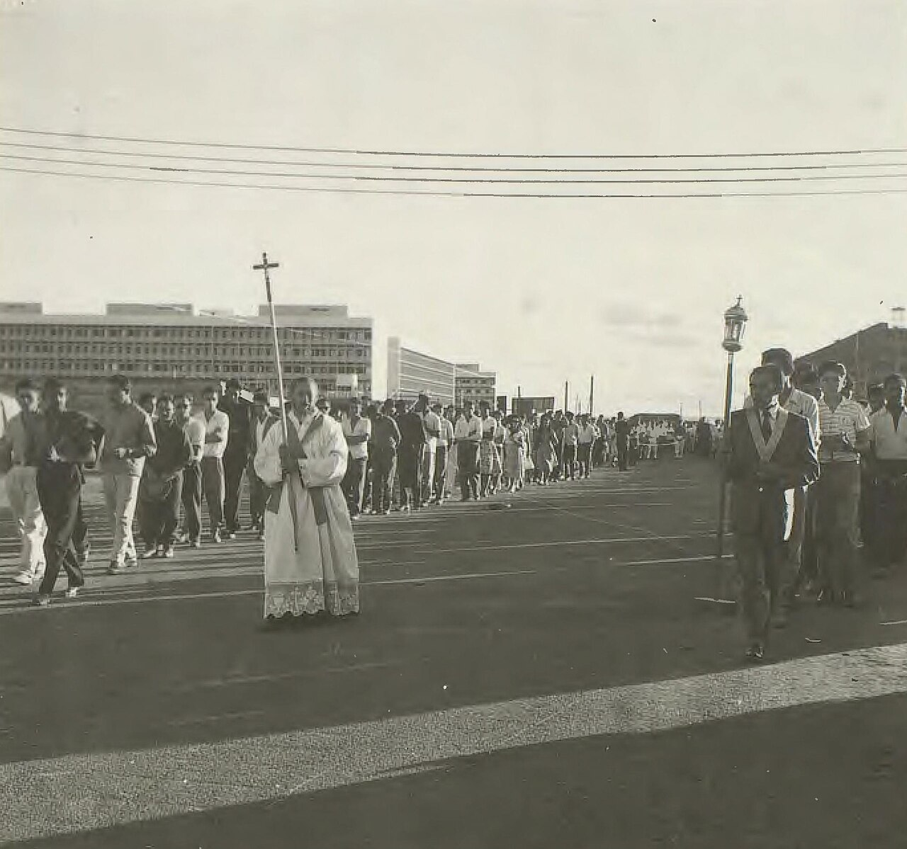
Inauguração de Brasília - BR RJANRIO PH 0 FOT 00749 0084, Acervo do Arquivo Nacional.jpg
Autor desconhecido · Fundo Correio da Manhã, Arquivo Nacional · Domínio público · Wikimedia Commons · 21 April 1960- Construção dos prédios ministeriais - BR RJANRIO PH 0 FOT 00694 0054, Acervo do Arquivo Nacional.jpg
Autor desconhecido · Fundo Correio da Manhã, Arquivo Nacional · Domínio público · Wikimedia Commons · 12 June 1960 - Palácio Administrativo, na Praça dos Três Poderes - BR RJANRIO PH 0 FOT 00742 0010, Acervo do Arquivo Nacional.jpg
Autor desconhecido · Fundo Correio da Manhã, Arquivo Nacional · Domínio público · Wikimedia Commons · 14 April 1960 - Supremo Tribunal na Praça dos Três Poderes - BR RJANRIO PH 0 FOT 00694 0065, Acervo do Arquivo Nacional.jpg
Autor desconhecido · Fundo Correio da Manhã, Arquivo Nacional · Domínio público · Wikimedia Commons · 11 June 1960 - Protesto no Congresso Nacional do Brasil, 17 de junho de 2013.jpg
Valter Campanato/ABr · Agência Brasil · CC BY 3.0 BR · Wikimedia Commons · 17 de junho de 2013 - Cidade Livre (Núcleo Bandeirante) - BR RJANRIO PH 0 FOT 00694 0084, Acervo do Arquivo Nacional.jpg
Autor desconhecido · Fundo Correio da Manhã, Arquivo Nacional · Domínio público · Wikimedia Commons · Unknown - Brasíia-DF, 29-06-2011. Palácio do Jaburu. (14261300971).jpg
Ichiro Guerra/PR · CC BY 2.0 · Wikimedia Commons · 2011-07-07 17:13 - Vista aérea da Asa Sul em direção ao Lago Sul.jpg
Portal da Copa (Governo Federal) · CC BY 3.0 · Wikimedia Commons · 2012-10-19 10:51:59 - Senado Federal do Brasil Plenário do Senado (15717805622).jpg
Moreira Mariz/Agência Senado · CC BY 2.0 · Wikimedia Commons · 2014-11-04 19:54 - Esplanada dos Ministerios a noite.jpg
Dasfour2022 · CC BY-SA 4.0 · Wikimedia Commons · 2017-06-09 06:16:21 - Brasília - Hotel Nacional à noite.jpg
Sintegrity · CC BY-SA 4.0 · Wikimedia Commons · 2023-01-06 19:48